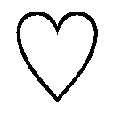

| ダブル・コントラクト1 鎖がつなぐ初召喚!? (ビーズログ文庫) | |
| 香月 沙耶 | |
| エンターブレイン (2012) | |
本作品の全部または一部を無断で複製、転載、配信、送信したり、ホームページ上に転載することを禁止します。また、本作品の内容を無断で改変、改ざん等を行うことも禁止します。
購入時にご承諾いただいた規約により、有償・無償にかかわらず本作品を第三者に譲渡することはできません。
本作品は、底本の表現や演出を考慮して本文縦組で制作しております。また一部のページを改変しております。ごらんになるリーディングシステムにより、表示の差が認められることがあります。
――さて、この豊饒なるロレンシア王国に住まう者ならば誰しも、天からやってくる貴きあの獣を存じておられることだろう。
獣の名はヴァハラ。
闇色の長い毛を纏ったしなやかな四肢と、銀灰の鋭い瞳を持つ。
鋭敏かつ聡明なるヴァハラとの誓約を望む者は数多いるが、獣は気まぐれなうえに知略に長け、人智の枠には収まりきらない。それゆえにこそ、手にできた者はこの世の至福を味わえよう。
神の使徒とも呼ばれし貴獣は、まこと不思議な力を持つ。
人語を話し、翼もないのに天を翔け、また姿を消し、太陽とも思しき光を発する。
光に触れたが最後、脆弱な人の身など瞬時に焼け焦げてしまうであろう。
だが恐れることはない。
ヴァハラは我らの友であり相棒であり、生涯の半身たりうるのだ。
誓約を望む者、その資格を欲す者は、ヴァハラ獣界と人の世界を結びし場へ向かえ。
ヴァハラの降り立つオフラの舞台へと。
月満ちる日の今夜は、真円の月が夜空に浮かんでいる。
肌に当たる風は生温く、今にも雨が降りだしそうだった。
鈍色の雲が月にかかり、やがてすっぽりと覆い隠したその時、獣が吐く生臭い息が、白銀の髪をした男の鼻腔に届いた。
「――」
音なき音が聞こえた。素早く半身を開くと同時に、男の前髪を鋭い爪が掠った。だが男は慌てず身を翻し、重みを感じさせないしなやかな動きで攻撃を避ける。
二度、三度と攻撃は続く。すべてかわすも、容赦ない追撃が男を襲った。
「闇討ち上等。何が欲しい？ オレの命か？ 悪いがてめえらみたいな雑魚にゃ、そう簡単にはやれねえよ」
ガッ！
男の喉めがけて牙が食い込まんとするのを、寸前で止める。片方の手でマズルを無造作に摑むと、反動を利用して襲撃者を投げ飛ばした。
それが始まりとなり、周囲にいたモノたちが、男に向かって一斉に飛びかかってきた。
その数、八。
一斉攻撃を食らっても、男は落ち着いていた。月が隠れ、闇夜となりながら、男は五感のすべてを使って攻撃を受け止め、避け、あるいはこちらから仕掛ける。
鋭い牙と爪を持つ襲撃者が束になっても、男に深手を負わせることはできなかった。
このままではダメだ。
襲撃者らはそう考えたのだろう。一定の距離を保ち、男を取り囲んだ。
「てめえら弱ぇなあ。そんな軟弱な牙で、オレを殺れると本気で思ってんのか。ああ？」
挑発しても、ただ低く唸るのみ。
とっとと全員ぶっ飛ばして首謀者の名を吐かせようと、男の全身を闘気が包み込んだ刹那。
毒々しいほどに甘い香りが鼻をついた。
ねっとりと全身に絡みつくような、濃密な......。
男は咄嗟に息を止めたが、わずかに遅かった。
「う......」
がくん、と膝が折れる。気がついた時には、地面に倒れ伏していた。
「さすがは王の中の王。この子らが束になっても敵わぬとは」
やわらかく、優しい響きの声。だが何を言っているのか、男は理解できなかった。
頭を叩き割られたような痛みに、目すら開けていられなかったのだ。
「な、......な、んだよ、こりゃ......」
「わたしのものになってくださいますね。――いらしてください」
黒い革手袋をした指が額に伸びてくる。
ぐっ、と人差し指が男の額を強く突いた。
傷はない。けれど指で突かれたところに、鮮血にも似た赤い色がじわりと広がる。
「や、めろ......」
ず、ず、ず。
額から引き摺り出される白い靄のようなそれを、黒い指が容赦なく摑み取った。
「や......」
ぶつん。
何かが千切れたような音がした瞬間に、男の意識もまた敢えなく途切れた。
革手袋の主は男にはもう目もくれず、手にした白い靄のようなそれを、そっと腕に抱いた。
「今夜からわたしが誓約の主ですよ。大切に愛してあげましょう。――ヴァハラの王よ」
◆◆◆
「そろそろ刻限だろう、ラウラ？」
清潔に整えられた部屋の中で、穏やかな声に問いかけられた少女は、はい、とうなずく。
「がんばっておいで。だが儀式に失敗しても、あまり落ち込むんじゃないよ。何しろローデリー地区ではここ三ツ年以上、儀式の成功者はいないのだから」
儀式を前に緊張する己の気を楽にしてくれようとしたのだろう、その少しずれた励ましに、少女は小さく苦笑した。
失敗した時のことは、何度も想像した。だからもう憂えずに、儀式の成功だけを願う。
「お言葉、ありがとうございます、ジェメル様。行ってまいります」
少女が向かう先は、美しき獣が降りてくる場所。
貴獣とも呼ばれる獣が住まうヴァハラ獣界と、人の世界が交わる、オフラ教堂の舞台だ。
――行ってくるね、姉さん。
やわらかな褥で眠る姉に、そっと目をやる。
白金のふわふわとした長い髪が一筋、頰にかかっている。整えようと手を伸ばすが、その指が姉に触れることはなかった。
ふと、庭に咲くサーリァの甘い香りを感じる。
じっと姉を見つめ、そうして思いきるように、唇を引き結んだ。
「必ずヴァハラの誓約者になって帰ってくるから」
強い決意を込めてそう言えば、眠っているはずの姉が優しく微笑んだように見えた――。
「ラウラ・ファウベル」
静謐なる低い美声で名を呼ばれる。
白い褥に眠る姉の姿を思い出していたラウラは、ハッと伏せていた顔を上げた。
光沢のある白糸で丹念に編み上げたレースのベールが、動きに合わせて微かに揺れる。
「はい」
跪くラウラの目の前には、精緻な刺繡が施された黒いローブの裾。
――なんて綺麗な刺繡。
銀糸は、天翔ける獣ヴァハラと国鳥コップラが、国花サーリァの咲く野の上空で戯れる姿を描いている。
裾や襟元といった、衣の縁にある刺繡が緻密であるほど、それを纏う人物の位は高い。
目の前の人物が着用するローブの刺繡は、それは見事なものだった。
刺繡やレースが大好きなラウラは、至妙な手仕事にうずうずと指が伸びそうになり......ローブから、まるで滲むように、スウ、と黒い何かが現れ出でたことに息をのむ。
青みを帯びた黒毛に銀灰色の瞳。ぴんと尖った耳や長い尾、しなやかな体軀は、地を駆ける犬や狼に似ている。けれどそれらの獣と決定的に違うところ。――四肢が宙に浮いていた。
――ヴァハラ......！
「美しい首飾りだ」
獣の口から、滑らかに人の言葉が溢れ出る。
ラウラは呆然とその獣を見......あっと声をあげると、レースの首飾りを外した。
シャラン。
大小さまざまな形のビーズをふんだんに編み込んでいるから、揺らすと涼しげな音を奏でる。
「よかったらどうぞ！」
「ありがとう。つけてくれ」
獣が優美に首を傾げ、近づいてくる。
――大事な儀式の前だっていうのに、し、失神しそう......！
その存在を欲して、欲して、どうしても手に入れたい獣が、こんなにも近くにいる。
首飾りのリボンを結ぶ時、指が震えた。
意図せず触れた獣の毛はやわらかくふわふわで、顔を突っ込んで思いきり抱きしめたくなる。
「どうだ、ユリシーズ。似合うか？」
首飾りを揺らしながら、獣は得意げに黒いローブの男を見上げる。
「アイネイアス」
密やかな声は、叱責する響きを孕んでいた。
自分が叱られたわけでもないのに、ラウラが身を震わせると、獣は、ふぅ、と目を細めた。
笑っているのだとはっきりわかる、人間じみた表情。
心をぎゅっと摑み取られたような衝撃が走る。
獣に見惚れているうちに、その姿は現れた時同様、空に溶けるように見えなくなってしまった。
思わず手を伸ばしかけたけれど、すぐに我に返る。
落ち着け自分と唱えながら、そっと息をついた。伸ばしかけた手を握り、胸元に押し当てる。
「我が半身が失礼をしました。首飾りはのちほどお返しいたしましょう」
「い、いえあの、教主ユリシーズ様の誓約のヴァハラの御身につけていただけたら、わたしもすごく嬉しいので！」
教主ユリシーズは少し迷うように首を傾げたが、すぐに礼を口にした。
ラウラは首を横に振り、あらためてこうべを垂れた。
「オフラ教ローデリー地区教主ユリシーズ様。今宵の召喚の儀に、私、ラウラ・ファウベルの名を挙げていただき、心より感謝いたします」
「ヴァハラの儀において、作法はただひとつ。――祈りなさい」
「はい！」
名を呼ばれてのいらえは緊張に震えたが、今度は違う。力強く、ラウラはうなずいた。
教主ユリシーズのヴァハラ――アイネイアスの姿を脳裏に思い浮かべる。
美しい毛の色。まるで夜を纏ったよう。
そしてあの銀色の瞳......！ 深々と地に降り注ぐ月光と煌めく星のありったけを、ぎゅっと凝縮したような、幻想的な色だった。
――絶対に手に入れるから。
ラウラの決意を感じ取ったのだろう、頭上で教主ユリシーズが笑みを零す気配を感じた。
「ヴァハラの加護を」
「ありがとうございます」
ヴィン、リィン、ヴィィィィン――
微かな衣擦れとともにユリシーズがその場から去ると、弦楽器と鈴の音が鳴り響き、また甘い香りが鼻腔をくすぐった。
儀式が、始まる。
ロレンシア王国において、ヴァハラという獣は特別な意味を持つ。
人の世界ではなく、ヴァハラ獣界にのみ生息するその獣は、犬や狼に似た姿をしている。だがそれらとは決定的に違う部分がある。
翼もないのに、自在に空を駆けるのだ。
それだけではない。その身は大気に溶け、体内から光を放ち、人語を話し、己が決めた半身たる人間の身を守る。知恵を授け、決して離れずに寄り添う。
そんなヴァハラを、ロレンシアに住まう民人は、神の遣い、あるいは神そのものと呼ぶ。
ヴァハラを得るための手段はただひとつ。
『オフラ教』教堂の儀式場で獣を召喚し、誓約を結ぶのだ。
『オフラ教』とは、ヴァハラと人を繫ぐことを命とした教団である。
ヴァハラを貴獣と尊び、また人の世界とは異なるヴァハラ獣界やヴァハラそのものを研究、保護し、人と貴獣との橋渡し――ヴァハラの儀を取り仕切る。
儀式は一ツ月に二度、月満ちる日と月在らずの日と決められている。
ロレンシア国民であれば誰でも、その日が特別な夜であることは知っているが、誰が儀式に臨めるのかは、当の本人と家族にしか知らされない。
儀式は人界にやってきたヴァハラの機嫌を損ねないようにと、粛然とおこなわれるのだ。
今夜、ラウラはその、ヴァハラの儀に臨む。
ずっと、ずっと願っていた。ヴァハラが欲しい、と。
ヴァハラはやわらかく白い布やキラキラ光る石を好むため、今宵のラウラは、純白のドレスとレースを身に纏っている。
自作のレースアクセサリーには、ビーズや模造石をたくさん用い、夕焼けにも似た茶色の長い髪をすっぽりと覆うように、レースのロングベールまで被った。
オフライト――オフラ教の布教活動をおこなう者たちの一部は、花嫁もかくやとばかりの、ラウラの飾りたてっぷりを嗤ったけれど、気にしない。
――わかってるわよ、こんなのっぽに、ふわふわが似合ってないのは。
同じ年頃の少女と比べ、ラウラは頭半分ほども背が高い。すらりとした体型は、少女らしい丸みに乏しいから、かつて通っていた女学校では、まるで異性に対するような眼差しを向けられていた。
ラウラの男装姿をぜひ見てみたいわ、なんて言われたことも、一度や二度ではない。
今回のようなドレスが、オフライトの失笑を買うくらい似合っていないってことは自分でも十分承知している。
嗤われて、ベールで隠れた頰が赤く染まった。けれどヴァハラが気に入ってくれるなら、どんな滑稽な扮装だってしてやるわ、とラウラは真っ直ぐに背筋を伸ばした。
ラウラが跪く場所は、奥の方は闇に溶けて見えないほど、巨大な円形舞台だ。
五段高くなった舞台上にはラウラしかいない。
儀式場は椀を被せた形をしており、舞台の真上には屋根がなかった。そのため月満ちる日には丸い月が、月在らずの今夜は、漆黒の空がぽっかりと見える。
舞台を囲むオフライトは、三十人はいるだろうか。
彼らが奏でる弦楽器の音は低く、鈴の音は高く、それらの音が絡み合い、波のように絶えず迫ってきて、ラウラの胸に、ジンと響いた。
召喚の儀がおこなえるのは、生涯でただ一度。失敗すれば、二度と儀式に臨めない。
ヴァハラが降りてきてくれる確率は十人にひとり。
ヴァハラに気に入られて誓約できるのは、そのさらに十人にひとり。
つまり百人にひとりしか、ヴァハラを得られない。
ラウラが住むローデリー地区のオフラ教堂は、以前はよくヴァハラが降りてきてくれたそうだが、最近は誓約者が出ていないという噂だ。儀式をおこなったいずれもが、敬虔なオフラ教徒だったらしいのに。
けれどラウラは、不安や悪い予感は心から追い出して、強く一心にヴァハラを呼び続けた。
祈りと、音と、香が、その場を席巻する――と。
夜の闇の中に、じわじわと何かが広がる。ラウラの頭上の闇が、奇妙に歪んで見えた。
ぐるり、と闇が渦状に円を描いていく。夜がどこかへ吸い込まれていくようだ。
ここと、ここではない場所――人の世界と、ヴァハラが住まうヴァハラ獣界が繫がる。
渦状の闇の中央から、一筋の光が溢れる。
ラウラにはもう、楽器の音も聞こえていない。香の甘い匂いにも意識は向かわない。ただひたすらにその光景に見入った。
だから気がつかなかったのだ。
頭上から『何か』が降ってきたことに。
「どけ」
やけにぶっきらぼうで抑揚のない低い声が聞こえてきた直後に、ラウラは『何か』にぶつかったうえに突き飛ばされ、舞台上で派手に転んだ。
「いたあ......！」
石造りの舞台に倒れ込んだラウラは、たまらず悲鳴をあげる。
シン、とその場が静まり返ったのは一瞬。すぐに周囲のオフライトたちがざわめきだした。
「い、いったいどこから......」
「真上からだ。外壁を飛び越えてきたのか!?」
「儀式の途中で乱入とは......！ 儀式は失敗か？」
オフライトたちの声が耳に入ってくるなり、ラウラはサッと青ざめた。
「――し、失敗、って。失敗......!?」
青ざめていた頰が一転、怒りに紅潮する。
「ちょっと、あなた何!?」
立ち上がりざま、己の前に立つ人物に詰め寄る。
――うわ、おっきい！
十六歳の少女としては、ラウラはかなりの長身なのだが、これほど背の高い人物を見たことがなかった。ラウラより頭半分以上も大きい。
一瞬怯んだものの、大切な儀式に乱入してきた人物に、ひと言言わずにはいられない。
「今夜は月在らずの日。オフラ教堂内でヴァハラの儀がおこなわれることは、ロレンシア国民だったら誰でも知っているわ。にもかかわらず乱入してくるなんて。早く舞台から下りなさい！」
人差し指を、相手の胸に突きつける。
だが相手は何も言わない。それどころか、ラウラを見てもいない。
ほのかな灯りに照らされた冷たそうな横顔に、ラウラの胸は怒りではち切れそうになる。
「ちょ」
「来るぞ」
「え？」
先刻淡い光を発していたところから、目に痛いほどの鮮光が溢れだした。
眩しさにたまらず目を閉じるラウラを、さらに強風が襲った。
ベールはあっという間に吹き飛ばされ、高く結い上げた長い髪がめちゃくちゃに煽られる。
「ああっ」
暴風によろめきかけるが、必死に足を踏ん張る。薄目を開けて、風と光の出所に視線を注いだ。
その間にも舞台の周囲にあった火はあっけなく消え、先の尖った燭台が吹き飛んだ。
もう儀式どころではない。オフライトたちは悲鳴をあげて四方八方へ逃げていく。
ラウラにも、凄まじい勢いで燭台が飛んでくる。
抜群の反射神経で咄嗟に身を屈め、ひとつ目は避けることができた。
さらにひとつが足元を強襲する。ふわふわのドレスの裾が足首に絡みついたが、かまわず飛び上がってそれもかわした。
だが間を置かず、立て続けに燭台がラウラを襲った。
――避けられない、ぶつかる......！
だが燭台はぶつかる直前に、まるでバターのようにさっくりと真っ二つに斬られた。
「......え」
高い音を立てて床に落ちる燭台に、わけがわからず突っ立っていると、ぐい、と。
背後から肩を摑まれ、引き寄せられた。
「ちょっと!?」
男の胸と自分の背中が、ぴったりくっついている。そのうえ肩を摑んだ片方の手が、強風と飛んでくるものから庇おうとでもしているのか、ラウラの身体を抱き込んだ。
――こ、これ、だ、抱きしめられてませんか、わたし......!?
夢中で身を捩るのに、頑強な腕はびくともしない。
「はっ、放してってば！」
「来た」
えっ、と動きを止める。
男の言葉は正しかった。
光と風を従え、待ちに待ったヴァハラが、こちらの世界にやってきたのだ。
眩い光に目を細めながら、必死に獣の姿を探す。
光を背負い、強風にも揺るがない影を見つけた。
期待に、痛いほど胸が高鳴る。今、この瞬間、ラウラは背後の男も、身体に巻きついた腕の存在もすべて忘れた。
ぽひゅん。
奇妙な音がした直後に、光も風も、一瞬で失せた。
「やあやあ人間ども。出迎え大儀じゃ！」
ラウラの目の前に浮かぶ、『それ』。
「呼ばれたから来てやったぞ。存分に感謝せい！」
三歳児のような甲高い声。それなのに時代がかった、奇妙な言葉遣い。
「そなたが我を呼んだのか？」
「え。あ、......ハ、イ」
目の前の『それ』が、ずいとラウラに近づいてきた。
その距離、人差し指一本分。あまりにも近すぎてラウラの目が寄った。
『それ』は大きな黒い目でラウラを凝視したかと思うと、満足そうに二度三度とうなずく。
「美味そうな果実色の髪に、奥深い森林のような濃き緑色の瞳。やわらかく白い衣と美しい装飾、サーリァの清しい香り。よいな！ 我が好む顔に色に装いじゃ。そなた、名は？」
「ラウラ・ファウベル......です」
「我は、キルラ‐キルレ‐キロルじゃ。ラウラ、そなたのヴァハラになってやろうぞ！」
高らかに名を告げた『それ』は、前肢を上げると、ラウラの額に、ぽふん、と触れた。
小さな前肢の感触はやわらかくて温かい。
むふふと満足そうに笑う生き物を、ラウラは両手でガシッと摑んだ。
「うおっ、な、なんじゃ!?」
大きな黒目をきょときょとさせる、その様を、ラウラは食い入るように見つめる。
「ど、どーしたのじゃ、ラウラ・ファウベル？」
小首を傾げる姿の、あまりの愛らしさに、ラウラの心がきゅうん、と音を立てた。
――あ、ダメ、今心の真ん中を矢が直撃したわ。
「か、可愛い～～ッ！」
「うっ、く、苦しいぞ、首を絞めちゃダメじゃ！」
思いきり抱きしめ頰ずりするラウラを、ポカポカ叩く前肢の小ささにすらきゅんとする。
ちっちゃくってまんまるでふっわふわ。
「なんなの～この可愛いイキモノ！ 時代がかった奇妙な言葉遣い、全然似合ってないけど、それにすらなんだかきゅんとしちゃうのってなんなのかしら！」
『それ』を摑む手が震える。可愛すぎて目の前がクラクラしてきた。
「じゃからヴァハラとゆうておるじゃろうが！」
『それ』が苦しげにそう叫んだのを機に、はた、とラウラは我に返った。
「――ヴァ、ハラ？」
「そうじゃ。名はキルラ‐キルレ‐キロルじゃぞ。そなたならばキルラと呼んでよい。なぜならそなたは我の誓約者じゃからな！」
特別じゃ、と『それ』は胸を張る。
「キ、......キルリャ」
「キ・ル・ラじゃ！」
「キル......ラって、......えっと、ヴァハラ？」
黒毛に銀灰色の瞳。個体により若干のばらつきはあるものの、おおむね犬や狼に似た姿をしている。――というのが、人が認識しているヴァハラの姿だ。
だが目の前にいる『それ』はといえば。
大きさはちまっと掌に載るほど。ふわふわの毛色は純白で、頭上の一部だけ黒い。さらに左右の耳の間には小指の爪ほどの大きさの角が生え、まんまるな背中には金色の羽がついていた。
どのパーツをとってみても凄まじくキュートで、ラウラはうっとり見惚れかけては、いけないいけないと、首を振る。
――すぅぅっごく可愛いけど、こんなヴァハラ、見たことないってば！
つい先ほど見た、教主ユリシーズのヴァハラとは似ても似つかない。
というより、別の生き物にしか見えない。
「ヴァハラじゃぞ。しかも聞いて驚くな。我はヴァハラ獣界の王なのじゃ！ さあ存分に崇め奉れぇい！」
むふ、と胸を反らせたキルラ‐キルレ‐キロルことキルラを、ラウラは呆然と見つめた。
ラウラだけではない。風がやみ、明かりを手に戻ってきたオフライトたちもまた、あまりにも珍妙な自称ヴァハラの存在に、ひどく戸惑っているようだった。
人々の不審の滲む視線を受けて、自称ヴァハラ獣界の王は、む、と口元を引き締めた。
「貴様ら、我を愚弄するか。よい、我の力、とくと見るがよい、じゃ！」
キルラは上を向くと、カッと口を開けた。――かと思うと、ぽっかり開いた口から光が溢れ、空に向かって放たれた。
触れたら指は無残にも焼け焦げるに違いないと思わせるほど、暴力的な光の塊だ。
ヴァハラが発する光は即ち力だ。
光に触れたわけではないのに、ラウラの全身に痺れが走った。ことに、まるで光に触発されたように、キルラに触れられた額が、痛いほど熱くなる。
「どーじゃ！」
再び胸を張るキルラに、もはや誰も何も言わなかった。
「俺とも誓約してもらおう」
沈黙を破ったのは、ラウラの背後に立つ男だった。
キルラが出現してから、闖入者の存在をすっかり忘れていたラウラだったが、今の発言は聞き捨てならなかった。
「わたしがこの子の誓約者になったのよ。何を言うの!?」
冗談ではない。儀式を邪魔した部外者が、誓約者になれるとでも思っているのだろうか？
「確かにさっきは助けてもらったわ。ありがとう！ でもそれとこれとは話が別よ！」
だがラウラが怒りを向けても、目の前の男は少しも怯まなかった。それどころか、ラウラの存在など目に入っていないようだ。キルラばかりを見据えている。
「ちょっとあなた！」
苛立ちもあらわに腕を摑むと、男はようやくラウラに視線を向けてきた。
その顔を初めて真っ直ぐに、間近で見たラウラは、ハッと息をのんだ。
初対面なのに、見たことのある顔だったからだ。
年の頃は二十歳を幾つか過ぎたくらい。
先刻の暴風に幾分乱れているが、癖のない真っ直ぐな黒髪と、男らしい眉。
青い双眸は、身を強張らせるほどに鋭い。
通った鼻梁に、引き結ばれた薄い唇。
一見して、どこの芝居屋の役者だと思うほどに、造作が整っている。だが均整の取れた身に纏うは――軍服。
軍人だと悟った瞬間に身体が勝手に緊張し、男が手にしている剣と腰に佩いた鞘を見れば、さらなる驚愕がラウラを襲った。
鞘と柄を飾る、黒く丸い石。真ん中に十字の光......シャトヤンシーの見えるあの石は、王族とごくわずかな人物しか身につけることを許されない、ロレンシア王国を象徴する黒透石だ。
軍人で、黒透石のあしらわれた剣を持てる者といったら、軍のトップたる女元帥と、もうひとりしかいない。
「まさか、......ガーディナー将軍？」
その名を呟いたラウラの唇は震え、頰は青ざめる。
「おい、誓約を望む者。そなたの名はなんじゃ」
「ヒューバート・ガーディナー」
だが男は、無造作に名乗った。
この場で聞けるとは思わなかったし、決して聞きたくなかった名を。
「本物だ」
「英雄ガーディナー将軍が何故ここへ？」
オフライトたちのひそひそ声が聞こえてくる。
「そなたは英雄で将軍なのか？」
ラウラが誓約した小さなヴァハラは、興味深げに、男へ顔を寄せていく。
「正式階級は少将、英雄というのは勝手につけられたあだ名のようなものだ」
「英雄があだ名か。面白いのう」
キルラはしげしげと男を見つめた。
「夜空色の髪に紺碧色の瞳。装いは黒か。......あまり好みではないが、手にした白銀の剣にある黒き石と、襟と肩にある飾りはよい」
そう言って小さく唸ってから、こくりとうなずく。
「よし、そなたとも誓約しようぞ、二番目。我の名はキルラ‐キルレ‐キロルじゃ」
「え」
「ふたりとも我の誓約者じゃ。一番目のラウラ・ファウベル、二番目のヒューバート・ガーディナー！」
ラウラと同様に、キルラは前肢で男の額を、ぽふん、と突いた。
「ちょっと待った！ ふたりって何!?」
ヴァハラと誓約者は一対一ではなかったのか？
特別な縁によって結ばれた、唯一無二、絶対的半身だとラウラは聞いていたし、そんな関係にこそ憧れていた。それなのにヴァハラ一匹に対し、誓約者ふたりだなんて聞いたことがない。
自分だけの宝物になるはずだったのに、その宝物を誰かと共有しなければならないなんて、断じて認めたくなかった。
たとえそれが、この国の英雄、ヒューバート・ガーディナー将軍であったとしても。
「いかんのか？」
「いけないっていうか、普通一対一のはずよ」
「普通でなくてもいいじゃろ？」
「いいじゃろ？ って、そ、そんな可愛く首傾げてもダメよ！」
あまりの愛らしさに、そうねいいわよね、とついうっかりうなずきそうになるが、ラウラは首を横に振り続けた。
――負けるな、自分。いくら可愛いからって言うこと聞いちゃいけません！
「じゃがもう誓約すると言うてしもたから、こっちこそダメじゃもん」
簡単にダメと言われて、その場にへたり込みそうになったが、ラウラは諦めなかった。
キッと男――ヒューバート・ガーディナーを見据える。
「辞退してくださいますよね、ガーディナー将軍？ 今夜のヴァハラの儀は、わたしが申請して、教主に選んでいただいたのです。ヴァハラの所有権はわたしにあるんですから」
「断る」
相手は英雄将軍。でも怯んじゃダメ、と腹に力を込めて言い放ったのに、あまりにもあっさり断じられ、ラウラはショックのあまり絶句した。
「のう一番目。我、そもそも誓約の破棄の仕方なぞ知らんから無理じゃ。諦めよ！」
ふひ、と笑うキルラにばっさり宣告されたラウラは、ぽかんと口を開け......思いきり叫んだ。
「そんなバカな――！」
起伏に富んだ、広大なユージナル大陸には、五つの国がある。
ラウラが暮らすロレンシア王国は、大陸の東端に位置する。温暖で自然の災害もさほどない、恵まれた土地柄だ。
海に面しているため、近隣の島も幾つか支配していた。
王国、とあるように、ロレンシアは王により統治されている。
隣国との関係は、よくもないが、戦争が起きるほど悪くもなく、といったところで、ロレンシア王国は長い間平和が保たれていた。
だが外側から受ける印象とは裏腹に、王国の内側は火種を抱えていた。
長く続いた平和に膿んだ輩が、二ツ年前、クーデターを企てたのだ。
軍の諜報部でさえ認知していなかったその動きを察知し、直前に見事クーデターを阻止したうえに、首謀者たちを一網打尽にした男がいた。
彼の名はヒューバート・ガーディナー。
当時まだ二十歳、入隊して間もなかった彼の役職は、伍長。
貴族の子息は通常士官学校に入り、卒業後は士官として入隊する者が大抵だ。だが貴族の称号を与えられたガーディナー家の次男でありながら、ヒューバートは士官学校には通わず、下官として入隊した。
部下はたったの五人。
自分を加えた六人でクーデターを食い止めた彼の名は、国を、王を救った英雄として、国中に知れ渡った。
バザーでは姿絵が売られ、彼の活躍が書物となったため、ロレンシアに住む者であれば、彼――ヒューバート・ガーディナーの名と姿を知らない者はいない。
黒透石があしらわれた剣を持つ者は、軍の中では元帥と、王から拝領した彼しかいないというのも、書物で得た情報だ。
――その英雄将軍が、目の前にいる。
ラウラからすれば、ヒューバート・ガーディナーは実在する人間というより物語の登場人物に近い......要するに雲の上の存在だ。
なのに、目の前に本人がいるこの現実が、ラウラにはまだちゃんと受け入れられずにいた。
ヴァハラとの誓約後は、オフラ教に書類を提出しなければならない。
ラウラ、ヒューバートの順で、住所、氏名、誓約したヴァハラの名などを記入する。
その書類を書き終え外へ向かいつつ、ラウラは英雄将軍と前を飛ぶキルラをちらちら見た。
――それにしても、この子本当にヴァハラなのかしら。
人語を話すうえ、あの凄まじい光を出したことからも、能力があるのは確かだが、本来のヴァハラとあまりにも姿が違いすぎるから、内心首をひねるばかりだ。
大きさや毛の色はもちろん、頭の角と金色の羽つきヴァハラなんて、物語の中でだって見たことがない。
「おまえは本当にヴァハラなのか」
今考えていたことをずばり問うヒューバートの声に、ラウラはドキリとした。
「なんじゃ、二番目、そなた誓約者のくせに我を愚弄するか！」
「単なる確認だ」
そっけないヒューバートの声が気に障ったのか、キルラのやわらかな毛が逆立ち、ぱちぱちと音を立てて発光しはじめた。
「我はヴァハラじゃ。この小さき体軀がおかしいか？ 白い毛が奇妙か？ じゃが誰がなんと言おうと、我はヴァハラ獣界からやってきたヴァハラじゃ！」
キルラの身体がぷっくりと丸く膨らんだ。
「ちょ、キルラ！」
ラウラは思わずキルラに手を伸ばした。毛に触れた途端、パチッ、と光が跳ねて、ラウラの手を痺れさせたけれど、構わずそのまま抱き寄せる。
「そんなに膨らんだら身体が破裂しちゃうよ！」
落ち着いて、と撫でると、キルラはフーフー荒い息をついた。
「うう～、一番目、二番目が我をいじめるのじゃ～！」
ラウラの腕に顔を埋めるキルラの背中をトントンしたが、どうやら完全に拗ねたようだ。ぐりぐりとなおも頭を押しつけてくる。
「別に白い毛が奇妙というわけじゃない。白い毛のヴァハラなら知っている」
「え？」
ラウラ同様、キルラも顔を上げてヒューバートに視線を注ぐ。
「知っておる？ 白い毛のヴァハラを、そなたがか？」
ああ、とヒューバートはなんでもないようにうなずいた。
――ヴァハラって、黒毛だけじゃないんだ。
ヴァハラは、ラウラが思っていたよりずっと多様らしい。
「だったら最初からそう言ってください。キルラ、拗ねちゃったじゃないですか」
「ラウラ、拗ねたのではない。そんな子どもっぽいことはせん。我は傷ついたのじゃ」
ヒューバートは何事か言いかけたようだが、ふいと口をつぐむ。
何か言うことはないのか。たとえば謝罪とか、謝罪とか、謝罪とか！
だが待ってみても、ヒューバートはとうとう何も言わなかった。
なんて口が重い人なのかと呆れる。
「二番目、そなたにはガッカリじゃ！ 我はヴァハラ獣界の王なのじゃぞ、もっと大事にせい！」
「王、ね」
胡乱な目で見下ろされて、キルラはさらに拗ね......否、傷ついてしまったようだ。
「決めたぞ。そなたは我の名をすべて言え！ キルラ‐キルレ‐キロルじゃぞ。そう呼ばないと我はそなたに返事をしないと、今決めた！」
「どうでもいいことだな」
「ムキャーッ！ どうでもいいとは何事じゃ！」
飛び上がって小さな前肢でぽかぽかヒューバートを殴るが、まったく効いていないようだ。
脚の長いヒューバートは、まとわりつくキルラを気にせずどんどん歩いていく。置いてけぼりにされそうになって、ラウラは慌ててヒューバートに追いついた。
表門の門番に預けていたランタンを受け取ると、もう一方の手でキルラを抱え込む。
「ガーディナー将軍、わたし急いでいるので失礼しますね。さようなら！」
そう言うや否や、相手の返事も待たずその場から走りだした。
「ラ、ラウラ、待て。我から離れることはまかりならん！」
「もちろん離れるつもりはないわ。わたしと一緒に帰ろう」
「どちらともじゃ。我と一番目と二番目は、離れてはならんのじゃ」
ラウラは走りながら、二度、瞬きをした。その後にっこり笑う。
「冗談言っちゃ嫌よ」
キルラをしっかり胸に抱え直し、なおも走る速度を増す。
「冗談ではないのじゃ。あやつと離れてはならん！」
「でもわたしが住んでいるのはこっちだし、ガーディナー将軍のご自宅は知らないけど、近所じゃないことは確かよ。わたしが住んでいるお屋敷はね、ここからすぐ近くなの」
走ったらあっという間に到着よ、とさらに加速した時。
キルラを抱える左腕が、ぽぅ、とやわらかな光を発した。
「え、何これ......」
小指ほどの太さの鎖が、いつの間にかラウラの手首に絡みついていた。
何重にも巻かれた鎖はピンと張っていて、闇の中に消えている。
「誓約の鎖じゃ。ラウラ、気をつけるのじゃ！」
「気をつけるって何に気をつけるの？ 誓約の鎖っ、て」
宙に浮かぶキルラへ一歩近寄る。と突然、凄まじい勢いで背後に引き摺られた。
「い、やあぁ―――ッ！」
手首が千切れてしまうのではないかと恐怖するほど、その力は強く、尋常ではなかった。
転びそうになりながら、必死に体勢を立て直す。夜の闇を弾いて鈍く光る鎖に引かれるまま、ラウラは抗う術もなく全力疾走させられた。
いったいどこへ、と焦って顔を上げた、目の前に迫るのは、ひとりの男。
――ガーディナー将軍！
ラウラは我が目を疑った。
自分の手首に巻かれた鎖は、ヒューバートの右手首に絡まる鎖と繫がっていたのだ。
まさか彼が引っ張っているのかと目を剝くが違った。鎖はヒューバートに近づくにつれ、どんどん短くなっていく。
人の手でつくられたものではないのだ、この鎖は。
と、いうか、今、差し迫った一番の問題は......。
ピンと張った鎖は、あともう少し。互いの距離はあっという間に縮まっていく。
勢いをなくせないまま、ラウラはヒューバートに思いきりぶつかった。
硬い感触の軍服の胸に顔から突っ込んだラウラは、強か鼻を打った。
「うう～～ッ」
痛い。でもそれどころじゃない。
――ま、また抱きしめられてませんか、わたし!?
ヴァハラの儀では背中からだったが、今回は面と向かってだ。
再びの急接近に、鼓動が暴れ狂う。
ふう、と頭上からため息が落ちてきた。
「ずいぶん厄介なものだな。誓約の鎖はヴァハラとのみ繫がるんじゃないのか」
「......え」
ヒューバートの声は低くて、ラウラにはすべては届かなかった。
ただ、厄介、という言葉だけが耳を直撃して、一層身が縮む。
「一番目、大事ないか？」
「だ、......大丈夫。大丈夫だけど」
英雄将軍と距離がまったくないこの状況で、どうしたらいいのかラウラにはわからない。だがひとまずは、ここから離れなければと、そぉっと胸元から身を退いた。
意識して深い呼吸をひとつ。そうしてから、おずおずとヒューバートを見上げた。
――こ、怖いぃ......。
怒りとか苛立たしいとか、そういう顔をしてくれていた方がよほどましだ。
顔の筋肉が退化してるんじゃないのと、頰をつねってやりたい衝動に駆られるほど、ヒューバートの表情には何も浮かんでいなかった。
涼しげな目元だわと信奉者の女性をうっとりさせるであろう双眸も、間近で見ると、迫力がありすぎて本当に怖い。睨まれたらその場で鼓動が停止してしまいそうだ。
「誓約者同士は、鎖で繫がれるということか」
「そうなのじゃ二番目。一番目と二番目で我は半分こ。じゃが我は半分にはなれぬから、ふたりに離れられては困るのじゃよ」
困るのじゃよって、困るのはこっち......。
衝撃的事実に、ラウラは喉を鳴らした。
つまりキルラの誓約者である限り、ラウラとヒューバートは決して離れられない。離れようとしたら、先刻のように鎖が出現して、ふたりを強引に近づける――ということか。
あらためてその事実に思い至るなり、背筋に震えが走る。
「む、無理よ、キルラ。これからずっと、ガーディナー将軍と離れられないなんて。生活環境も住んでいるところも違うし、将軍にもわたしにも仕事がある」
「一緒に住めばよいではないか」
「結婚もしていないのに、未婚の男女が一緒に住めるはずないでしょう!?」
ラウラは真っ赤になりながら、とんでもない、と首を振った。
「では結婚すればいいのではないか？」
何が問題なのか我にはわからん、とキルラは可愛く首を傾げる。
「ヴァハラにはわからないかもしれないけど、結婚ってそんな簡単にできるものじゃないの」
「そうなのか？ 我らヴァハラは簡単に結婚しとるぞ」
「え、ちなみにヴァハラの結婚って、ど、どんな感じなのかしら」
神秘のヴァハラの結婚事情なんて今後滅多に聞けないだろうと、つい好奇心で聞いてしまった己を、ラウラはすぐに死ぬほど後悔する。
「まぐわえばいいのじゃ。簡単じゃろ？」
「――ま」
その単語がいったい何を指すのか、ラウラは咄嗟に理解できなかった。
「じゃが我はまぐわうという意味がよくわからん。どういう意味なのじゃ？」
「同衾するということか」
ヒューバートの捕足に、どーきん......、と呟いた刹那、
「いやあ！ 乙女の前で、なんてこと言うの!? 将軍もキルラもひどすぎるわ！」
一気に血の気が集中した両頰を掌で包み込みながら、ひとりと一匹を睨みつけた。
「一番目がどうして我をひどいと言うのか理解できん。のう二番目、我にわかるように説明をするのじゃ」
「乙女だからだそうだ」
「乙女は結婚の話をするとひどいと言うのか？ じゃが一番目が結婚の話をしたのに、ひどいと言われるのがなんとも解せん」
嫌だ、最低！ と叫ぶラウラの前で、キルラはうむむ、と夜空を睨みつけた。
「のう二番目、そなたも意見を出すがよい。ラウラが困っておるそうじゃからな」
ヒューバートの視線が、ゆっくりとラウラに向けられた。
結婚とか同衾とか、そんな言葉が頭の中をぐるぐる回っている。が、感情の滲まない視線を受けるなり、冷水をぶちまけられたように、背筋がシャンと伸びた。
「誓約破棄ができないというのなら、ともに行動しともに暮らすしかない」
ごくあっさりと、ヒューバートは言った。
「......え」
「選択の余地はないんだろう」
「ま、待ってください、普通そんな簡単に納得しないでしょう!? ずっと一緒なんですよ、離れられないんですよ、わたしたち！」
「仕方がない」
来い、と引っ張られる。
ラウラは引かれるまま、一歩、二歩と進む。
こんな大事を、『仕方がない』のひと言で済ますことができるのは、相手が男だからか、貴族だからか、英雄だからか、――あるいは軍人だから、なのか。
ごく普通に、誰もが持っているであろう常識が通じないなんてどういうことなのか。
「どこへ行くのじゃ、二番目」
「俺の家だ」
「ガーディナー将軍の、ご自宅？ ちょっと待ってくださいってば」
はっと我に返ったラウラは、慌てて足を止めた。
「ならおまえの家に行けばいいのか？」
「え、わたしの、家......は、む、無理です！」
いきなりヒューバートを連れていくのは非常にまずい。かといって、このまま帰れないのはもっと困る......と、半ばパニックに陥るラウラに対し、悔しいことに英雄将軍は平然としている。
「では、決まりだ」
ヒューバートはあっさりそう言うと、再び歩きだした。
こちらの都合などお構いなしに、ヒューバートは先刻とは逆方向――つまりラウラが行きたい方からどんどん離れていく。
「ちょ、このまま行くなんて言わないでしょうね？」
「行ったら悪いか」
ラウラは啞然とした。
「悪いに決まっているでしょう!?」
「なぜ。不都合があるか」
「不都合ありまくりですよ！ なんのためにわたしがヴァハラの儀をしたと思っているんです」
「なんのためだ」
無表情で、声にもまったく抑揚がない問いに、ラウラはカチンときた。
「ヴァハラの力を借りたいからですよ！ 大体将軍、そもそもなんだってあんな形で儀式に乱入してきたんですか。ヴァハラが欲しいなら、オフラ教に申請すればいいでしょう？」
強引なことをしたのだ。何かよっぽどの理由があるのだろう。いや、なかったら怒る！
自分だけのヴァハラになるはずだったのだ。それがふたりで一匹。しかも離れられないなんて。
「乱入するつもりはなかった」
「乱入するつもりはなかったのに、ヴァハラの誓約者になろうとしたんですか？ なんで？」
勢い込んで、続けざまに問いを投げつける。
さあどうぞ言ってください！ とヒューバートを真っ直ぐ睨み上げた――が、いくら待っても、答えが返ってこない。
「なんとかおっしゃっていただきたいんですけど......！」
そう、あらためて訊いたのに、やはりヒューバートは無言を通す。
黙秘、ということか。
こめかみがキリキリと引き攣った。
「......つまり、将軍は大した理由もなしにヴァハラの誓約者になったと、そういうことですかね。だったらわたしの方に先に来てもらっても構いませんよね！」
英雄だとか将軍だとか、もう関係ない。
――そもそもわたし、将軍の部下じゃない、ただの一般民だもの。言うこと聞く道理はないはず！
ラウラにはしなければいけないことがある。遠慮などしてはいられないのだ。
が、腕を引っ張っても、ヒューバートは一歩たりとも踏み出そうとしない。
顔を真っ赤にして力任せに引っ張るのに、まったく、ピクリとも動かない。
「ガ、ガーディナー将軍、そんなにわたしを困らせたいんですか!?」
「困らせるつもりはないが、俺の方に来てもらう」
「わたしです！」
だが成年男子、しかも屈強な肉体を誇る将軍ヒューバートと、少しばかり背は高いが、一介の十六歳女子であるラウラでは、力の差は歴然としていた。
「う～～～！」
しばらくがんばっていたが、とうとう力尽きてラウラはその場に座り込んでしまう。
「気が済んだか」
ヒューバートはあっさりそう言うと、ラウラをひょいと持ち上げた。
「ひゃ、あッ！ な、何するんですかッ！」
「俺の家に持ち帰る」
「も......っ、わたしは荷物ですか！」
「荷物ならもっと楽だ」
わたし荷物以下!?
あまりの言いよう、扱いに、手足をばたつかせると、
「落とす」
落ちる、ではなく、落とすって言った！
ラウラの怒りは頂点に達する。
「ちょっと下ろしなさいよ、このヒトサライ！ 何よこの荷物以下扱い。天下の英雄将軍が、善良な一民間人にこんな狼藉を働いていいと思ってんの？ 訴えるわよこのヤローッ！」
もはや敬語も出てこない。
蛮行には暴言で対抗だと、ラウラは矢のようにヒューバートを罵倒する。
背中や肩を手当たり次第に叩くのに、ヒューバートはまったくの無表情で、ラウラの言葉も拳もさっくり無視する。
「ちょっと、誰か助けて！」
だがそう叫んでも、月在らずの夜遅くに外出をする酔狂者なんて、滅多にいない。
ただラウラの叫び声だけが、空しく響くばかりだ。
――もう最悪！ 将軍がこんな人だったなんて！
さらに叫びかけたその時、ヒューバートがいきなり抜刀した。
「え、な、なんで剣を抜くんですか？ そりゃ確かに言いすぎたかもしれませんけど、あながち間違ったことも言ってないと思うんです。あの程度の罵倒で斬り殺されるなんて、ちょっと割に合わないっていうか......ぁっ！」
おろおろとラウラが叫んでいる途中で、夜の闇の中から、何人もの走る音が聞こえてきた。
――酔狂者がいた！
だが走ってきた者たちは、あっという間にラウラたちを取り囲む。
「......な、なんですか」
「ヒューバート・ガーディナー、覚悟！」
いきなり叫んだかと思うと、男たちは剣を抜き、一斉に襲いかかってきた。
「ええ......ッ!?」
――暴漢!?
「し、将軍、下ろしてください！」
ヒューバートはラウラを肩に担いだままという状態だ。いくら英雄将軍だからといって、剣で襲ってくる輩、しかも複数を相手になんてできるはずもない。
だがヒューバートはラウラの懇願まじりの声をさっくり無視したばかりか、とんでもないことを言った。
「すぐに済む」
「そんなわけっ......」
「人質にでもされたら面倒だ」
いきなりヒューバートの身がふわりと浮いた。
「うそぉ――！」
しなやかな動作ながら、完璧に同調できるはずもない。不安定な状態を強いられ、ラウラは目を回しかける。だが吞気に気分が悪くなっている暇などなかった。
大声で威嚇しながら剣を振り上げる男たちを、まるで風に逆らわず吹かれる木の葉のようにさらりとかわし、ガラ空きになった急所に、刃ではなく柄を突き上げる。
「ぐぅ......ッ！」
続いて突っ込んできた大男を背後に飛んで避け、退いた足で一気に前へ踏み込む。
左肩から腹まで、白刃が真っ直ぐな線を描く。
――き、斬った!?
だが、恐れていた血飛沫は上がらなかった。ラウラが知らない間に、ヒューバートは剣を峰に反していたのだ。
峰とはいえ、正確に打ち込まれれば巨軀であっても衝撃だったようで、そのままばったりと倒れ込んだ。
ロレンシアの英雄。
そう呼ばれるべき人なのだと、ラウラはあらためて思い知る。
ヒューバートの剣は流れる水のようであり、突然吹き起こる風のようであり、天から射す光のようだった。
人の知略や力など役に立たない自然のように、圧倒的で力強い。
ラウラを担いでなお、この強さ。とすれば、もしラウラという荷物がなければ、どれほどの実力があるというのだろうか。
暴漢たちは、あまりにもあっけなく倒された。
「凄まじい剣の腕じゃ、素晴らしいぞ二番目！」
興奮したキルラが、きゃっきゃと喜びながら、宙でくるくる回っている。
だがその英雄将軍の剣の腕をまざまざと見せつけられたラウラは、小さく喉を鳴らした。
――すごすぎる......。
「のうのう、二番目の家はどこなのじゃ？」
「まだしばらくかかる」
「楽しみじゃのう。のう、ラウラ？」
ふわふわのキルラが、ラウラを覗き込んでくる。
「ううう......」
「ん？ どうして一番目は唸っておるのじゃ？」
ヒューバートの視線がこちらに向く気配を感じた。
ちら、と目をやると、何人もの暴漢を倒したばかりだというのに、その双眸に猛りは一切ない。澄んだ水面のように静かな眼差しだ。
ラウラは唇を引き結ぶと、目の前で首を傾げているキルラを、ぎゅう、と抱きしめた。
「ラウラ、どうしたのじゃ？ 暴漢はみな二番目がやっつけたのじゃから、怖くはないじゃろう？」
「べっ、別に怖くなんてないから！」
そう、怖くなんてない。
暴漢も――ヒューバートも。
あくまでも強気にそう言いながらも、逆らうのはちょっと控えた方がいいのかな......、とラウラはひっそり心の内で呟いた。
「もういいです、下ろしてくださいってば」
いくら望まない来訪だとしても、他家へ、その家の主に担がれて入るなんて、無作法にもほどがある。
だてに英雄将軍ともてはやされているわけではない。
かなり長い距離を歩いたにもかかわらず、ヒューバートは息ひとつ乱さず、ラウラをガーディナー家まで運びきった。
体力自慢も甚だしい。
「逃げないか」
「ここまで来たらもう逃げませんよ。キルラだって寝ちゃっているし、そもそも離れること、できないですし」
別に怖かったわけではないが、ずっと抱いていたキルラは、いつの間にかぴーぷー寝息を立てている。
ヒューバートはようやく、ラウラを下ろした。
「お腹痛い......」
ずっと肩に担がれてきたのだ。ヒューバートも重かっただろうが、無理な体勢を長時間強いられていたラウラだって辛かった。圧迫された腹が鈍い痛みを訴える。
「腹？」
大丈夫か、とでもいうように、あまりにも無造作に腕が伸びてくるから、ラウラはひゃっと声をあげた。
「だ、大丈夫ですよ！」
今の今まで密着していたのだから、いまさらと言われるかもしれないが、あんまり簡単に触らないでほしい。
気遣いをするならもっと別の方面でしてもらいたいものだと、ラウラはがっくり肩を落とした。
先を歩くヒューバートに続き、そろりと一歩踏みだす。
広大な庭のあちこちに視線を向けていると、突然鋭い金属音がその場に響き渡った。
剣と剣がぶつかり合う嫌な音だ。
音のした方は正面玄関口で、男と剣を斬り結ぶヒューバートの姿があった。
――誰!?
ガーディナー家の敷地内でまさか再度の夜襲かと、驚きと恐怖に足が竦んだ。
だが、
「個人行動ごくろーさん、英雄バカ将軍」
聞こえてきたのは、男性にしては少し高めの、語尾の掠れた声。
「おまえももう気楽な伍長って身分じゃないんだから、ひとりで勝手な行動は慎めって言っただろうが。そのご立派な頭は飾りか、中身は空っぽか、バカか、アホか。ああ？」
激しい剣戟の合間にも、続けざまにヒューバートを罵倒する。
「......うわぁ」
将軍相手に、なんという容赦のない言い方。
だがその遠慮のない口調が、逆に相手が本気でヒューバートに危害を加える気がないことを、ラウラに気づかせる。
しかも目を凝らして見れば、ヒューバートに斬りかかっている相手は、軍服を纏っていた。
赤いふわふわの癖毛と、少年だろうかと思うほど、ほっそりした体軀が見える。ヒューバートより頭半分ほど低いから、ラウラとほとんど変わらない背丈だろう。
体格がずいぶん違うのに、互角に闘っているように見えるのはすごい。
「イム、おまえもヒューに何か言ってやれよ。こんな夜中まで捜させて超過勤務すぎる、綺麗な毛並みが寝不足でパサついたらどうしてくれるってさ」
ヒューバートが相手をしている男のほかに、もうひとり......否、人ではない。
ラウラの目に間違いなければ、あの足元にいるのは......。
「ヴァハラだわ」
キルラを抱く手に、覚えず力が入る。
「シド、あなたの怒りはもっともですが、そろそろ剣を収めてください。ヒュー、後ろにいらっしゃる方は、お客人ではないのですか？」
「ん？」
二十ガラン（歩数にして二十歩）ほど離れた場所にいるラウラに気づいた赤毛の男が、ぴたりと剣を止めた。そうして観察するように、ラウラをじっと見据える。
「なんだその花嫁風装束は。ヒュー、どこから盗んできた？」
赤毛の男は、ぶん、と剣を一度振ると、滑らかな仕草で鞘に収めた。
ヒューバートは軽くひとつ息をついて、赤毛の男に倣う。
「今後家で預かる」
ぶっきらぼうに、ヒューバートはそうとだけ言う。
「説明省きすぎです、将軍。それに今後って、わたし別にここに住むつもりは......」
ありません、と言いかけたラウラの足元に、するりとヴァハラがすり寄ってくる。
「あ」
「娘さん、こんな場所で立ち話もなんですし、中に入りませんか？ さ、どうぞ」
先刻赤毛の男にイムと呼ばれていた、黒に近い濃い灰色の毛色をしたヴァハラだ。
落ち着いた声で呼びかけられたラウラは、美しい獣の姿に見惚れる。
「さあ娘さん」
ゆきましょう、とエレガントに勧められたヴァハラ好きのラウラは、気づけばハイとうなずいていた。
「――つまり」
ラウラがヴァハラの儀からのことをすべて話し終えると、赤毛の男がまず声を発した。
シド・エリクソン少佐。
ヒューバートの幼なじみで側近だという。
燃えるような赤い癖毛に、茶の瞳は目尻が幾分垂れていて、妙齢の貴婦人に可愛がられそうな、愛嬌のある顔立ちをしている。
鼻の頭と頰には、よく見ればうっすらとそばかすが散らばっており、それが彼を子どもっぽく見せていたが、ヒューバートよりひとつ年上と聞いて、ラウラは密かに驚いていた。
シドは、ガーディナー家のメイドが出してくれた、大きなバスケットに入ったクッキーを嚙み砕きつつ、じろりとラウラを見据える。
「お嬢ちゃんのヴァハラの儀にこいつが乱入してきて、君とこの木偶の坊が誓約者になって、だけどふたりの誓約者って変則的っていうかむちゃなことをやらかしたせいか、ある程度以上誓約者同士が離れると鎖が出現するから離れられなくて、でもどっちも誓約を降りない、というか降りられない。......そういうことか」
「そのとおりです」
ラウラがこくりとうなずく。
まずは話を、と通されたのは、二階の私的な間だった。
ラウラは一人掛けのソファに、五人が掛けられる長椅子に座るシドは尊大に脚を組み、その足元にはヴァハラのイムが行儀よくお座りしている。
キルラはといえば、いまだにラウラの膝の上で就寝中だ。
「それで、問題のヴァハラってどこにいるんだ？」
「あの、ここに」
ラウラは己の膝を指した。
「――」
愛嬌があるはずのシドの眉間に、くっきりとしわが寄せられる。ふーっ、とあからさまにため息をつくと、シドは前髪をかき上げつつ口元を歪めた。
「それ、ぬいぐるみだろう？ 僕はヴァハラを見せろって言ったんだけど」
「ですから、この子がわたしの、......わたしとガーディナー将軍のヴァハラです」
シドの眉間がますます寄せられる。そうして己の相棒であるイムに、なんなのこれ、と無言で問う。
「まあヴァハラ獣界は広いので、こういうヴァハラがいてもおかしくないんじゃないですか？ わたしは知りませんけど」
と、なんともそっけない答え。
「じゃあ新種のヴァハラってこともあるわけか？ 新種ねえ。......解剖させてくれる？」
「ええっ!?」
ぼそりと呟かれたシドの最後の言葉に、ラウラは思わずキルラを腕に抱き込んだ。
「なんてね」
唇の片方だけを上げて、ふっと笑ったシドだが、
――いや、冗談じゃなかったよこの人。今の目は本気だった......！
ラウラはぶるぶる震えながら、シドからキルラを隠し続ける。
シドはクッキー入りのバスケットを手に持って長椅子から立ち上がると、我関せずとばかりに窓際に立つヒューバートに歩み寄った。
「ヒュー、おまえさ、ほんっとバカだね。動かずにいられないおまえの気持ちもわからないわけじゃないが、それで身動きとれなくなってたらどうしようもないだろうが」
低い声で、チクチク針で刺すように、嫌みは続く。しかもその合間に舌も溶けそうなほど甘いクッキーを、ひっきりなしに口へ放り込んでいるのだ。
豪快な食べっぷりに目を奪われていると、それで、と落ち着いた声がラウラにかけられた。
お座りをしているイムだ。
「あっ、はい」
「その小さきヴァハラは、本当に誓約破棄はできないと言ったのですか？」
「はい。『無理じゃ』って」
「困りましたね。誓約についてほかの者たちは口出しできません。この小さきヴァハラが誓約のなんたるかを学ばなければ、あなたとヒューは一生離れられない運命ですよ？」
ごく平静な声でイムは言うが、その内容は大層重いものだった。
悄然とうつむくラウラに、イムは呟いた。
「――の王でしたら、どうにかできるかもしれませんが」
聞きそびれたラウラは首を傾げるが、イムはすでにヒューバートへと顔を向けていた。
「今は難事に巻き込まれているし、ヒューの周囲は安全とは言い難い。彼らが外れ部隊だからといってもたまには軍部に足を運ぶわけで、その際部外者を同行させるわけにもいきませんし」
ひとりごとのようだが、『外れ部隊』という単語が引っ掛かる。
――外れ部隊って、正式名称じゃないわよね？
そういえば、とラウラは以前読んだ書物の内容を思い出す。
二ツ年前、ヒューバートはクーデターを事前に食い止め、国と王家を救った。
王は彼の活躍を大層評価し、
『ガーディナーがいなければ、国家転覆の憂き目に遭ったかもしれぬ』
そう言って、ヒューバートを軍で一番地位の高い『元帥』のすぐ下の『大将』に据えようとゴリ押しした。
ところが『大将』職は、代々高位の三貴族の中から輩出されてきたため、貴族とはいえ下位の出であるヒューバートに資格はないと、政治を司る宮廷と、国を守護する軍部のどちらからも、強固な反対があったという。
ずいぶん揉めたが、最終的にヒューバートは『少将』という位に落ち着いたのだ、と。
ヒューバート寄りに記されたその書物の内容を、ラウラははっきりと覚えている。
外れ部隊というのは、通常の軍から外れた動きをするという意味か、あるいは軍からつまはじきにされている、という意味か......？
――王様や元帥様の覚えもめでたいガーディナー将軍を煙たがっている人は、きっとたくさんいるんだろうな。
ふと、先刻の暴漢らを思い出す。
あれも、ヒューバートの存在を面白く思わない輩の仕業に違いない。
――ガーディナー将軍がヴァハラを欲した、その理由ってなんなのかしら。
軍務なのだろうと察しをつけていたが、先刻シドが言っていた『個人行動』が引っ掛かる。
個人行動ということは、軍人として動いていたわけではないのだろうか？
あの場にたまたまやってきたら儀式が執りおこなわれていて、幸運にもヴァハラが召喚されたから、誓約者になろうとした？
いくらなんでも場当たり的すぎるし、それではラウラも納得できない。
ラウラには、疑問に思うことがたくさんある。
ヒューバートの理由しかり、誓約者同士を繫いだ、誓約の鎖しかり。
「イムさん、誓約の鎖ってなんですか？」
イムは、銀というより金に近い魅惑的な瞳を、ラウラへと向けた。
「誓約の鎖とは、ヴァハラと誓約者が繫がった印です。儀式の際、その小さきヴァハラは額に触れましたよね？」
「はい」
「小さきヴァハラは、力を使ったことはありますか？」
「力？ ええ、一度力を見せると言って、光を放ちました」
「その時、額が痛むというか、むずむずしませんでしたか？」
痛いくらい熱くなりました、とうなずく。
「額のうずきは、ヴァハラと繫がった証拠。通常は、というか滅多なことでは見えませんがね、ヴァハラと誓約者は、その鎖で繫がっているのですよ」
「でも鎖で繫がったのは、わたしと将軍、です」
なぜ誓約者同士が繫がってしまったのだろうか。
イムは軽くため息をついた。
「そもそも複数の人間と誓約ができるなんて、思ってもみませんでしたよ。というより、しようとしても、できるとは思えない」
「できるとは思えない、というのは、心情的なものではなくて？」
ヴァハラと誓約者は、唯一無二の存在と言われている。だからこそ人々は自分だけのヴァハラを望んで、オフラ教堂の舞台にのぼる。
ヴァハラ自身も、己の誓約者に対しては思い入れがあるのだろう、とラウラは考えていた。
イムはラウラの問いを受けて、ふっと目を細めた。笑ったようだ。
「もちろん心情的なものではありませんよ。敢えて言うなら、技術的なものの括りに入るのではないでしょうか」
「......技術的、ですか」
「詰まるところ、わたしはシド以外の人間と誓約する術を知らない、ということです。わたしだけではありません。わたしが知る限り、ふたりの誓約者を持つヴァハラなど、一体もいません」
イムの思慮深い瞳が、キルラをじっと見据える。
――キルラがしたことって、そんなに普通じゃないんだ。
ラウラは途方に暮れて、己の膝の上で眠るキルラをそっと見つめた。
「普通ではないことをしてしまったから、誓約者同士――将軍とわたしが繫がってしまったんでしょうか」
「今回の件は完全にイレギュラーですから、わたしはあなたに明確な答えを与えることはできません」
「お嬢ちゃん、名前はなんだ？」
しおしおと肩を落としたラウラを、シドが呼ぶ。
「ラウラ・ファウベルです」
「ラウラね。先にお嬢ちゃんに言っておこう」
名前を聞いたのに、やはり『お嬢ちゃん』なのかと心の中で突っ込みつつ、ラウラはシドへと視線を向ける。
「そのチビヴァハラもどきが誓約破棄できないって言うんなら、こっちの用事が終わるまで、お嬢ちゃんには我慢してもらう」
「なんでわたしが我慢しないといけないんです」
ラウラは立ち上がって、猛抗議をする。
いくら相手が英雄将軍だからといって、ラウラばかりが我慢しなければならない道理はない。そもそもキルラの一番目の誓約者は自分で、すぐにでも叶えてほしい望みがある。たまたま誓約者になった将軍より、自分の方が優先されるべきではないか。
だがそう主張するなり、シドの双眸が眇められる。
年齢よりずいぶん若く見えるシドだが、さすがに軍人だ。酷薄な表情に、ドキリと心臓が嫌な音を立てた。
「嫌でもなんでも、お嬢ちゃんには従ってもらわなきゃ。というか、従わざるを得ないんじゃないかな」
「どういうことです」
「金の鎖が出た時、君がヒューに引き寄せられた、と聞いた」
「......それが？」
「つまりどこにいてもお嬢ちゃんの方がヒューに引き寄せられる、と推測される」
「......」
「だからお嬢ちゃんは、ヒューの行く方へついていくしかないってことだ」
ラウラは、こくりと息をのんだ。
確かにシドの言う通り、ラウラは引っ張られ、ヒューバートはその場から動くことはなかった。
「そんなのわからないじゃないですか。今度は将軍の方が引き寄せられるかもしれない」
「じゃあ実験でもしてみるか？」
うっすら笑うシドを前に、ラウラは言葉を詰まらせた。
鎖に引き摺られた時に受けた、手首がもげるほどの痛みを思い出したのだ。
二度と経験したくない痛みだった。
「最初からちゃんと言っておく僕らは紳士的だ。――お嬢ちゃんには僕らに合わせてもらう。自主的にヒューに従うこと。それが嫌なら、少し乱暴な手段を取らせてもらうが、どうする」
「......乱暴な手段」
訊きたい？ と無邪気を装って首を傾げるシドに、心底ぞっとする。
「そうだな、薬を使って意識を失わせて、縄で括って袋に詰めて、それを歩兵に担がせてヒューにつかせる。――なんてね」
――また「なんてね」って言った！
絶対、絶対冗談じゃなくて本気だ。
シドはラウラの自由を奪って、無理やりヒューバートに従わせるつもりなのだ。
無意識のうちに握っていた拳が、小刻みに震える。
――姉さんのもとへ、キルラと一緒に行かなきゃならないんだから。
だからここで引くわけにはいかない。
「そんなこと我が許さぁん！」
眠っていたはずのキルラが突然叫んだかと思うと、シドの顔に突っ込んだ。
「うぶ......ッ！」
「貴様誰じゃ！ なにゆえ我の一番目を虐めておる!?」
「髪を引っ張るなよ、ハゲたらどうしてくれる！ 解剖するぞ！」
「キ、キルラ」
「かいぼうっ！ なんと貴様、我がヴァハラ獣界の至宝であるから解剖しようとするか！ 貴様のようなヤツは成敗じゃ！」
「イム、おまえのんびり毛づくろいしてないで助けろ！ ヒュー、何他人事みたいな顔してるんだ、おまえのヴァハラだろう！」
ラウラは、キルラの活躍の間にシドの脇をすり抜けて隣室へ走る。そして扉を閉めると、すかさず内側から鍵をかけた。
「何をしている！」
壁越しにシドが叫んでいる。ラウラも負けずに、大声を出した。
「籠城です！」
「はあ？ 籠城？」
「そうです。わたしの望みを聞いてくれるまで、ここから出ません！」
「そんなところで籠城しても、稼げる時間なんてたかが知れているだろう。それこそ部屋に閉じ籠もりきりじゃ、おまえの望みは絶対に叶えられないじゃないか」
冷静なシドの声に、ぐっと詰まるが、ラウラはなおも声を張りあげた。
「わたしの望みが叶わない代わりに、将軍もそこから動けませんよね。将軍がどこかへ行くためには、わたしをここから出さないといけない！」
ラウラはきっぱりと言い切った。
「小娘、本気で怒るよ」
「わたしはもう怒っています」
シドの命令になんて従えない。
ヒューバートと離れられないのならば、半分は譲る。でも全部は譲れない。
その確約が取れない限り、ラウラは決してここから出るつもりはなかった。
扉の取っ手を握る両手が小刻みに震えている。
怖い。
ヒューバートの剣技と、シドの意識を失わせる、という言葉を思い出せば、手ばかりか全身に震えが走る。
稚拙な手段だ。扉を壊されたら、ラウラはもう抵抗する術を失う。
壁の向こう側では、シドがヒューバートに向かってだろう、強い口調でどうにかしろと詰め寄っているようだ。
――ガーディナー将軍。
強引にこの屋敷へ連れ帰った将軍だ。シドと同じように、ラウラに強要するのだろうか。
ドキドキしすぎて、胸が痛い。
落ち着かなければならないのに、肩に入った力を散らすことができない。
せめて、と意識して細い息を吐き出したその時、――カチ、と。
鍵が開く音がした。
ラウラはその場から窓に向けて、全速力で走った。
「小娘！」
最初にシドが部屋に入ってくる。振り返って見た彼の表情に、怒りや憤りはなかった。そのことがラウラを必要以上に追い詰めた。
何をされるかわからない......！
ラウラは両開きの窓を開け放つと、露台に進む。そうして露台の周囲を囲む、手すりの上に飛び上がった。
ここは二階。下は土。手の長さの二倍ほど先には、大きく枝葉を広げた名前も知らない木が植えられている。
暗いなか、そこまでを一瞬で目で捉えたラウラは、張りだした露台を支える柱を摑んでから、シドへと顔を向けた。
彼の背後にヒューバートの姿も見える。その距離、十ガランほどだ。
鎖が出現した時、五十ガランは離れていた。
――この距離だったら、いける。
「おい、バカな真似はやめておけ」
「あなたが追いかけてくるからでしょう。わたしだってこんなことしたくありません」
震えないで、と願いながら、ラウラは声を張った。
「ここから落ちれば、打ちどころが悪ければ命はないかもしれない。でもわたしは自分の命と同じくらい、叶えたいことがある。だからバカと言われても、今、ここで命をかけるんです。――ガーディナー将軍と一日交替で行動する。今日は将軍に従いました。だから明日はわたしに付き合っていただきます」
ラウラは、シドを、次いでヒューバートを真っ直ぐに見据えた。
「返事を！」
ラウラはたたみかけた。
シドがラウラを睨みつける。だがやがて大きなため息をつくと、わかった、とうなずいた。
ラウラがその返事に、怒らせていた肩をほっと下ろす。
「なんてね。甘いよ小娘」
シドの腕が一気に伸びてきて、ラウラを露台の床に引きずり下ろそうとする。だがシドの指が触れる寸前、ラウラは思いきり手すりを蹴った。
瞠目するシドから、自らの目標......大樹へと目を向け、手を伸ばす。枝を摑んで、ぐん、と身体を寄せる。
ラウラは見事、木にしがみついていた。
やったわ、と露台に並ぶ面々を振り返る。
だが喜んだのもつかの間、ラウラは息をのんだ。今宵二度目の鎖が出現したのだ。
ヒューバートとの距離は、十ガランも離れていない。
――それなのに、鎖が出てしまうの!?
「あ」
すがった枝が大きくたわみ、ラウラの身体は金色の鎖に引っ張られて宙に浮いた。
浮遊感に包まれたのは一瞬で、あとは手首に猛烈な痛みが走る。
「一番目――ッ！」
落下の恐怖と、鎖が巻きついた手首の痛みに、大きく目を見開いた。
その視界いっぱいに、夜の闇とは違う、漆黒の色が押し寄せてくる。
痛いほどの力で引き寄せられ、そうして次の瞬間には、地面に着地していた。
「――」
何がどうなったのか、まったくわからなかった。ただ呆然と、その状態のまま身を強張らせていることしかできない。
「むちゃをする。命をかけると言ったが、こんなバカげた場面で死んでどうする」
ようやく。
そろりと、身体が動く。ラウラはゆっくりと、己を救ってくれた男を見上げた。
「ガーディナー、将軍。......ご、ごめんなさ......」
逃げていた当の相手に助けられた。そればかりか、将軍の命まで巻き込むところだった。
鎖が出る距離は一定だと思い込んでいた、己の迂闊さに歯嚙みする。
この誓約はイレギュラーだと、イムから聞かされたばかりではないか。何が起きても不思議ではない。それなのに、浅はかな目論見をした自分に、ラウラはぎゅっと唇を嚙みしめた。
己の現状を嫌というほど思い知る。
鎖が出る距離が一定ではないという、その現実は、ままならないことへの苛立ちだけでなく、ラウラに恐れをも与えた。
キルラの誓約者である限り、ラウラはヒューバートと離れられない。
どの程度離れても大丈夫なのかわからず、ずっと鎖のことを気にして......怯えて暮らさなければならないのか――。
「本当にごめんなさい」
謝罪の声が震える。
「詫びは一度でいい。――二階から飛び降りてでも叶えたいことがある、か」
ヒューバートは低く呟いた。
「......え？」
「おまえには命をかけるほどの望みがあるのか」
望み。
――わたしの、望み......。
ヒューバートの言葉は、決して忘れてはいけないことを、ラウラに思い出させた。
一瞬でも弱気になった己を振り切って、決意を込めてうなずく。
「あります。だからわたしは、どんなに無理だと笑われても、ヴァハラの誓約者になろうと決めたんですから......！」
勢いのままヒューバートに顔を近づけ、一気に言い放った。
視線の先にある両の瞳には、怒りも苛立ちもない。そればかりか、静謐で、穏やかですらあり、まるで星夜を写し取ったかのように美しかった。
「――明日はおまえに付き合おう」
何を言われたのか、すぐには理解できなかった。
ぽかんとして、言葉もなくヒューバートをただ見上げていると、再び唇がゆっくりと開いた。
「おまえの提案に従う」
「......」
ようやく意味がラウラの脳に到達する。
にわかには信じ難く......けれどラウラが今、一番言ってほしい言葉だった。
「ほ、本当に......？」
ラウラの意志を無視してここまで連れてきた男だ。
喜ぶ前に、震える声でそう問うてしまう。
「噓は言わない」
ヒューバートははっきりうなずいた。
出会った時からずっと同じ、無表情だ。けれど噓や偽りの滲まない真っ直ぐな双眸が、彼は本当のことを言っていると、ラウラに教えてくれる。
――噓じゃない。本当に、将軍は折れてくれたんだ。
信じてもいいのだと自らにうなずいた瞬間、くたくたと全身から力が抜けるとともに、微かな恐れもまたしぼんでいった。
脱力したラウラを、ヒューバートの大きな掌が支えてくれる。
力強くて温かいその感触は、初めてラウラに緊張ではなく、ほのかな安堵を与えた。
また明日、とくっきり眉間にしわを寄せたまま、シドはイムとともにガーディナー家を辞していった。
ヒューバートが『勝手に』ラウラの要求をのんだことが気に入らないらしい。
とはいえ、二階から落ちたラウラたちに駆け寄ってきたシドの顔は、淡い灯りの下で見ても青ざめていて、「むちゃをするな、アホどもが！」と、散々ふたりを罵った。
どうやら相当驚かせ、もしかしたら心配もさせたらしい。
露悪的な発言が多いが、そんなに悪い人じゃないのかしらと、ラウラはシド評をマイナスからゼロ地点辺りまで引き上げておくことにする。
玄関ロビーでシドとイムを見送ると、ヒューバートは何も言わずに歩きだした。
本当に無口な人だなと思いながら、ラウラはついていく。
「将軍って無口ですね。会話を楽しもうって思う時はないんですか？」
もっと、いろいろ話してくれる人だったらいいのに。
これから一緒にいなければならないのだ。その日々はきっと、ラウラが想像する以上に、たくさんの困難が待ち受けていることだろう。
誓約の鎖という厄介なもので繫がれている限り、決して離れられない。だが大変な目に遭っている時こそプラスの感情を持っていたかった。
ヒューバートのいいところをひとつひとつ見つけて、一緒に過ごす時間を少しでも楽しいものにしたいではないか。
だが、前向きになろうとするラウラに対し、ヒューバートの返事はあまりにもそっけないものだった。
「面倒」
「は？」
「口を開くのが億劫」
しゃべることすら億劫だなんて、どんだけ面倒くさがりだと、ラウラは呆れる。
「いくら面倒で億劫だからって、最低限のことはちゃんとおっしゃってください。そうやって口をつぐんでばかりいると、周りの人は困るだろうし、誤解されちゃうことだってあるんじゃないですか？」
それでもヒューバートは、そうかとも気をつけるとも言わない。
むう、とラウラは唇を小さく尖らせる。
広い背中を見つめながら、ラウラはここで、ひとつの覚悟を決めた。
「わたし、わからないことがあったらそのたびに訊きますよ。うるさいかもしれませんけど、諦めてくださいね」
ヒューバートはぴたりと足を止めた。
「訊いてどうする」
「いろんなことが聞けたら将軍を理解できるかもしれないじゃないですか。黙ったままじゃ、わたしは将軍を知ることができません」
「......」
「これからずっと一緒にいるんですよ。いろんなことを知って、将軍を好きになりたいんです！」
ヒューバートの気持ちを少しでも引き出したくて、ラウラはそう叫んでいた。
ラウラを振り返ったヒューバートの双眸が、わずかに見開かれている。
――ん？ 驚いているの？ なんで？
ラウラは、直前に口走ったことを反芻し......、どっと顔が熱くなった。
「あ、......い、今のは、別に深い意味じゃなくって！」
――す、好き、って、好きになりたいなんて、何言ってるの、わたし！
内心悲鳴をあげていると、
「知りたいのか」
ふいに、ヒューバートの端整な顔が近づいてきた。
鼓動が跳ね上がる。
――近い、近いってば！
「し、知りたいっていうか......」
「何が知りたい」
そんな急に言われても、と口ごもる。
「......えっと、今夜......、そう今夜、儀式に飛び込んだ理由を聞かせてください。エリクソン少佐は、将軍がひとりで行動されたことを怒っていらっしゃったでしょう？ つまり軍務じゃないってことですか？」
咄嗟に出てきたわりには、我ながらいい質問だったし、先刻の『好き』発言から意識を逸らすことができた、......かもしれない。
「いや、軍務だ」
「なんの軍務じゃ？ 我も手伝ってやるぞ」
ああ、キルラ、さすがはわたしのヴァハラ！
その「軍務」――と言い張るならそれでもいい――において、将軍の不可解な、今夜の行動の意味が知りたいのに、と肩を落としたラウラを知ってか知らずか、キルラが絶妙にフォローしてくれた。そんなキルラを、ラウラは内心褒め称える。
だが、
「機会があれば」
ヒューバートの返答は、期待はずれも甚だしいものだった。
そのまま、ふたりの間に微妙にぎこちない空気が流れる。
そう思うのはラウラだけかもしれないが、無言の状態というのがとにかく気になってしまって、無理やり会話を続けようと、必死に話題を探す。
「あの、ところで将軍のご家族は？」
この屋敷に来てから、ラウラは使用人の姿しか見ていない。
夜も更けているし、もしかしたら家族は就寝中なのかもしれないけれど、無作法な訪問の仕方をしてしまったことが、にわかに気になってくる。
いくら望まない訪問だったとしても、とんでもない間違いをしているのではないかと、そわそわ落ち着かない。
「ここは祖父の家だ。本宅は王都にあり、一族のほとんどは向こうで暮らしている」
「あ、おじい様と暮らしていらっしゃるんですね。じゃあ明日にでもご挨拶をさせてください」
「旅行中でいないから挨拶は不要だ」
「え、じゃあ将軍はこの広いお屋敷に、おひとりで住んでいらっしゃるんですか」
肯定のうなずきに、ラウラはひっそりため息をつく。
位の高い方々は体面が大事と聞くし、それゆえに屋敷を見栄えよく整えようとするのだろうが、ラウラはつくづくもったいないと思う。
外聞なんてふわふわ実体のないものより実を取った方がいいじゃないと思う自分は、生粋の一般民なのだろう。
だが、ラウラが飛び降りた部屋へと戻ったところで、ラウラはその『見栄えを気にする位の高い方々』のカテゴリーの中に、この人は入らないのかもしれないと思った。
先刻駆け込んだ時には目に入らなかったが、広い室内には、ベッドと机、椅子、本棚、チェストくらいしかなかった。
飾りの一切ない、実用一辺倒のあまりにもそっけない印象の、この部屋は......。
「ガーディナー将軍のお部屋、ですか？」
そうだ、とヒューバートはうなずく。
室内を進みながら、ヒューバートは軍服の上着を脱いだ。そしてその下のシャツのボタンまでも、ふたつ外して首元を緩める。
「......」
確かに自室なのだから、寛ぐのは当たり前だ。当たり前だけれど、目の前でいきなり脱がれたら、ドキドキしてしまうではないか。
まさかここで着替えをされるのかと、挙動不審になりかけたラウラは、そこでとんでもないことに思い至る。
それは、今まで考えなかったのが不思議なくらい、大事なことで......。
――誓約の鎖で離れられない、ってことは、......つ、つまり。
部屋も一緒、もしかしたら、ベッドも一緒。
そしてさらに――
「ゆ......っ！」
「......ゆ？」
「ゆ、とはなんじゃ、一番目？」
「やっ、えっと、あの......！」
――湯浴みどうするの――――っ!?
鎖が出る距離は一定ではない。ということは、状況によっては、十ガランはおろか、五ガランすら離れられない時だってあるかもしれない。もしくは、一ガラン、なんてことも......。
ということは、
――湯浴みも一緒にしないといけないってこと!?
サァッと血の気が引く感覚に、ラウラはその場に立ち竦んだ。
件の将軍はそんなラウラにちらりと目をやると、ふいに肩に触れてきた。途端に、ひゃっと叫んだラウラは三ガランも飛び退る。
「おお、すごいぞ一番目。今ビョンッと飛んだぞ！ 人間も飛べるのじゃなあ」
「いやいや、飛べないよ!? というか、な、なんですか将軍！」
ヒューバートの手は、ラウラの肩に置いた形で空に浮いたままだ。
「どこか痛むのか」
「え？」
「奇妙な声を出すから、そこから落ちた時、どこか痛めたのかと思った」
「あっ、平気です。どこも怪我していません。わたしより将軍は」
「問題ない。で、何が『ゆ』なんだ」
「ゆ。......ええと、『ゆ』はですね、あの」
直球で言うべきなのか、それともそれとなく察してもらうべきか、と考えるが、後者は無理だと即座に却下した。
ちゃんと口にしなければ、ヒューバートはいつまで経っても気づいてくれないだろう。
「あのっ！」
意を決して顔を上げるが、真っ直ぐに見つめ返されて、たちまち顔から火が出たのではないかと思うほど熱くなった。
無表情なヒューバートが、わずかとはいえ目を瞠ったくらいだ。
「ゆっ」
「......ゆ？」
「湯浴みはどうなさいますか!?」
「......」
「あのっ、キルラの誓約者として離れられないのはもうお互いしょうがないですよね！ でも鎖が出る距離が一定でないってことは、つまりゆっ、湯浴みも一緒にしないといけないかもしれないってことで。湯浴みをしないって選択もありますけど、わたし今夜はひっくり返ったり転んだり全力で走らされたりしているわけで、ぜひとも湯を浴びたいわけです！ でも、し、将軍とは性別が違うことですし、結婚もしていないのに、一緒に湯浴みって、わたし的には非常に抵抗があるっていうか、つまりどうしようってすごく悩んでいるんですよ！」
最後は逆ギレかと呆れられそうな叫びで主張を終えたラウラは、荒い息を繰り返す。
まるで五百ガラン全力疾走をしたかのような鼓動と呼吸に、大きく肩が上下する。
その呼吸が落ち着き、やがて平常通りになっても、ヒューバートからの返事はなかった。
ヒューバートもキルラも、ぽかんとラウラを見るばかりだ。
「な、......なんとかおっしゃってほしいんですけど」
「我にはどうして一番目が悩んでいるのかがわからんから返事のしようがない。一緒に湯浴みすればいいではないか。一番目は我とも入りたくないのか？」
「や、キルラとは喜んで！」
「ならば別に悩むことはないではないか。我が背をゴシゴシしてやってもよいぞ」
え、それは魅力的。
泡だらけのキルラが、背中をするりと撫でてくれたら、きっと極上の洗い上がりになるに違いないと、ラウラはつかの間うっとりする。
だがヒューバートの深々としたため息に我に返るなり、無造作に腕を摑まれた。そうして右手にある扉へと向かうと、一気に開け放つ。
扉の先は、脱衣所だ。
「えええっ！ やっぱり一緒に入らないとダメですか――！」
ちょっと待って、ムリムリムリ、そんなの絶対ムリだってば！
裏返った声でそう訴えるラウラに、ごくごく冷静な声が、上から降ってきた。
「一度湯殿まで行って鎖が出ないか確認しろ。ここで待つ」
「は？」
「鎖が出たら、脱衣所に移動する。そこでも出るようなら、それはその時考えればいいだろう」
「......ええと、一緒には、入らない？」
語尾が微妙に裏返る。そろりとヒューバートの顔を見上げたら、ない、とあっさりうなずかれた。
「で、では......確かめてみます」
顔が熱い。
ひとり勝手におかしな想像をして、でもそれは見当違いであり、ヒューバートはまったくもってラウラのことなど眼中になかった、というわけで......。
恥ずかしくて情けなくて、ぐったりしてしまう。
肩を落としながら脱衣所に入り、左手首に視線を落とす。――鎖は、出てこない。
脱衣所は洗面室も兼ねていて、大きな鏡やチェストがあった。
板敷きの脱衣所を横切り、中にある仕切り扉を、そろりと開けてみる。
「湯じゃあ！」
主の孫であるヒューバートがいつでも入浴できるようにという配慮からか、ゆったりとした清潔な白い湯船には、なみなみと湯が満たされていた。
ラウラは服を着たまま洗い場まで進んだが、大丈夫。鎖は出ない。
はあああ......、と長い息をついた。
もちろん安堵のため息だ。
それなのに、ヒューバートの先刻の表情を思い出すと、嬉しいだけでなく奇妙な脱力感が全身を支配する。そのままここで座り込みたいくらいだった。
「一番目何をしておる、早く入るぞ。えーい！」
ラウラがぼんやりしているうちに、じゃっぽん、と音を立てて、キルラが湯船に飛び込んだ。
「おぶっ、ふ、深いぃぃ！」
「キルラッ？」
慌てて湯の中に両手を入れて、ぶくぶくと沈んでいこうとするキルラを掬い上げた。
「だ、大丈夫？」
「ううう......、わ、我には少し深かったようじゃ」
「少しじゃないと思うけど、ちょっと待って」
湯を掬う器を見つけ、そこに湯を張って、そっとキルラを入れた。
いい湯加減なのか、はうわー、と気の抜けた声をあげるキルラがおかしくて、ラウラは頰を緩めた。
「寛ぎすぎよ、キルラ」
脱衣所まで戻ると、ラウラは服を脱ぎかけ――だが、あっと声をあげる。
部屋に続く扉を押し開けると、腕を組んで壁に凭れかかっていたヒューバートが、ちらりと視線を寄越してくる。
「鎖、大丈夫みたいです。でも、あの......着替えがありません」
何せオフラ教堂から直接ガーディナー家に連れて来られてしまったのだ。
「チェストの中にある。適当に着ろ」
「......女物ってあります？」
「ない」
ヒューバートの私室の湯殿なのだ。彼以外の衣服などないに決まっている。
「ですよね......」
メイドさんの私服を借りたいなあ、と言ってみたかったが、ラウラは口をつぐむ。
わざわざ真夜中に呼んでは、メイドさんに申し訳ないし、そもそも普通の女性服は、ラウラには寸足らずだ。
転びまくって泥まみれのドレスを再度着たいとも思えず、ラウラは、ではお借りしますと頭を下げると扉を閉めた。
壁一枚向こうにはヒューバートがいると考えると、妙に落ち着かない。
足早に湯殿へと向かった。
「気持ちいい......」
温かな湯は、身体ばかりか心までゆるりと解してくれるようだ。
めまぐるしかった今夜を思い出して、ラウラは大きく息をついた。
ヴァハラの儀、キルラの出現、ヒューバートとともにした誓約。
賊に襲われたこと、この屋敷に連れて来られて、露台から落ちたこと......。
想定外のことばかりだったけれど、無事にキルラと誓約できたのだ。そればかりは本当によかったと思う。
小さな器の中でチャプチャプ湯と戯れている小さな獣に目を細める。
「ねえ、キルラ、ヴァハラ獣界ってどんなところ？ どうやってこちらに来るの？」
「それはのう、穴があるのじゃ」
「穴？」
「そうじゃ。ヴァハラ獣界と人の世を繫ぐ穴じゃ。そこを通った突き当たりには、すべてではないが、そなたらが言う『オフラ教』の教堂が建っておるのじゃ」
「そういえばオフラ教の祖師は不思議な力を持っていて、ヴァハラの出現する場所がわかったそうなの。それでその場所に教堂を建てたんですって」
もう五百ツ年も昔のことらしいけど、とラウラは聞きかじりの知識を披露する。
「この穴というのは我らにとっても特別なのじゃ。人の世に来るのを許されているのはヴァハラだけなのじゃよ」
「ヴァハラだけってことは、もしかして、ヴァハラ獣界にはヴァハラ以外の生き物もいるの？」
「もちろんじゃ。清浄なる水を纏う美しいもの好きな『ラハヤ』や、翼を持つ勇猛果敢な『スイカレンカ』、全身を純白の毛で覆われた、頭脳明晰な小人の『エジュウト』というのもおるよ」
「へえ......！ でも誰がヴァハラだけこちらに来ていいって『許した』の？」
ヴァハラ獣界にも掟や法律があるのかしらと問うと、キルラは小首を傾げた。
「昔のヴァハラ獣界の王が決めたらしいが、我は知らん」
そうなんだ、とラウラはうなずいた。
浴槽の縁に肘をついて、掌に頰を載せた時に、ふと左手首が目に入る。
「キルラ、なんで将軍とわたしが誓約の鎖で繫がっちゃったんだろうね？」
「我の誓約者じゃからじゃろう？」
「それはそうなんだけど、......うーん、やっぱりキルラもわからないか」
イムはイレギュラーだと言っていたし、誓約解除も知らないキルラだ。誓約者同士が繫がれた理由も知っているわけないか、とラウラは苦笑する。
――今は、キルラと誓約できただけでもよしとしないと。
「明日はわたしの姉さんを紹介するね。あと、お世話になっているジェメル様も。ジェメル様、ヴァハラが大好きだから、きっとキルラのことも可愛がってくれると思うわ」
「ジェメル様とやらは一番目のなんなのじゃ？」
「お父さんの友達で、研究の出資者になってくれたお方なの。ヴァハラのことに詳しくて、とってもお優しいのよ」
ラウラはにっこり笑う。
「それにキルラ、ふわふわキラキラが大好きでしょう？ わたしの姉さん、一目で気に入るわよ」
「一番目の姉をか？」
「うん。わたしの姉さん、すっごく可愛いの。たったひとりの、わたしの家族」
「――家族」
キルラは、まるで何かを思い出したかのように、すう、と目を見開いた。
どうしたのだろう、とラウラは首を傾げる。
「そういえば、ヴァハラは......キルラの家族は」
「おらん」
ラウラの言葉を、キルラはばっさり削いだ。
「我に家族はおらん」
はっきりした口調は、どこか、強がっているように聞こえる。
だからラウラは器へと手を伸ばし、キルラをそっと抱き寄せた。
「じゃあ、今夜からわたしがキルラの家族だね」
「――」
「誓約者で、家族。ね？」
にこりと笑うと、キルラはきゃふー、と声をあげて、頰にくっついてくる。
「では二番目のヒューバートも家族じゃな！ 一番目のラウラと二番目のヒューバートと我で、家族じゃ！」
「え、し、将軍も、か......。まあ、将軍がいいって言ったらね」
「ふひひ、もちろんいいと言わせてみせようぞ」
先刻のしょんぼりした態度はどこへ行ったのか、キルラは口を大きく開けて笑った。
借りたヒューバートの部屋着は、やわらかな布地でできた襟のある長袖の上衣と、嫌みなくらい長い下衣で、想像以上にブカブカだった。
少しでもまともに見えるようにと、袖と裾を折り目正しくめくったが、大きな衣の中で身体が泳いでしまっている。
――男の人って、こんなに大きいんだ。
女学校時代、数人いた年配の男性教師は、ラウラと変わらない背丈だったし、周囲にも大柄の男性はいなかった。
だからこんなにも体格の違う男性がいることが不思議というか、気恥ずかしい気がする。
なんだか自分が急に、小さな少女になったような錯覚を起こしそうになる。
――錯覚、錯覚だってば。
脱衣所の扉を開けると、先刻見た時と同じ状態のヒューバートが、視線だけ寄越してきた。
「お先にお湯をいただきました。あの、将軍もすぐに入りますか？」
ヒューバートが入るなら、今度は自分がここで立っていなきゃと見上げると、軽くうなずいただけで脱衣所に入っていった。
ちなみにキルラはヒューバートに家族になると言わせるのじゃと、湯殿に残ったままだ。
ラウラは壁に背を当てて、ずるずると座り込んだ。
湯に入って温まったからか、少し身体がだるい。ラウラは抱えた膝の上に、頰を載せた。
「姉さん、ジェメル様、ヴァハラの儀には成功しました。でも今夜は帰れそうもありません......」
ラウちゃんあんまりがんばらなくていいよお、という吞気な姉の声が聞こえた気がした。
幻聴だとわかっているけれど、ラウラは目の前に姉がいるかのように微笑む。
明日には帰るから、待っててねと呟くと、重い瞼をひっそりと閉じる。
――あー、でも将軍が戻ってくるまで起きていないと......。
このまま眠れたら、どんなに幸せだろう。
けれどこんなところで眠ってしまったら、あとでヒューバートに何を言われるか。いや、きっと何も言わず、ただ無言で見下ろすばかりだろう。
――それにわたし、どこで寝ればいいの？
ヒューバートと一緒のベッドで、なんてとんでもない。
そんなことを考えながら、必死に眠気と闘っていると、浴室に続く扉が開いた。
立ち上がろうとしたが、すでに眠りの淵に片足を突っ込んでいる身体は、持ち主の言うことを聞いてくれない。
「一番目はもう眠っているようじゃのう」
まだ起きているわ、瞼が上がらないだけ。そう言いたいのに、声も出ない。
「一番目は眠っていても美しく可愛いのう。また先刻のようなふわふわの衣服を着たらよいのに。二番目もそう思うじゃろう？」
やめて、可愛いなんて言われたことないから、背中が痒くなっちゃう。
「――まあ、勇気があるうえに興味深い性格をしているか」
――興味深い？ って、いったいどこを指しているのよ。
問い質したいのに、やっぱり目を開けられないのが悔しい。
「むふふ、ラウラはまことよい誓約者であり家族じゃ。ヒューバートも仲間に入れてやるのじゃからありがたく入っておくのじゃ」
ふっとヒューバートが笑ったような気配がした。
――もしかして、笑っている？ 将軍が？ み、見たい......。
けれどもう、どうやっても瞼は上がらない。
ラウラはそのまま、すとんと眠りに落ちた。
「ラウラ・ファウベル、十六歳。両親は十歳の時に失踪。四歳年上の姉クロエとともに、父親と交遊のあった人物に引き取られる。名門ローデリー女学校に在籍。現在は長期休学中。趣味、特技、レース編み。この特技を生かして、大通りに店を構えるノックス雑貨店に自作のレースアクセサリーを不定期に納品。精緻かつ華やかな装飾品は、毎回店に並べたその日に売り切れるほどの人気ぶり、だってさ。――人間って、外見にそぐわない特技を持ってるもんだな」
語尾が掠れる、少し高めの声で滔々と己のプロフィールを聞かされる。
寝ぼけたまま、その声を聞いていたラウラは、うっすら目を開ける。
「そろそろ起きないかね、小娘は」
ひやりとした声音に、ラウラは一呼吸ののち、いきなり覚醒した。
心地よい弾力のある場所から一気に起き上がる。
「おはようございます、娘さん。昨夜はよく眠れましたか？」
「おっ、おはようございます、イムさん。おかげさまでぐっすりです！」
ちなみにキルラはいまだに夢の中だ。へそ天状態でぴーぷー寝息を立てている。
「でね、ラウラ・ファウベル。おまえ今父親の友人の世話になっているそうだけど、その友人って、オズウェル・ジェメル高位貴族って本当なのかな」
数枚の紙をヒラヒラさせながら、シドが胡乱げな視線を向けてくる。
「本当です」
昨夜の今朝で、ラウラの背景を調べてきたというのか。
だとしたら、この童顔側近、侮れない。
上官――ヒューバートに報告していたらしく、その上官はすでに机に向かっていた。
――あれ。
ベッドに入った記憶がないことに気づいたラウラは、あっと声をあげた。
記憶がないなら、運んでくれたのは、キルラでなければひとりだろう。
――も、もしかして、......一緒のベッドで眠った......とか。
昨夜は落ちるように眠ってしまったから、その辺りのことをまったく覚えていない。
ものすごく気になるけれど、ここで訊いてしまったら、この赤毛の側近にのちのちまで冷やかされるかもしれない。
今はぐっとこらえて、あとで礼と詫びをする時に訊こう、とベッドから出ようとした時、目の前にポンと黒い布の塊が降ってきた。
「外出時には、必ずそれを着て行動しろ。これ命令ね」
「なんであなたに命令されないといけないんですか。......て、これ、軍服？」
「そう、僕のお下がり。小娘でかいからちょうどいいんじゃない」
「......わたし普通の一般民ですよ。勝手に軍服着たらまずいでしょうが」
「大丈夫、何か問題起きても揉み消すから。なーんてね」
――うわー、出たよ、「なんてね」が！
ラウラは今や、シドの「なんてね」つき発言はすべて本音であると理解している。
「あのね小娘。僕は別におまえに軍服を着せて晒しものにしたいわけじゃないんだよ」
「じゃあどういう意図があって軍服着なきゃいけないんですか」
シドは、そんなこともわからないのかと大仰にため息をついてみせた。
「小娘が昨日から鎖で繫がれている相手は誰だ？」
「......ガーディナー将軍です」
「そう、小娘すら知っているロレンシアの英雄、ヒューバート・ガーディナーだ。その英雄将軍のそばに、得体の知れない娘がうろちょろ纏わりついていたら、みんなどう思う？」
ラウラは、むう、と唇を引き締める。
シドの意図が、ようやくラウラにも伝わったのだ。
ヒューバートの顔は全国民に知れ渡っている。何しろ本人の姿絵が、そこら中で売られているのだ。
その将軍にぴったりくっついている、得体の知れない小娘......。
妙な噂を広めるよりは、ラウラを軍人と思わせておいた方がいい、ということだ。
「理解できた？ できたならそのブカブカの服を脱いでこれを着な。ほかに必要なものがあれば、メイドに借りればいい」
「あのー、将軍が私服を着るっていう選択は......」
「私服程度でごまかされてくれる国民だったら、僕も楽なんだけどねえ」
私服でもヒューバートだと気づかれる可能性が高いということか。
ラウラはため息をついて、わかりましたとうなずいた。
「うーん、短いなあ、気になる」
軍服は、奇跡的に肩幅も胴幅も袖や上着の長さも靴のサイズまでちょうど合っていたが、本来ならくるぶしまであるはずのズボン丈が脛までしかなく、それがどうにも落ち着かない。
「悪かったね、脚が短くて。長靴履いていて見えないんだからいいだろう別に」
「少佐、おしゃれっていうのは見えないところにこそ気を配らないといけないんですよ」
とはいえ、シドから渡された軍服は、想像よりずっと仕立ても着心地もよかった。
士官と下官とでは、使用する布地が違うのだろう。
光沢のある上品な黒の軍服は、紛れもないオーダーメイドだ。
袖と足の両際に走る金銀白のラインや、同色の肩章、立ち襟に刺繡された国花サーリァを描く糸は、一着分だけで、ラウラが一ツ年働いた給金分に匹敵するだろう。
長靴も丹念になめした上質な革を使い、足を締めつけずに履き心地が抜群にいい。
人界に来たばかりだから疲れているのだろうか、キルラはいまだに眠っている。
そろそろ起こさないと、とラウラが腕に抱き上げると、むーん、と寝言を呟いた。可愛い寝顔に、くすりと笑みが零れる。
「で、小娘の用事って何」
「ジェメル様のお屋敷に帰ります」
「ジェメル家ね。使いはもう出したのか？」
「......使い、ですか？」
なんで？ とラウラが首を傾げると、シドはやれやれとばかりに、長い息をつく。
「小娘に、貴族同士の付き合いってものを教えてやるよ。まずは何月何日何時にそちらに行きたいのですがご都合はいかがでしょうか、とお伺いを立てる。会ってもいいよと相手が連絡を寄越すまでは、足を運んではならない。突然訪問する行為は、田舎の物知らず貴族だと、向こう三ツ年は貴族の茶会、晩餐会、舞踏会、諸々折に触れバカにされ物笑いの種にされる」
「......」
「これ、貴族の常識だから」
「あの、わたし、ジェメル様のお屋敷に住んでいるんですけど！」
「小娘ひとりで帰るなら勝手に帰ればー。だけど、おまえら離れられないんだろうが」
うっ、とラウラは言葉を詰まらせる。
「ちなみに、恐らく返事は早くて翌日、遅けりゃ三ツ日くらいは待たされるかもね」
「そんな......。わたしが直接行って、ジェメル様に伺ってきます！」
「その間ヒューは、ジェメル家の門の前に立たせておくのか？ 誓約の鎖が、いつ、どのタイミングで出るかわからないのに？」
「それは、......そうですけど」
今は見えない、存在すら感じられない、けれどヒューバートと繫がっている、金色の鎖。
誓約の鎖で繫がれている限り、ヒューバートと別行動はできないのだ。
――貴族って、なんでそんなに面倒なことするの？ 気軽にお宅訪問もできないなんて！
「構わない。行くぞ」
肩を落としたラウラの耳に、抑揚を削ぎ落としたヒューバートの低い声が飛び込んできた。
「......え？ でも、だ、大丈夫なんですか？」
「問題ない」
あまりにも簡単にうなずかれて、ラウラの方が戸惑う。
――だって連絡もせずに行っちゃったら、将軍、悪評が立っちゃうじゃない。
ジェメル家に行けるのだから嬉しいはずなのに、簡単に『貴族の常識』を覆すヒューバートを見ていると、手放しには喜べず、逆に心配にすらなってくる。
「昨夜約束しただろう。今日はおまえに従うと」
だから行きたいところへ向かえ、とヒューバートはあっさりとそう告げた。
ラウラと約束をしたのだから、自家より位の高い貴族の家に、連絡もなしに向かうのも厭わないと、そう言うのか。
――将軍って......。
ほんの半日程度一緒にいただけだ。ラウラはヒューバートのことを、まだほとんど知らない。
わかっているところといえば、強引で、無口。それくらいだ。
だが国と王を救った英雄は一方で、ただの一般民である少女との約束を、ちゃんと果たそうとしてくれる男でもあった。
戸惑いや不安を押し退けて、嬉しい、という思いがラウラの心にじわりと広がる。
「おまえ、本家に迷惑かけるとか、そういうことをちょっとは考えないわけ？」
「この程度では迷惑にもならないだろう」
「そう思うのはおまえだけだっての」
ブツブツ文句を言うシドを無視して、ヒューバートは行くぞ、と扉に向かった。
そこへ、するりと扉の前に体軀を滑らせたのはイムだ。
「ヒュー、せめて先方へ本日伺う旨、使いを出しておきましょう。ジェメル家も出迎える準備時間が必要でしょうから、今すぐに向かっては、相手方にも迷惑をかけてしまいますよ」
理知的な獣の目は、ヒューバートではなくラウラに向けられている。
まるでラウラの迷いを見抜いているかのようだ。
ヒューバートがラウラとの約束を勝手に反故にするような輩だったら、相手の体面など気にせずにジェメル家に行きますと強硬に主張できた。
だが思いもよらぬ、ヒューバートの生真面目な面を知ったからこそ、彼に迷惑をかけることに対して、戸惑いを覚えてしまう。
――少しでも早くジェメル様のお屋敷に帰りたいのに。
だがラウラは、その思いをぐっと押し込めた。
「使いの方を、ジェメル家に出していただけますか？」
ラウラはヒューバートへそう言っていた。
真っ直ぐに向けられた瞳が、わずかに眇められる。いいのか、と問われているように見えた。だからラウラは、はいとうなずく。
「貴族の方の作法には外れてしまうと思いますが、できることなら、今日中にお屋敷に伺いたいと言っていただけたら嬉しいです。あの、わたしジェメル様へ手紙を書きたいんですが」
「公への書簡はこっちで出す。その間、小娘は用事に付き合え」
――こっちが退いたらすかさず押してくるんだから......！
ガーディナー家にいなければ、オズウェルから連絡が来てもわからないではないかとシドを睨むと、
「行く場所とタイムスケジュールを使いの者にちゃんと言っておくさ。ジェメル公から連絡が入ったら、そこまで来てもらう。それでいいだろ？」
まさか公から連絡をもらうまで、ここでのんびりしていようなんて言わないよねー、小娘、とシドはにやりと笑う。
不言実行の英雄将軍の補佐をする人物は、これくらい口が回らないと務まらないのかもしれない。
ラウラは内心でため息をついた。
◆◆◆
ラウラが住むローデリー地区は、王都オージアルの隣に位置する。
物資や娯楽が豊富でありながら、一方でオージアルに比べのどかで牧歌的な風景が広がっており、保養地として最適な場所として、王や貴族の別邸が多く建てられていた。
ラウラが世話になっているジェメル邸もまた、本邸ではなく別邸だ。その辺りは第一特別区と呼ばれ、ローデリー内でもっとも治安がいい。オフラ教堂もその特別区内にある。
不思議に思ったのは、ガーディナー家の別邸だ。
貴族の屋敷は、そのほとんどが特別区内に建てられるはずなのに、ガーディナー家は第一特別区の隣――第二商業区の外れにあった。
「どうしてガーティナー家のお屋敷は、特別区外なんですか？」
「特別区は整いすぎていて面白味がない。静かな環境より賑やかな商業区のそばの方が楽しめる、と」
そう言ったのは、今は留守をしているヒューバートの祖父だという。
ここに来れば揃わない物はないとまで言われる商業区は、確かにローデリー地区内で一番賑やかな区域だ。たくさんの店と、遊興施設が建ち並んでいた。
商業区の舗道の左右には、大小さまざまな店が隙間もないほどびっしり建てられている。
宿屋、菓子やパンを売る店、衣料品店や装飾品店、中には珍しい動物を売る店もある。
舗道へと扉を開け放ち、客を呼び込む店員の声や大勢の客たちのざわめきで、大層賑わっていた。
だがその賑わいも、ヒューバートを目にするや否や、潮が引くように静かになる。そして次の瞬間には、悲鳴めいた歓声やざわめきがあちこちから聞こえてきた。
『英雄将軍』『ヒューバート様』のあとに、素敵とかカッコいいとか、さらにはもっときわどい熱烈な告白とかが、ラウラの耳に、ひっきりなしに届く。
――そ、想像以上......。
ラウラより年下の少女や妙齢の女性、熟女や老女といった、ありとあらゆる年代の女性の熱い眼差しが、波のように向けられる。
まさに秋波。
シドの言葉に従ってよかったと、この時ばかりは素直に思った。
軍服を着ていないラウラが、ヒューバートのそばをうろうろしていたら、恐らく向けられる視線に心底怯えただろう。......というか、すでに今でさえ、痛い、気がする。
「どうだすごいだろう」
ゴリ、と飴を嚙み砕きながら、シドが呟いた。
「すごいです。英雄将軍の名は伊達じゃないっていうか......」
だがそれでも、ヒューバートに近寄ろうという猛者はいなかった。
ヒューバートの視線はまったくぶれずに前を向いていて、声をかける隙など一切ないからだ。
取りつく島もないとは、ああいう態度を言うのだろう。
こうしてたくさんの人の中にいるからこそ、気づく。
ヒューバート・ガーディナーの近寄り難さを。
ラウラだってたまたまこの場でヒューバートを見かけたとしても、ただ視線で追うことしかできまい。
――本当は、声すらかけられない立場の人なんだな......。
ヒューバートを憧れめいた眼差しで見つめる女性たちを見ていると、なんだか胸の辺りが重苦しく感じてくる。
――早く用事を済ませてもらえないかしら。
「あの、エリクソン少佐、ここでの用事ってなんですか？」
ロレンシアの全国民に顔が知れ渡っているヒューバートほど、極秘での任務が合わない人物もいまい。せめて注目を浴びないように、箱馬車を使うわけにはいかないのだろうか？
「んー、まあ見回りみたいなもんだよ」
「見回りって......。ここ、そんなに治安悪くありませんよ。守護団だって、よく来ますし」
「だから、『みたいなもん』って言っただろ。見回りみたいだけど見回りじゃないの」
なんだそれはいったい。
要するに、一般民に詳細は話せないと、そういうことかと、ラウラは小さく唇を尖らせた。
「たくさんの人がおるぞ。よい匂いもして、なんだか心が浮き立つのう」
「キルラ、姿を消しているんだから、あんまり大きな声出さないでね」
『ヴァハラの姿はできるだけ見せるな。どんだけ騒がれるかわからないからな』
そんなシドのアドバイスの下、キルラとイムは二匹とも姿を消していた。
イムは恐らくシドの足元に、キルラはラウラの左肩の上にいる。
「あのなあ、ラウラ。我、あれを近くで見てみたいのじゃ」
甘える声音で、あれ、と言われても、姿が見えないからどれなのかわからない。
「あのキラキラふわふわじゃ。美しいのう」
キルラが言うのは、女性向けの雑貨店だと察しをつけた。
首飾りや指輪はもちろん、レース糸やビーズといったアクセサリー作成キットや衣料品も売られている。
中央の扉の左右には出窓があり、そこには少女たちが目を輝かせるような美しい装飾品が、センスよく並べられていた。
「......あそこかあ。うーん」
小さく唸っていると、ぽんぽん、と後ろからラウラの背を叩く手があった。
振り返った途端に、きゃあっと声があがる。
「やっぱりラウだわ！」
「やーん、どうしたの、なんで軍服なんか着てるのよ!?」
晴れやかな声が左右から揃ってかけられる。両腕に抱きついてきたのは、ふたりの少女だ。
黒髪と栗毛のふたりは、軍服姿のラウラの頭のてっぺんからつま先まで眺めると、すっごい似合う～、ときゃあきゃあ騒ぎだした。
「......誰」
隣のシドが、小声で問うてくる。
「女学校に通っていた頃の同級生です」
「前から思っていたのよ。ラウは絶対、カッコいい格好が似合うって。ああ、でも軍服なんて、想像もしていなかったわ。素敵すぎ......」
「ラウが学校に来なくなってさびしいってみんなで言ってたの。会えて嬉しいわ」
ねー、とにっこり笑い合う級友たちに、ラウラは苦笑した。
女学校時代、すらりと背の高いラウラは、異性であるような目で見られていた。
姉があまり丈夫ではないため、ラウラの女性全般に対する態度は、自然に丁寧で優しいものになった。そのためにますます少女たちは、ラウラに熱を上げてしまったようだ。
女学校を休学して五ツ月経っているが、同級生たちは相変わらずラウラに懐いてくる。
「母さんも最近ラウが納品に来てくれないってぼやいていたわ。母さんに会ってやって！」
栗毛の級友が、ぐいぐいラウラを引っ張っていく。
行き先は、キルラが行きたいとねだった店――『ノックス雑貨店』だ。
「あ、ちょ、待って......！ あの！」
店に入る直前、ラウラはいつの間にか距離ができていたヒューバートへ、慌てて叫ぶ。
こんな人だかりの中で鎖が出てしまったらと思うと、気が気ではない。
焦って扉を見ていると、音もなくヒューバートが店に入ってきたから、ホッとする。
「ラウラじゃない。どうしたのその格好。今日は月末の仮装デーじゃないのに」
栗毛の級友の母親――ノックス雑貨店の店主が、軍服姿のラウラを見て目を丸くしている。
「ご無沙汰しています、ノックスさん。あの、ちょっとしたバツゲームみたいなもので」
女店主は、なんだいそりゃ、と大きく口を開けて笑った。
「ところでいつ頃新商品を納品できそう？ ラウラにつくってほしいっていうお客さんが何人もいるんだけどねえ」
「すみません、ご迷惑をおかけしていて。まだちょっと......」
「ラウのつくるアクセサリー、わたしも大好きよ」
栗毛の娘は、王冠を模した指輪をつけた指をひらりと振った。
「おお、なんと可愛らしい飾りじゃあ......」
ラウラの肩に乗った、今は姿が見えないキルラが、耳元でうっとり囁く。
あたしはこれ、と黒髪の少女は、首にぴったりのチョーカーを指さす。
「ああ、そのビーズの色、ジョイスの青い目にぴったりだと思っていたの。よく似合っている」
自分がつくったアクセサリーを大事につけてくれている少女たちを見ていると、さらにそれがよく似合っていると、ラウラも嬉しくなる。
微笑を浮かべると、ふたりの少女はとろりと表情を崩した。かと思うと、再びラウラの腕にしがみついて、早く戻ってきてね、ラウが教室にいないとホントにさびしいの、と目を潤ませた。
「......ありがとう」
「もててるねえ、小娘。天下の英雄将軍より男装の大娘の方が人気あるとは」
しんみりする三人の傍らで、ぼそりとシドが呟いている。
だがそれは彼女たちが、扉の脇に立つ男がヒューバートだと気づいていなかったからだ。
ラウラへと歩み寄ってきたヒューバートを見て、それが英雄将軍だと気づいた彼女たちは、凄まじい悲鳴をあげた。
「ガーディナー将軍――!? イヤーッ、なんで、どうしてここに将軍が！」
「か、母さん！ 母さん！ 英雄将軍がうちの店に......！」
落ち着きな！ と娘とその友人を叱るが、女店主もまた動転しているようだ。
「い、いらっしゃいませ、ガーディナー将軍。あの、どなたかへのプレゼントで？」
ふくよかな女店主が顔を真っ赤にしつつ、ヒューバートに近寄った。
「いや。――何か欲しいものはあるか」
一度首を振ったヒューバートだったが、ふと、ラウラを見下ろすと、そう訊ねてくる。
「え」
「欲しいものがあれば言え」
「いやいやありませんよ!? 何言ってるんですか！」
――なんで人のいるところで、そんな誤解を招くようなことを言うかな、この人！
案の定、三人はヒューバートとラウラを交互に見、そうしてラン、と目を光らせた。
「ラウ、え、ラウ！ もしかして将軍と？」
「は？ あっ、違うよ、違う！」
「ラウラ、殿方が懐のでかいことをおっしゃっているんだ、遠慮するんじゃないよ。これなんかどうだい？ ラウラは背がすらりとしているからぴったりのはず」
女店主がすかさず手にしたのは、レースやリボンといった装飾がほとんどついていない、シンプルだが布の流れが美しいくるぶし丈のドレスだ。
「ノ、ノックスさん......！」
「母さん、ラウだったら服くらい自分でつくれるわよ、極上のね。ね、このレース糸。とっても綺麗な白金色なの。これでつくるといいわ」
「こっちのアクセサリーはどう？ ラウの髪の色にぴったりの、朱金の髪飾りと首飾り！」
「コーリン、ジョイス、何言ってるのよ！」
ラウラの意見を聞こうとしていると見せかけて、三人はヒューバートの前にどっさり商品を並べたてた。しかもそのいずれもが、普段では絶対に手が伸びない価格の品物ばかりだ。
ヒューバートは一拍黙り込んだが、恐らく、いや絶対面倒になったに違いない。すべてガーディナーの家に届けるようにと言ってしまった。
「え、ちょっと、将軍！」
慌てて、いらないですよ、結構ですってば、と叫んだラウラだったが、女店主は満面に笑みを浮かべて手早く品物を袋に詰め込んでしまった。
「ノックスさん、待って！」
「お買い上げ誠にありがとうございます。今後もぜひごひいきに！」
ラウおめでとう～、と友人ふたりの声も重なる。
あーあ、というシドの呆れ声が聞こえてきた。
◆◆◆
ノックス雑貨店への予定外の寄り道のあと、次に向かったのは商業区の隣にある居住区だ。
ここは一般民の多くが住む区域で、第三から第六まである。
ここでも商業区同様に『見回りみたいなもの』をするシドたちについていくことになったのだが、ひたすらに歩かされるのは、正直苦痛だった。
せめて理由がわかればいいのに、と今度はヒューバートに問うたが、答えはやはり、
「軍務」
と、ただひと言で片づけられてしまう。
ラウラはぐっと言葉を詰まらせるが、黙り込みはしなかった。
「こうして歩き回ることがですか？」
「小娘ー、そんなに軍の機密が知りたいか。そうかそうか、なんなら軍人になるか？ だったら教えてやってもいいけどどうする？」
「軍人になるつもりは小指の先もありません！」
「だったら黙ってろ。あんまりうるさいと、僕も今小娘に対して考えてることをいろいろ実行しちゃうよ」
いろいろって何よ、脅しには屈しないわよと勇ましく言いたかったが、シドの本気の目を見てしまえば、その威勢もしおしおとしぼんでいく。
――垂れ目なのに、なんでこんなに迫力あるのよ～。
がっかりしながら最後尾を歩いていると、待ちに待ったガーディナー家からの使いの者がやってきた。待望の、ジェメル家の紋章の入った書簡を手にしている。
ヒューバートはその場で中身を確認する。
「今夜晩餐に出席するようにとある」
「今夜、ですか」
今日の今日では、もしかしたらジェメル家に足を運べないかもしれないと危惧していたから、これは吉報だ。
居住区から特別区へと向かううちに、次第に空は美しい夕焼け色に染まってゆく。
もうすぐだ、とラウラの足取りも軽く、それまで一番後ろを歩いていたというのに、気がつけば先頭に立っていた。
「のうラウラ。何処へゆくのじゃ？」
夕闇に紛れて、今まで消えていたキルラが姿を現した。
「昨夜話したオズウェル・ジェメル様のお屋敷よ。高位貴族のお家柄で、姉とわたしはジェメル様のところで暮らしているの」
「コーイキゾクとはなんじゃ？」
「んー、この国で一番偉いのが王様ね。王様が国をおつくりになった時、手助けをしてくれた人がいたの。三人ね。その三人が、のちに『高位貴族』っていう、王様の次に偉い地位についたのよ」
貴族はこの『高位三貴族』のほかに、通称『下位貴族』こと『新七貴族』もある。これは、時代が下ってから勲功を得た七家に与えられた。
ガーディナー家もエリクソン家も、新七貴族の一家だ。
「そういえばさ、小娘の『叶えたいこと』って何」
「おお、そうじゃ、我もそれを訊きたかったのじゃ」
シドとキルラに問われたラウラは、ふと、口をつぐんだ。
「一番目の望みじゃ。ヴァハラ獣界の王たる我が、なんでも叶えてやろうぞ！」
むふ、と胸を張るキルラに、ラウラは小さく笑った。
「ありがとう。あとでね」
「なんだよ、そんなに大それた望みなのか？」
「大それた、っていうか、わたしにとっては、すごく大事なことで......」
途中で、言葉を止める。ヒューバートが背後からぐっと肩を摑んできたからだ。
「......な、なんです、か」
振り返ったその時、ラウラはひどく生臭いにおいを嗅ぎ取った。
ハッと身を強張らせたラウラが、恐らく一番遅く異変を感じたのだろう。
ヒューバートとシドはすでに剣の柄に手をかけ、イムもまた体勢を低くしていた。
特別区は王や貴族たちが別邸を構える地域のため、治安がしっかりしている。守護団が、定期的に見回りをしているのだ。
だが、夕闇迫るこの時間帯は、守護団の警ら時間ではないようだ。
もともと特別区は人通りがあまり多くはなく、今も舗道にはラウラたちの姿しかない。
何か、とてつもなく恐ろしいものが迫ってきているかのような不安が押し寄せてきて、我知らず手を伸ばしかける。――ヒューバートの背に。
だがすんでのところで、自らの腕をぐっと胸に引き寄せた。
「大丈夫じゃ一番目。何が来ようと、我がちゃんとラウラを守るぞ」
怯えている、と気づかれたのか、キルラがふきゅんと頰にくっついてくる。
その、やわらかな感触と頼もしい言葉が嬉しくて、ラウラは強張った顔に、ぎこちなく笑みを浮かべた。
「き、期待しているね」
「月在らずの日と月満ちる日に『ヴァハラ狩り』はおこなわれるってルールをつくったのはそっちなのにさ。勝手にルール変更しないでほしいな」
不機嫌丸出しの口調で、シドは呟いた。
「......『ヴァハラ狩り』？」
――って、何？
あまりにも不吉で、信じ難い言葉だ。ラウラは聞き違えたかと、シドへと問い返そうとした。だが、
「来ますよ！」
イムの声が、始まりだった。
まるで夜になるのを待ち構えていたかのように、何者かが襲いかかってきた。
質量を感じさせない、それでいて強烈な悪意の塊の存在に、額に冷や汗が滲む。
必死になって目を凝らす。
――黒い、靄......？
それは、ラウラが初めて見るモノだった。
生き物としての精気がなかった。それなのに、明らかな殺気だけは感じ取れる。
剣を構えるヒューバートの隣で、シドもまた、美しく輝く赤い石が嵌まった剣を抜いた。
黒い靄が、ふたりに襲いかかる――！
ヒューバートはなんの力みも見せずに黒い靄を斬り裂く。シドもまた、一太刀、二太刀で、相手を屈服させた。
仲間の劣勢に、新たな黒い靄が、布のように大きく広がり、覆い被さってきた。
黒い靄の手、らしきものが、ラウラに触れようとする。
嫌、とラウラは顔を背けた。
「貴様ら我の誓約者に触れるなあ！」
キルラはそう叫ぶと、全身を眩く発光させた。
眩しい。熱い。額がうずく......！
あまりにも強い光に晒されたからか、黒い靄はその場から逃げていく。
「おお、チビヴァハラやるじゃん」
「キルラ！」
素晴らしい活躍を見せたキルラへ、ラウラが両手を差し出す。
見たか我の雄姿を！ と小鼻を膨らませながら、キルラが降りてきた。だがその小さな身体は、閃光のごとく飛んできた白い何かに、無残にもパンッ！ と弾かれた。
「キルラ――ッ!?」
「ふふ、毛玉みたいだ」
愉快そうに笑みを孕んだ声が、その場に響き渡る。
ラウラはその声に、何か、奇妙な引っ掛かりを覚えた。
――どこかで聞いたような......。
だがその声の方を見るなり、ラウラは言葉を失う。
白い......否、落ち着いた輝きを放つそれは、白銀の、長い毛の色だった。
「白銀の、......ヴァハラ？」
通常のヴァハラに比べ、宙に浮いたその体軀は、倍ほども大きい。
威風堂々とした美しい獣なのに、身体の芯を揺さぶられるような、不吉な何かを感じた。
にぃ、と開く口。
笑っているのだろうか。だが鋭い牙をあらわにしたそれはおぞましく、背筋が震えた。
その場にいた全員が、ひと言もなかった。
白銀のヴァハラは、勢いよく宙を翔ける。
白銀のヴァハラを真っ先に追ったのはヒューバートだった。
シドとイムもあとに続く。
その場に残されたラウラだったが、すぐに我に返って舗道に叩き落されたキルラを抱くと、ヒューバートを追った。
「キルラ、キルラ！」
走りながらキルラを呼ぶ。すると、うーん、と小さく呻いたので、ラウラは心底ホッとした。
――ひどいわ！
キルラを容赦なく叩いた白銀のヴァハラを、キッと睨みつける。
白銀のヴァハラは、まるで生まれたての子どものようだった。
この世に生を受けて嬉しい、嬉しい、と全身で歓喜の産声をあげ、凄まじい勢いで飛んでいる。
「ああ、すごい。空を飛んでいる――！」
白銀のヴァハラが、いきなり狂ったように笑った。
周辺一帯に禍々しい声が響き渡って、ラウラは走りながら身を竦めた。
「なあイム。あれって、アレだよな」
シドが足元のイムに問うが、彼のヴァハラは答えない。
「あんな毛色のでかいヴァハラなんて、アレ以外いないだろう？」
「そうです、彼以外いないはず。ですが彼は......」
――アレ？ 彼？ それは何？
必死になってついていきながら、ラウラはふと思い出す。
『白い毛色のヴァハラを知っている』
ヴァハラの儀を終えた直後に、そう言ったのはヒューバートだ。
白い毛色のヴァハラと、上空を飛ぶ白銀のヴァハラは、何か繫がりがあるのだろうか？
「やっとわたしのものにできた。これはわたしのものだ――！」
白銀のヴァハラは狂ったように叫びながら、一気に上昇した。
「イム！」
シドはすかさずイムに飛び乗ったかと思うと天を翔け、白銀のヴァハラを追いかけていく。
飛べないラウラたちは、ただ見送ることしかできない。
「ガーディナー将軍......」
その場に立つヒューバートの隣に並んで、そっと見上げる。
ヒューバートは白銀のヴァハラが消えた夜空を見ながら、微動だにしない。
いつもと同じ横顔に見えて、どこか――シドのように長い付き合いではないから、ちゃんとはわからないけれど――痛みを覚えているような、そんな表情に見えた。
言葉もなくヒューバートを見守っていると、ふいに身体がぐらりと傾いだ。
「......え、あっ！」
ラウラの方へ倒れかかってきた長身を支えきれず、地面に座り込んでしまう。
「ガ、ガーディナー将軍......？」
まさか、ラウラが気づかないうちに、どこか怪我をしてしまったのか。
そろりと両手を背中に回すと、傷がないか探る。
ない。
身を捩らせてヒューバートの顔を覗き込んだ途端、ラウラは小さく悲鳴をあげた。
――額が......。
血に濡れたように、額の一点が真っ赤だった。
それだけではなかった。
触れることのできない深紅の鎖が、ヒューバートの全身に巻きついている。
「な、に。この鎖は、なんなの......」
だが混乱している暇は、ラウラにはなかった。
目の前に、ジワリ、と闇が滲んだのだ。
――さっきの、黒い靄......!?
「ガー、ディナー将軍！」
渾身の力でヒューバートを起こす。そうしてもヒューバートはピクリとも動かず、それどころか身体に巻きつく鎖は、次第に紅の色が深くなっているように見えた。ヒューバートの身に恐ろしいことが起きている――。ラウラの顔から血の気が引いた。
「う、ん――！」
――お、も、い～～ッ！
必死になって成人男性を引き摺っていくが、じわり、じわり、と、闇は濃くなっていく。
ぼやけた輪郭の中に、鋭い牙が見える。
ラウラは夢中でヒューバートの長剣に手を伸ばし、黒い靄に向けて突きだした。
――手、......手が震える！
両手でしっかり握っても、震えが止まらない。
怖い、嫌だ、来ないで......！
襲いくる、得体の知れない黒い靄。
生臭い息。
カッと開かれた歪んだ虚空の奥にある、刃にも似た、何本もの牙。
それらが、やけに、やけに、ゆっくりと、ラウラの目に映る。
ただ突きだしただけの長剣は、なんの役にも立たなかった。黒い靄はやすやすと剣を避け、ラウラの喉元めがけて牙を食い込ませんとやってくる。
牙が、喉に触れる。
その寸前、今の今まで意識のなかったヒューバートが、黒い靄の口の中に腕を突っ込み、恐ろしい牙を摑んだ。
ラウラの視界に映るヒューバートの顔色はひどく、額には嫌な染みのように赤い色が広がっていた。だがヒューバートは、そうやって黒い靄の牙を摑んで固定すると、ラウラが持つ長剣を奪い、まったく躊躇を見せずに黒い靄のぽっかり空いた口の中に突き立てた。
物悲しく風がひゅうと吹き抜けるような悲鳴をあげて、黒い靄は消え失せた。
ラウラはその場で気が遠くなりかけるのを、必死にこらえる。
「将軍......」
再び倒れかかってきたヒューバートの身体は、尋常ではないほど冷たい。
「将軍、......ガーディナー将軍」
起きない。目を開けない。
ぐったりとラウラに凭れかかるばかりで、ヒューバートはなんの反応も見せなかった。
シャラン。
ごくごく微かな音が、上空から聞こえた。
――この音。
ラウラは上空に目をやった。――何も見えない。
気のせい？ いや、気のせいなどではない。
今のは確かに、レースの首飾りにつけたビーズが触れ合って奏でる涼やかな音だった。
ローデリー地区オフラ教教主ユリシーズの誓約のヴァハラ......アイネイアスに贈った――。
黒い靄に襲われてからあとのことを、ラウラは明確に覚えていなかった。
ただ、意識を失ったヒューバートを危険から遠ざけようと、必死になって舗道を進んだ。
この先にある屋敷――ジェメル家の別邸を目指して。
途中で腕に力が入らなくなってしまったから、無理を承知で背負い、気が遠くなりそうなほど踏ん張りながら、一歩一歩進んだ。
見えない鎖で繫がれているから、この場にヒューバートを置いて助けを呼びにはいけない。けれど仮に離れられたとしても、ラウラはそうしなかっただろう。
またあの黒い靄がやってきて襲いかかってくるかもしれないと考えると、一瞬ですら離れるのが怖かった。
「ラウラ、ラウラ、がんばれ。我が大きければ運んでやれるのに、すまんのじゃ......」
一時は意識を失っていたキルラだったが、今はラウラの目の前を飛んでいる。
ラウラは、ふっと笑った。
「いてくれるだけでいいの」
「ラウラ～！」
ひしとしがみついてくるキルラがちょっと邪魔だったが、ふわふわの毛が、ラウラの凍えそうな心を温めてくれる。
――息をしているから大丈夫。将軍は生きている。......大丈夫。
そう思い続けていないと、そしてキルラがいてくれなければ、くじけてしまいそうだった。
体力も限界、足も、もうどうやっても動かない。ジェメル家を目前にして、ラウラはヒューバートごと地面に倒れ伏しそうになる。
顔から突っ込みかけ、痛みを覚悟したその時、何かがラウラの下に、するりと身を滑り込ませた。おかげで地面に直撃するのは回避できた。
「......あ、......イ、ムさん......？」
「おい、小娘、しっかりしろ！」
背中の重みが消え、赤毛の少佐がラウラを間近に覗き込んできた。
「エリクソン、少佐」
「おいヒュー、ヒュー!?」
「落ち着いてシド。このままわたしが運びましょう」
跨ってしっかり摑まって、とイム。
ラウラとヒューバートを背に乗せても、びくともせずに、イムはふわりと宙に浮く。
シドは意識のないヒューバートが落ちないように支えながら、並行して走った。
「うう～、側近、よくぞ来てくれたあ」
「邪魔だよ、キル坊。フラフラ前を飛ぶな」
「キル坊？ 坊とはなんじゃ」
「ガキってことだよ」
「我はガキではない！」
「じゃあキルたん」
「たん？ たん......キルたん......」
シドとキルラの会話を聞きながら、ラウラは細く長い息をついた。
「そこで何をしている」
ジェメル家の門を預かる、顔見知りの門番の声だ。
「ん、ラウラか？ それにそちらは......」
ヒューバートとシドの顔を認めた門番が、驚いたように駆け寄ってきた。
意識のないヒューバートは客間に寝かされ、すぐに、腕のいい、ジェメル家お抱え医師に診てもらった。
表面上異状は見つからず、いずれ目が覚めるでしょうとの診断に、ひとまずはホッとする。
それでも不安がすべて消えるわけもない。ヒューバートから離れられないこともあって、ラウラはそのままベッドの横に椅子を置いて、ぼんやりと英雄将軍の寝顔を見下ろす。
枕元にはキルラも眠っているから、辺りはとても静かだ。
眠れないだろうと思ったラウラは、レースを編んでいた。仲のいいジェメル家のメイドに頼んで、自室からレース糸を持ってきてもらったのだ。
いつもならすぐに集中できるのに、今夜は手が止まりがちになる。そうしてため息をついては、ヒューバートの寝顔を見下ろす、ということを繰り返していた。
――あの、額の赤い印。身体に巻きついていた、触れることのできない深紅の鎖。
目を閉じるヒューバートを、じっと見つめる。
英雄将軍と褒めそやされ、王や元帥からも信頼されている人。
この国で知らない者がいないほどに有名な、姿絵でしか見ることのできなかった雲の上のような存在の人が、目の前にいる。
不思議で長い夢を見ているのではないかと疑いたいくらいだ。
誰もが憧れる英雄将軍が、まさかこんなにもぶっきらぼうで無表情で口が重い人だなんて、思ってもみなかった。
それでも、ラウラとの約束を、きちんと果たしてくれようとした。
ラウラが命の危機に見舞われた時には必ず助けてくれた。
どんな人なんだろう。
――もっと知りたい。
英雄ではなく、生身の、息をしているヒューバート・ガーディナーという人物を。
手を伸ばして、あらわになったヒューバートの額を隠すように、前髪をそっと梳いた。
「ラウラ」
ことさら静かに部屋の扉が開く。と同時に、密やかな声が聞こえて、ラウラは慌てて椅子から立ち上がった。
「ジェメル様......！」
当屋敷の主が、シドとイムとともに、ゆっくりと歩み寄ってきた。
「すみません、こんな形で来てしまって......。あの、今日こちらに来たいと、ガーディナー将軍に言ったのはわたしなんです。将軍は、わたしに付き合ってくれただけなので......！」
貴族の方々からすれば、とんでもない無作法だと咎められても仕方のないことをしてしまった。
でもヒューバートを悪く言われるのはどうしても嫌だったから、ラウラはその場で深く頭を下げる。
「何を言っているんだ。ここはおまえの家だろう。家に帰ってくるんだから、そもそも使いの者などいらなかったんだよ」
まあ、理由がよくわからなかったから、ヒューバートくんにはとりあえず晩餐に招待、という書簡を送ったがねと、オズウェルは鷹揚に笑った。
ラウラはその笑顔にホッと胸を撫で下ろし、そうして昨夜は連絡もせずに外泊したことも、併せて詫びた。

オズウェル・ジェメル。
肩ほどまでの長さの茶の毛と、柔和な光をたたえている赤に近い茶の瞳は、閉じているのではないかと思うほど細められている。
高位三貴族の第三位、ジェメル家の元当主である。
元、ではあるが、隠居するにはあまりにも早い、まだ四十歳という若さだ。
当主の座をあっさり弟に譲ったのはなぜだろうと当時は相当噂されたそうだが、当の本人はのんびりしたものだった。
『当主など柄じゃないからね。隠居してヴァハラ研究をするのが、長年の夢だったのだよ』
ジェメルはそう言って朗らかに笑った。
噓か本音か、もしかしたら弟と確執があったのかもしれないし、別の横やりが入ったのかもしれないが、ラウラにはわからない。
ただ、オズウェルがヴァハラ研究に熱心であることは、ラウラも知っていた。
蔵書数一万冊を超えるといわれている、オフラ教堂の図書堂所蔵のヴァハラ関係の本を、ほとんど読んだと聞いているし、ラウラの父ともその図書堂で知り合い、ふたりは身分の差を超えて友情を育んだという。
父と友人だった、それだけの繫がりなのに、両親が失踪した時、親身になってくれたうえに、自分たち姉妹を引き取ってくれたのだ。
オズウェルはファウベル姉妹にとって恩人であり、親代わりであり、もっとも尊敬できる人物のひとりだった。
「大体の事情はシドくんから聞いた。――大変だったね、ラウラ。だが見事ヴァハラの誓約者になったそうじゃないか」
優しい声で、おめでとうと祝福の言葉をかけてくれる。
穏やかなオズウェルの笑顔に、ラウラもまた、笑みを浮かべる。
「それにしても、ふたりの誓約者に、誓約の鎖で離れられないラウラとヒューバートくん。さらにはとてもヴァハラには見えない珍獣......もとい、小さなヴァハラとは。いや、まだまだわたしもヴァハラ研究が足りないようだ」
ヒューバートの枕元で眠るラウラのヴァハラに目を向けたオズウェルは、目尻のしわを深めながら苦笑した。だがその笑みもすぐに消え、代わって気遣わしげな眼差しを、ラウラに向けてくる。
「クロエには会ったかい？」
「......いえ、まだです」
「ああ、ヒューバートくんと離れられなかったんだったね」
厄介なものだねえ、とオズウェルも困ったように首を傾げた。
「あの、姉は......」
「大丈夫。変わらず元気だよ」
うなずかれて、ラウラはよかったと、心底安堵した。
「明日ヒューバートくんの目が覚めたら、部屋に行くといい。きっとクロエも喜ぶだろう」
「......はい」
優しいオズウェルの言葉が、ラウラには少し辛い。だが胸の痛みをこらえて微笑んだ。
「シドくんも今夜は泊まるかい？」
「いえ、一度戻り、明朝また伺います」
よろしいでしょうか、との問いに、オズウェルはもちろん構わないよとうなずいた。
部屋を出ていくオズウェルを見送り、扉が閉まるなり、シドはひょいと肩を竦めた。
「あーあ、失敗した。あいつは逃がすしヒューはこんなだし、そのうえジェメル公に借りをつくるなんてなあ」
「......エリクソン少佐、『ヴァハラ狩り』ってなんですか」
声は楽観的に聞こえたが、内心はそうではないのだろう。普段は甘く目尻の下がったその双眸に、これまで見たことのない焦燥と苛立ちが滲んでいる。
「読んで字のごとく、だよ。今この国ではヴァハラが狩られている」
その意味を咀嚼できなくて......いや、したくなくて、ラウラは言葉を詰まらせた。
ヴァハラは天なる遣いの獣――人の助けとなる至上の存在。
力も知恵も、人に劣ることはない。むしろ人より能力は高いはずだ。
そんなヴァハラを狩るなんて信じられない、信じたくない、とラウラは首を振った。
「被害者によれば、奇妙な技を使うらしい。その技を使って、誓約者からヴァハラを奪う。いずれも月満ちる日と月在らずの日に、把握しているだけでも九度起きている」
『十五ツ日おきにヴァハラ狩りがおこなわれる』――それが先刻シドが漏らした『ルール』なのだろう。
「......奪って、どうするんです」
シドは、さあそれは、と軽く首を振った。
「ただ、善意や世のため人のために為してるわけじゃないってことは確かだ」
静かな表情だが、そこには犯人に対する深い憤りを感じた。
「あの白銀のヴァハラな、ヒューの誓約のヴァハラにそっくりなんだよ」
「え、ガーディナー将軍は、ヴァハラの誓約者だったんですか......？」
「軍人はヴァハラと誓約していることを、表には出さないようにしている。小娘には理解できないだろうけど、軍とオフラ教の関係って、ちょっと複雑なのさ」
ヒューバートが語らなかったことをシドの口から聞かされ、ラウラは身を強張らせた。
今日歩いて回った場所は、ヴァハラ狩りがあった場所だという。
ただの見回りのように思えた行動は、実は『ヴァハラ狩り』をした輩の痕跡を探っていたのだ。
あの時、軍務の内容を知りたがった己を振り返って、ラウラは後悔を胸にうつむいた。
決して興味本位ではなかったけれど、ヒューバートやシドの行動に、口を挟むような真似は慎むべきだったのではないか。
答えてくれないことに腹を立てていたラウラの隣で、無言を通したヒューバートは、いったい何を考えていたのだろう......。
「サクリクスっていう名で、前回の月満ちる日の夜――小娘が儀式をした十五ツ日前に、ヴァハラ狩りに遭った」
唯一無二の関係といわれている、ヴァハラとその誓約者が無理やり引き離される......それはどれほどの痛みを、互いに与えるのか、想像しただけで背筋が震える。
「......あんなに立派で白い毛のヴァハラって、ほかにいるんですか？」
「いないはずです。サクリクスにしか見えませんでした」
シドはそっくりと言うが、イムは同一のヴァハラであると確信しているようだった。
――もし、あの白銀のヴァハラが将軍の誓約のヴァハラだったなら、どうして将軍を襲ったの？
何か、とんでもないことが起きているのではないかと、得体の知れない恐怖が、ラウラの心の内にじわりと染み入ってくる。
「誓約者が自分のヴァハラと引き離された時、どうなると思う？」
「どう、......って」
「ヒューと小娘の場合はイレギュラーだから、キルたんとどう繫がっているのかわからないけどさ、普通はヴァハラと誓約者が、見えない鎖で繫がる」
ラウラとヒューバートを繫ぐ金色の鎖、そして先刻、彼の身体を縛めていた、触ることのできなかった赤い鎖、そのふたつの鎖を思い出す。
「その鎖が無理やり引き千切られた時、誓約者はさほどの時を置かず命を失う。――と、書かれた本を読んだことがある」
それは、想像だにしていなかった過酷な現実だった。
「誓約者とヴァハラ双方が納得して、手順を踏んで誓約破棄をおこなえば大丈夫だけど。そうじゃなく、誓約破棄がおこなわれていないのに鎖が切れるとやばい」
ラウラは息をのんで、ヒューバートに目をやった。
では、ヒューバートは『さほどの時を置かず命を失う』という状態なのか。
今夜倒れたことも、不吉な額の赤い印も深紅の鎖も、彼にもう猶予がないことを教えるものなのだろうか？
ラウラは急に鼓動が速くなった胸へと、拳を押しつけた。
――そんな。......そんなに、大変なことになっていたのに。
どうしてヒューバートは、ラウラに事情を話してくれなかったのか。
知り合ったのは昨晩。信頼してくれなんて言わないけれど、人の命を優先しない人間だと思われていたのだとしたらショックだ。
だがヒューバートをそう言って詰るのは筋違いだ。
疑問に思ったことを訊いてはみたが、それらは一刻も早く解決しなければならないような、差し迫ったものではなかった。結局ラウラは自分の都合にばかり頭がいって、ヒューバート側の事情を、真剣に問おうとしなかったではないか。
「......どうすれば、命を失わずに済むんですか」
「誓約したヴァハラを捜し出して、千切れた鎖を繫ぎ直せばいいらしいよ」
ヒューバートと初めて出会った時、彼がひとりで行動し、そしてヴァハラの儀に乱入してきたのは、サクリクスを捜していたのだろう。
そんな事情を抱えていながら、ヒューバートはラウラとの約束を優先してくれた。
自分の命がかかっているのにそうできたのは、ヒューバートが男で、軍人で、強い精神力を持っているからなのか。
ラウラだったら、とても、――とてもそんなことできない。
「小娘にも叶えたい大層な願いがあるらしいけど、ヒューの猶予は、もうそんなにない」
「猶予......どれくらいですか」
シドは、軽く肩を竦めた。
「さあ。ヴァハラを奪われたヒュー以外の八人は、あんまり口にしたくない状況に、すでになっている」
はっきり言われなかったことで、ラウラは一層恐ろしい想像をした。
――まさかもう、......死......。
ぞっとして、そうしてゆっくりと、ヒューバートに目を向けた。
「ヒューはもっと早いかもしれない。何しろこいつとサクリクスは容易く『同調』ができたくらい相性がよかったから」
「......同調ってなんですか」
「小娘のヴァハラに訊きな。さっきも言ったけど、おまえたち普通の誓約とは違うんだから」
ヴァハラとの誓約が、こんな危険が伴う重いものだったなんて知らなかった。
ヴァハラの力を得た者は、相応のリスクを負わねばならない。――そういうことなのか。
ラウラ自身、ヴァハラについてたくさん調べたし、ヴァハラの儀に臨む前には、オフラ教から手引き書をもらった。だが本にも手引き書にも、そんなことはひと言も書かれていなかった。
ヒューバートの隣で、ラウラのヴァハラはすやすや眠っている。
小さなヴァハラ。けれど、人間より強い力を持つ貴き獣。
そのヴァハラを狩る人間。
ヴァハラを奪われ、命の灯がいつ消えるかわからないヒューバート......。
たくさんの情報が一気に頭の中を駆け巡って、ラウラは小さく顔をしかめた。
シドとイムが去る扉の音がしたところで我に返ったラウラは、立ちっ放しだったことに気づいて、ストンと椅子に座り込んだ。
膝から落ちた編みかけのレースを拾うが、そのまま手の中に握り込む。
今抱えている問題はないがしろにできないことばかり。その中でも、一番にしなければならないこと――。
それはすでに、ラウラの中で決まっていた。
◆◆◆
なんだろう、温かいけれど、少し硬いこの感触は。
うつらうつらしながら、ラウラは『それ』を疑問に思う。
枕がいつもより硬い。
それに、腰の辺りが何かに締めつけられているようで、少し苦しい。
妙な寝方をしてしまったのだろうかと、まだちゃんと覚醒していない頭で考える。
ふと、昨夜自分はベッドで寝ていたかしら、確か椅子に腰掛けていたはずと思い出した途端に、一気に覚醒した。
――これ、うっ、腕じゃない!?
温かな何か＝どなたかの腕。ということに気づくなり、息を詰める。
背中に木の棒を括りつけられているかのように、ぎこちなく顔を上げる。
――ガーディナー将軍。
ヒューバートの寝顔は穏やかだった。寝息も静かだが深く、ぐっすり眠れているようだ。
だが昨夜のことを思い出せば、胸に嫌な痛みを覚えて、きゅっと唇を嚙んだ。
額に目を向ける。
今は前髪で隠れているそこに、昨夜は毒々しいほどの赤が滲んでいた。
――もう、ないよね？
ラウラはヒューバートの額へと、指を伸ばしていく。
その指先が震えているのを見て、ラウラは細く息をついた。
そっと、黒髪をかき上げる。――ない。
よかったと安堵した次の瞬間、いきなりヒューバートの目が開いた。かと思うと、強い腕で拘束され、ベッドに押しつけられた。
「......あっ！」
痛いほど肩を摑まれ、上に乗られて、全身が硬直する。
寝起きとは思えない俊敏な動きに、なす術も言葉もない。敵を射ぬくがごとき鋭い視線を上から注がれて、ラウラの身は、ぎゅう、と縮んだ。
ヒューバートは一度瞬きをすると、ふっと息をついた。
「悪かった」
「い、い、え」
押し倒されている上に、間近から顔を覗かれ、恐ろしいほどの勢いで鼓動が胸を叩く。
「あ、の......」
「？」
「う、上から退いてほしいんですけど」
このままでは鼓動が高まりすぎて、胸が壊れてしまいそう。
ラウラは小刻みに震えながら訴える。
ああ、と初めて気づいたように、ヒューバートはごろんと隣に横になった。
――えええ、起きるんじゃないの!?
ひとつベッドの上で並んで横になる、という状態に戻ってしまって、ラウラは仰天する。
自分が起きればいいんだわと飛び起きかけたラウラは、だが手を引っ張られてヒューバートの上半身に突っ伏してしまった。
「な、な、何をなさいます!?」
慌ててヒューバートの胸元から身体を浮かすのに、腕を離してくれない。
「将軍......！」
昨夜倒れたからか、覗き込んだヒューバートの双眸は普段より気だるげで、愁いすら感じられる。
そんな眼差しを向けられたら、ドキドキしてたまらないではないか。
「......そう大声を出すな。まだ起きるには早い」
「いや、わたしもう起きますから、将軍はどうぞ、心置きなく二度寝してください。昨夜は倒れてしまったことですし！」
「昨夜」
「え？」
「世話になったようだ。礼を言う」
「せ、世話？」
なんのことかわからず、ラウラは裏返った声で訊き返した。
「ジェメル家まで担いで運んでくれたとキルラ‐キルレ‐キロルから聞いた」
「え、いつです？」
「おまえが椅子でうとうとしていた時だ」
椅子から転げ落ちそうになっていたからベッドに引っ張った、と言うヒューバートに、それはどうもご親切にと頭を下げかけたラウラは、違いますよと首を振った。
「将軍を運んだのは途中までです。ここまでは担いできていませんって！」
そんな、怪力みたいに言わないでくださいと訴えたかったのに、ヒューバートはラウラの肘から手首にかけて、ゆっくりとなぞるように指を滑らせてくる。
「よく俺を運べたものだ」
いつものように表情は変わらないし、声の抑揚も乏しかったが、ヒューバートが本気で感心していることがうかがえて、ラウラは言葉を詰まらせる。
「それは......わけのわからない黒い靄がまたやってくるかもしれないと思って......。あの、わたし、そりゃおんなじ年頃の女の子より少しは力持ちかもしれませんけど、でもほんのちょっとですよ。あれは夢中だったからで」
十六歳女子として、その辺りはきっちり主張しておきたい。
男性に「こいつは怪力だ」と認定されるなんて悲しいではないか。
「あの靄とも逃げずに対峙していたな」
それだって夢中だったからだ。キルラは気を失っていたし、シドとイムもいない。ヒューバートの意識も朦朧としていたのだから、あの場で黒い靄状の敵と闘えたのは自分だけだった。
「に、逃げたかったですよ。でも将軍を置いていくわけにはいかないじゃないですか」
「普通の女は逃げると思うが」
鎖で繫がっていることなど忘れて、遁走するだろう、と。
「普通の女じゃないって意味ですか、それ」
むっと小さく唇を尖らせるラウラの怒りに気づいていないのか、ヒューバートはあっさりとうなずいた。
――むーっ、普通じゃないってどういうことよ！
「勇敢な女だ。こんな細い腕をしているのに」
勇敢な、女。
それはよもや褒め言葉だと、天下の英雄将軍は思っていらっしゃるのでしょうか。
......思っているのだろう。
軍人でもない限り、勇敢と言われて喜ぶ女性はいるだろうか？ そりゃいるかもしれないが、ラウラにとってそれは、褒め言葉でもなんでもない。
褒めてもらうのであれば、もっと女性らしい方面でぜひお願いしたいのに。
「細い腕だが、腕力はあるんだな。剣を習ってみるか？ 反射神経もいいし、運動能力も高い。いい剣士になる」
ヒューバートは真面目な口調でそう言いながら、手首から掌へと指を滑らせていく。
「......この指先の傷はなんだ？」
不審そうに問われ、ラウラはハッと我に返った。
「な、なんでもありません。ていうか、剣士って......！ なんでそんなものにならなきゃならないんですか。わたしの将来の夢はお嫁さんです！」
ラウラははっきり明言する。するとヒューバートは、ラウラに視線を据えながら、軽く首を傾げた。
「――もう相手はいるのか？」
相手がそんなことを問う意味がわからなくて、返答が遅れた。
「いるのか」
「い、いませんよ。大体男の人は小柄で可愛い女の子が好きですし、わたしなんて眼中にないんじゃないですか」
そういうヒューバートこそどうなのだ。
きっともてまくっているだろうし、二十二歳という年齢なら、恋人のひとりやふたり......ふたりいたらまずいけれど、そういう人がいたっておかしくない。
あらためてそんな想像をすると、なんだか、ちょっとだけ、気持ちがカサリと毛羽立つ。
ふっつり口をつぐむラウラをどう思ったのか、ヒューバートはまじまじと見つめてきた。そして伸ばしてきた指先で、ラウラの頭に触れてくる。
「......な」
「俺より低いだろう」
「し、将軍より背の高い女の人なんて滅多にいらっしゃらないでしょうに」
「世の男が全員、小柄な女を好むとは限らない」
「それは、そうかもしれませんけど、でも一般的には......」
「おまえを背が高いだけの女と言う男の目は、節穴だと思っておけばいい」
――絶対、絶対なんの考えもなしで言ったに違いないのに......！
それなのに、こんなにもドキドキしてしまう自分が悔しい。
悔しいのに、顔は滑稽なほど真っ赤になってしまっているだろう。
唇を引き結んでいないと、どんな言葉が飛び出してくるか自分でもわからない。
「......手、離してほしいんですけど」
結局、出てきた言葉はこれだ。しかも自分でも思ってもみないほど細くて小さくて、まるで怯えた小動物のような声だった。
ヒューバートの指が、ふと止まる。
静かな眼差しの中に、何か、これまで見たことのない感情が浮かんでいるように感じて、ラウラはひどく戸惑った。
視線が外せない。
こんなに近くに身を寄せ合って、ほとんど距離のないところで目と目が合ってしまったら、互いの息も、鼓動すらも感じてしまいそうだった。
ドキドキしすぎて胸が痛い。
「キルラ‐キルレ‐キロルが言っていたな」
「......な、にを、です」
「おまえは美しく可愛いと」
ヒューバートの双眸が微かに眇められた。
まるで、微笑しているように。
――笑っている？ ていうか、どういう意味......!?
「我を呼んだかあ？ 二番目」
眠っていたはずのキルラの声がしたから、ラウラは心臓が止まりそうなほどびっくりする。
「ん？ んー？」
浮かんだキルラが、ふたりをマジマジと見下ろしてきた。
「なんと、これが世に言う同衾じゃな！」
我は賢いぞ、ちゃーんと知っているのじゃぞと得意げに笑うキルラに仰天して、一気に跳ね起きた。
「ラウラ、同衾で結婚じゃ！」
「ちっ、違うよ、キルラ、それ間違い！ これ、ど、どーきんでもけっこんでもないからっ」
「ある意味同衾だな」
「ある意味も何もないですよ、将軍！」
なんてこと言うんですか、もう～！ と火照る目元を意識しながら、ヒューバートを睨みつける。
「お、ラウラ、これはなんじゃー!?」
「え？」
キルラは床に飛び降りると、ラウラが夜中に編んだレースのベールを、小さな手で摑んで引き上げた。
「ふぅわふわのキラキラじゃあ」
昨夜ヒューバートの寝顔を見ながらつくったベールを、キルラは大層お気に召したようだ。
ベールを手に旋回しながら、きゃっきゃとはしゃいでいる。
微笑ましくて、ラウラは目を細めて笑った。
「キルラにはこれをどうぞ」
キルラがノックス雑貨店で、友人の指輪をうらやましがっていたことを覚えていたラウラは、冠を模した飾りもつくっていた。
はい、と小指の爪ほどの大きさの角に被せた。ミニチュアの冠で、角にぴったり嵌まる。
キルラの喜びようは大変なものだった。天井近くまで飛び上がって、くるくる舞う。
「ラウラ、礼を言うぞ！ 可愛いのじゃあ！」
そう言うキルラこそが可愛くて、頰が緩みまくる。
「一晩で編んだのか、これを」
ベッドに落ちたベールに、ヒューバートが触れる。
花の形を連続して編み上げたベールは、少女たちに人気のあるデザインだ。
「特技なんです。自分に似合わないのは重々承知しているんですけど！」
アクセサリーやレースのドレスなんて似合わないけれど、ラウラはそういう『可愛い』ものがとても好きだった。
でもそれを言うと、大概の人は笑うから、最近では一切口にしていない。
ヒューバートは何も言わない代わりに、ラウラの好きなものを嘲笑もしなかった。
ふいに腕が伸びてきたかと思うと、ふわり、と。
レースベールを、ラウラの頭に被せてみせた。
「なんです、どうせ似合わないんですか、ら......」
「悪くない」
ふ、とヒューバートの口元がほころんだ。
――わ、笑った......！
今度こそ、ちゃんと笑ったように見えた。
ヒューバートの、もしかしたらもう一生見られないかもしれない笑顔に目を奪われる。
胸を叩く鼓動は速くなりっ放しで、指先にまで熱がともって、自分が自分ではないように感じてしまう。
ラウラをこんなふうにした原因はヒューバートなのに、当の本人は多大な影響を及ぼしているなんて、考えもしないのだろう。
「のうヒューバート、ラウラに礼をゆうたか？ 昨夜は本当に大変だったのじゃぞ」
ようやく興奮も収まったのか、キルラはラウラの肩に降りると、ちゃんとありがとうと言わないとダメじゃぞと意外にも真面目な口調でそう言う。
ラウラはその言葉に、そうだわとベッドの上で居住まいを正した。
「ガーディナー将軍のヴァハラのこと、聞きました」
ラウラはすう、と息を吸うと、大声で言い放った
「どうせ面倒くさいとか言ってもしょうがないとか億劫だとか思ったんでしょうけれど、命がかかってるんですよ！ なんで自分を優先しなかったんですか！」
「――」
「ラ、ラウラ。どうしたのじゃ、何を怒っておるのじゃ？」
「怒っているんじゃなくて、叱っているの！」
ラウラはヒューバートをひたと見据える。
「昨夜わたしたちを襲った白銀のヴァハラが、将軍の命運を握っているんでしょうか？」
シドとイムの意見は分かれた。だが当の誓約者ならば、見分けがつくのではないだろうか。
ヒューバートは微かに目を眇め、そうしてゆっくりと口を開いた。
「見た目は同じだ」
――見た目は？ ......見た目以外は同じではない、ということ？
ヒューバートの返事に引っ掛かりを覚えるが、ラウラは小さくうなずいた。
「いずれにせよ、ガーディナー将軍のヴァハラを取り戻すことが先決ですね。――そのあと即行で、わたしの大事な願いを叶える手伝いをしていただきますから！」
「おまえの願いはなんだ」
それは、ラウラのふいを突いた問いだった。
「おまえが命をかけるほどの願いだろう。俺はフェアでないのは好きじゃない」
「自分の命ですよ？」
「おまえも命をかけた。同じだ」
「わたしが露台から飛び降りたことと将軍の命が危ういことは、まったく問題が異なります」
「同じだ」
ラウラはむう、と唇を引き結んだ。
「なんでそんなに強情なんですか！ もっと自分の命を大切にしなさいよ！」
「露台から飛び降りたおまえには言われたくない」
うう、と小さく唸る。
「我は一番目の望みというのを訊いてみたいぞ」
退かないふたりの間に、キルラがひょいと口を挟んだ。
その問いに、だがラウラはためらいを捨てることができない。
「どうしたのじゃ、ラウラ。ゆうてみるがよいぞ」
ぺたぺたと小さな前肢で頰を叩かれ、ラウラは細く長い息を吐いた。
噓は、きっと気づかれる。そしてラウラ自身、ヒューバートに噓はつきたくなかった。もちろんキルラにも、だ。
――将軍もキルラも、きっとちゃんと聞いてくれる。
だから、とラウラは覚悟を決めて、ゆっくりと唇を開いた。
「得体の知れないモノに憑かれて、五ツ月もの間眠りについたままの、わたしの姉を、ヴァハラの力で救ってほしいの」
◆◆◆
先見占いのクロエ。
ラウラの姉、クロエ・ファウベルはそんな名で呼ばれ、ローデリー第二商業区では、ちょっとした有名人だった。
幼い頃から不思議な力を持ち、これから起こることを何度も言い当ててきた。
両親が六ツ年前に失踪した時、ラウラは十歳、クロエは十四歳だった。その姉に、数えきれないくらいの縁談が舞い込んできた。
全部とは言わないが、クロエの不思議な力を得たいと願った者もいたに違いない。
だがクロエはあっさり断り続けた。
それはきっと、行方不明になった両親が帰ってくるのを、ラウラと一緒に待ちたいと、そして両親が戻ってきたら、幸せな花嫁姿を見せたいと思っていたのだろう。
ファウベル姉妹を引き取ってくれたオズウェルが、
「両親が戻ってくるまでわたしが後見人だよ。好きなだけ家にいるといい」
そう言ってくれたのも大きかったのだろう。そうでなければ、あるいは姉は、まだ子どもだったラウラのために、どこかに嫁いでいたかもしれない。
だがそうやって縁談を断り続ける姉を、よく言わない者たちが現れるようになった。
オズウェルの庇護下にあるために、表立っては皆潔く身を引いてみせるが、実際はふられた腹いせか、陰でずいぶんひどい噂が流れた。
五ツ月前のことだ。突然クロエが、眠りから覚めなくなった。ベッドに横たわったきり、まったく起きなくなってしまったのだ。
しかも、クロエに触れようとしても、透明な何かが邪魔をして、指先すら触れることができなくなった。
五ツ月もの間無飲無食なのに、クロエは血色のいい頰をし、胸元は微かに上下している。
ちゃんと呼吸をしているのだ。
瘦せてもいないし、ふわふわの髪も、肌も、いつ見ても汚れず美しく整っている。
ただ、起きない。
――まるで人形のように、眠り続ける姉。
魔に見入られ憑かれたのか、魔法にかかったのか、あるいはもっと別の何かが、クロエの時を止めてしまったのか......。
クロエの状態を、外に漏らすわけにはいかなかった。
ただでさえ、悪い噂を撒かれているのだ。
もしクロエが魔に憑かれている、などと噂が流れたら、矢のような悪意が降りかかってくるに違いない、と。
だからクロエのことを口にしたくなかった。どこで漏れるかわからないのだから。
何より大好きな姉が、得体の知れないモノに憑かれている、気味が悪いと、そんなふうに囁かれることに、我慢がならなかった。
隠したいけれど、目覚めてほしい......そんなラウラの心情を慮ってくれたのだろう、後見人であるオズウェルは、国内でも名の知られた名医、高名な祈禱師、魔を祓うと噂の退魔師らを呼び寄せ、診察代と法外な口止め料を支払ってくれた。だが誰ひとり、クロエを目覚めさせることができない。
オズウェルにここまで支援してもらいながら、自分は何もできないことが悔しくて、悲しくて、けれどたったひとりの姉の未来を、決して諦めたくなくて。
だからラウラは決心したのだ。
――不思議な力を持つヴァハラだったら、姉さんを目覚めさせてくれるかもしれない。
ヴァハラの儀に臨もう、と。
「ひとりですべてを背負ってきたのか」
いつものように、感情の滲まないヒューバートの声のなかに、どこか労わりと温かみを感じるのは、ラウラの願望だろうか。
「ひとりじゃありませんよ。ジェメル様には、本当によくしていただいています」
「おまえの姉は今後ガーディナー家で預かるとジェメル公に伝えよう」
「......え」
その言葉が信じられなくて、ぽかんとヒューバートを見上げる。
「おまえはもっと誰かを頼っていい。誰もいないと言うなら、俺を頼れ」
その言葉が耳に触れた刹那、涙が溢れそうになる。
ひとりでずっと抱え込んできたいろんなもの。それらはひとつとして解決していないのに、ヒューバートがくれたそのひと言が、驚くほどラウラの心を軽くしてくれた。
「そうじゃぞ、ラウラ。我も頼るがよい！」
「将軍......、キルラ。ありがとう」
声は震えた。けれどちゃんと聞こえるように礼を言うと、ヒューバートははっきりとうなずき、キルラは任せておくのじゃ、と胸を張った。
「姉さんにすぐに会いに行けるのはすごく嬉しいんですが、まずはジェメル様にご挨拶をした方がいいと思うんです......！」
オズウェルは高位三貴族の一家の元当主だ。昨夜意識のないままやってきたヒューバートが、主に挨拶もなく屋敷内を勝手に歩くというのは、非常にまずいのではないか。
そうヒューバートに言うのに、当の本人は億劫そうに息をついた。
「あとでする」
「あと、って......」
「挨拶より先にすべきことをする方が大事だろう」
『貴族』で『少将』という身分のヒューバートが第一にすべきことは、本来ならば位が上である高位貴族のオズウェルへの挨拶だと思うのに、ヒューバートの中で、それはさして大事なことではないとあっさり切り捨ててしまう。
「......自由人すぎます、ガーディナー将軍は」
不言実行というか独立独行というか......、周囲の人間は、絶対苦労するに違いない。
嫌みなことを言うけれど、シドはシドできっと苦労しているんだわと思うと、ラウラはヒューバートの側近に対し、同情せずにはいられない。
甘いものばかり食べているのも、ストレスがたまっているからかも、とすら思った。
それでも、貴族とか身分とか、そんなものを顧みることなく、こうやって己が道を進んでいけるヒューバートだからこそ、巷で英雄将軍と呼ばれるほど慕われているのかもしれない。
そしてラウラもまた、そんなヒューバートに救われているのだ。
「のうラウラ、この館はよい香りがするのう」
「そう？ 庭に咲いているサーリァの香りかしら」
「いや、よく似ておるが違うな。だがそれに勝る、素晴らしい香りじゃ」
ここじゃ、とキルラが指した扉は、まさしく姉クロエの部屋だった。
先を進むヒューバートが、ノックもなく扉を引き開けた。
ラウラもまた、迷いを見せずに部屋へと足を踏み入れる。
質のいい、毛足の長い絨毯が敷き詰められた室内は広い。
その絨毯も、たっぷりのレースで飾られた窓掛けも、四隅に宝石があしらわれた机も、人が三人は横になれそうな大きなベッドも、すべて純白だ。
その、白いベッドの上。
ふわふわの白金の長い髪、長い睫毛はそっと伏せられている。
肌は陶器でつくられたように滑らかで、触れただけでパリンと壊れてしまいそうなほど儚げだ。頰と唇は、奪われるのを待っているかのような、熟れた果実色。
総レースの白いドレスに包まれた肢体はほっそりとしているが、胸や腰は、女性らしいやわらかな丸みを帯びている。
「なんという美しい人形じゃ。まるで生きているようではないか」
「人形じゃないの。......彼女がわたしの姉――クロエ姉さんよ」
「なんと！」
心底驚いているのだろう、キルラはぴょんと上空に飛び上がった。
――クロエ姉さん、ヴァハラを連れてくることができたわ。待たせてごめん。
人形にしか見えない状態の姉へ、ラウラはそっと心の内で呼びかけた。
「それにしても、凄まじき芳しい香りじゃ。ラウラ、そなたの姉から香るぞ」
だが人間の鼻では、『凄まじき芳しい香り』が嗅ぎ取れない。
「占者で透明な何かに包まれた、触れられぬ美しき娘、か。......ふむ」
「キルラ？」
「一番目、喜べ！ 我は気づいたぞ。ラウラの姉を眠らせている者の正体に」
きらん、とキルラの黒い目が光った。
「我がラウラの姉を救ってやろうぞ！」
高らかに宣言するや、キルラは口をぽっかりと開けた。そしてラウラが止める間もなく、クロエに向けて、光の塊を放ったのだ。
「キルラ、何をするの！」
血相を変えたラウラだったが、光が晴れた瞬間に見た姉の身には傷ひとつない。
「見ておれ、ラウラ」
クロエの身体から、じわりと水のようなものが立ち上った。
「な......」
うねうねと形を変え、大きくふくらみ小さくしぼみ、やがて、ひとつがふたつ、ふたつがよっつにと、どんどん分裂していく。
そうして二十以上もの水の玉になった時――、
「姿を現したな、ラハヤ！」
「ラ、......『ラハヤ』？」
目の前に無数に浮かぶのは、キルラより一回りほど大きい、水の玉だ。
「キルラ、『ラハヤ』って何!?」
「ヴァハラ獣界に住むヤツらじゃ」
ヴァハラ獣界......！
「ラハヤ、なるほどラウラの姉は貴様らが好むカタチをしておるし、我すらも惑いそうなほどよい香りの持ち主じゃ。じゃがダメじゃ。貴様らはヴァハラ獣界に戻るのじゃ」
ヂュィ！
水の玉の声と思しき音。だがキルラは水の玉を一喝した。
「貴様ら、人の世界に来てはならんという掟を忘れたか！ ヴァハラ獣界の王たる我が、貴様らに仕置きをしてやろうぞ！」
「仕置き、って......。キルラ、ちょっと待って！」
「覚悟じゃ、ラハヤ！」
キルラは光の塊を、水の玉――ラハヤに放つ。
キルラが光を発するたびに、ラウラの額がうずく。痛むというよりむず痒いような、不思議な感覚のそれに構っている暇はなかった。
「キルラってば！」
「おとなしくヴァハラ獣界に戻れ。さすれば我も退いてやろうぞ！」
キルラはラウラの声を、ラハヤはキルラの声をさっくり無視する。
ヂュィィ！
ラハヤは嫌だとでも言うように鋭い鳴き声を発すると、キルラに向けて氷柱を飛ばしてきた。
無事避けたキルラだったが、結果氷柱は壁と床に突き刺さる。
破壊されていく机、窓は粉々に割れ、部屋は見るも無残な状態へとなっていく。
「ラウラ・ファウベル。おまえはおまえの姉を守れ」
ヒューバートはそうとだけ言うと歩きだした。
呆然とことの成り行きを見守っていたラウラもまた、ベッドに横たわる姉のもとへと走る。
そろり、と姉の髪に触れる。――触れる......！
嬉しくて涙が溢れそうになる。
だがすぐに、そんな場合ではないときつく頭を振ると、いまだ目を開けない姉を守るべく、ベッドの前に立った。
ヒューバートは、キルラの光とラハヤの氷での攻撃を避けながら剣を抜く。
そうして部屋を縦横無尽に飛ぶヴァハラ獣界のモノたちを、一閃の下、斬り伏せた。
「――ッ！」
悲痛な声が響き渡り、床にどっと大量の水が落ちた。
「おお、相変わらず凄まじい剣技じゃ、ヒューバート！」
これで姉は助かるのだと、とてつもない安堵感に全身から力が抜けて、クロエが眠るベッドの縁に、へたへたと座り込んだ。
一刹那、首筋にひやりと冷たい感触を覚えた。
背筋が、凍る。
恐怖は、だが一瞬だった。ラウラは勢いよく背後を振り返り、そこで絶句する。
キルラの攻撃で割れた窓から、ゾロリ、と黒い靄が侵入してきていたのだ。
しかもその黒い靄は、クロエの全身を包み込んでいた。
「姉さん――ッ!?」
何かを考えている暇はなかった。ラウラは姉へと手を伸ばす。だがクロエに触ることはできず、黒い靄に腕を搦め捕られてしまう。
――冷たい......！
まるで氷水に手を突っ込んだような感触だった。
けれどラウラは痛みにも似た感覚をこらえながら、なおも腕を伸ばす。
もう、何者にもクロエを渡したくない。
キルラにも、ヒューバートにも力を借りた。だから今度は、ラウラの手で大切な姉を守りたかった。
ぐっ、とクロエの腕を摑むと、ラウラは力いっぱい引き寄せた。だが黒い靄は決してクロエを離さず、ラウラ自身をものみ込んでいこうとする。
「ああっ！」
「ラウラ！」
剣を手に走るヒューバートと、宙を飛ぶキルラがやってきた。
キルラの純白の毛が音を立てて光を放つ。
光の飛礫と、ヒューバートの剣が、寸分のズレもなく黒い靄を襲う。
ラウラはヒューバートに腕を取られ、クロエもろとも黒い靄から引き離された。
「昨日は逃がしたが、今度こそ決着じゃ。覚悟するのじゃ！」
燦然と輝くキルラの光に晒され、黒い靄はその場から動けなくなった。
眩しい。熱い。額がうずく。
クロエの腕をしっかりと握りながら、ラウラは黒い靄を睨みつけた。
と、黒い靄が、ゆるり、ゆるり、と形を変えていく。
「な、に......？」
変わっていく、形。
次第にその形が定まっていく。
固唾をのんで見つめていたラウラは悲鳴をあげた。
いずれも黒々とした毛を纏った、銀灰の瞳を持つ獣――ヴァハラだった。
ラウラが、そしてロレンシアの人々が知る、ヴァハラそのものだ。
どうして黒い靄がヴァハラなのか。
その変身を見ながら、ラウラはあっと叫んだ。
黒い靄の数、八。
ヴァハラ狩りに遭った数、九。
ヒューバートの誓約のヴァハラ......白銀のヴァハラを加えなければ、その数は八。
恐ろしい符合に気づいてしまったラウラは、そんな、と言葉を失った。
――奪われたヴァハラが、黒い靄に？
「異質な者よ」
黒い靄――ヴァハラが一斉に、空に浮かぶキルラを見上げた。
「おまえはどこにも、誰にも交わらぬ異質な存在」
キルラが、ぶるぶると震えだした。
「わ、我はヴァハラじゃ」
「ヴァハラではない。何者でもない異質な存在。おまえはヴァハラではない」
「我はヴァハラじゃ――ッ！」
キルラの身体が、煌々と輝いた。
あまりの眩しさに、直視できなかった。目を閉じていても焼かれてしまいそうな、猛烈な光だ。呼応するかのように、ラウラの額もまた、痛みを感じるほど熱くなる。
「キルラ、キルラ――！」
落ち着いて、と上空へ両手を伸ばす。
目を開けることができないから、見当違いの場所に差し出しているのかもしれない。けれどラウラは、キルラへ手を伸ばさずにはいられなかった。
「キルラ！」
瞼越しですら眩しかった光がいきなり消失し、ラウラの伸ばした手に、ぽふん、とやわらかな感触のものが落ちてきた。
慌てて瞼を開けると、目を回したキルラが、手の中にいた。
混乱して、答えを誰かに導き出してほしくて、無意識のうちにヒューバートにすがるような目を向けていた。
ほんのわずかな時間、ラウラはクロエから目を離してしまった。
その一瞬を、この騒ぎのなか潜んでいた者は見逃さなかった。
疾風が部屋を吹き抜けた、かと思うと、クロエの身体が宙に浮いていた。
白銀のヴァハラの背に乗って。
「ね......ねえ、さ......」
「礼を言おう。あの邪魔なラハヤの守護を祓ってくれて」
白銀のヴァハラは、赤茶色の目を細め、愉快そうに口元を吊り上げた。
「何、を......」
「水の守護者ラハヤは、この娘を守っていたのだよ。わたしからね」
白銀のヴァハラは笑う。
「どういう、こと」
「わたしは以前から芳香を放つこの娘を欲していたんだ。それをラハヤが守っていた」
白銀のヴァハラは、にぃ、と笑った。
「ヴァハラ獣界に住まう『ラハヤ』は、ことのほか美しいものを好む気質でね、この娘も、この娘の纏う香も大好きなのだよ。だからラハヤは大好きなクロエを守ろうと必死だった」
優しい声でそう言いながら、白銀のヴァハラは割れた窓から外へと飛びだした。
「姉さん――！」
もつれる足に構わず、ラウラは窓へと駆け寄る。手を伸ばす。――届かない......！
「姉さん！」
悲鳴が喉を突いた。
嫌だ、連れていかないで。
夢中で伸び上がり、ラウラは窓から飛び降りようとする。
それを、ヒューバートが押し止めた。
「離して、姉さんが......！」
振り返るなり、ヒューバートの額に浮かぶ深紅の印を見てしまったラウラは、あっと声をあげた。
「し、将軍......」
「また会えるかな？ ではおのおのがた、ごきげんよう！」
ラウラが呆然としているうちに、白銀のヴァハラは黒きヴァハラたちを伴い、クロエを連れ去ってしまった。
ヒューバートはもう休んだだろうか。
部屋の露台に逃げ込んでからどれくらい経っただろう。時間の感覚がない。
クロエが消えたあの光景を繰り返し思い返しては、身を焼くような焦燥感に駆られる。
あの時窓から飛び降りてクロエを摑んでいれば、ラウラもともに行けたのではないか。ラウラはヒューバートと誓約の鎖で繫がっている。その鎖があれば無事だったのではないか。
そんなむちゃを考えては、後悔がぐるぐると心をかき回して、ラウラをひどくいたたまれない気持ちにさせる。
騒ぎを聞いて駆けつけたシドやイムに、落ち着くようにと宥められても、とてもじっとしていられない。
やみくもに走りだしたところで、鎖が出現してヒューバートのもとへ引き寄せられるという無様な真似を、三度も繰り返してしまった。
捜索は区内の警備をおこなう守護団に任せておけと、普段では決して聞けない生真面目な声のシドに諭され、ラウラはオズウェルに挨拶もろくにできないままガーディナー家に戻った。
夜になって、露台は少し寒かった。座り込んだ床も冷えているが、ヒューバートのいる室内に戻る気にはなれなかった。
白銀のヴァハラと相対した時、ヒューバートの額には赤い印が浮かんだ。幸いにも意識を失うことはなかったし、いつもと同じ表情をしているが、体調が万全のはずがない。
ヒューバートの残りの時間を思うならば、ラウラだって率先して協力すべきだ。それなのに、今すぐクロエを探しに行きたいと口走ってしまいそうな自分を、ラウラは必死に戒める。
ただひたすらに、クロエの無事を祈ることしかできない。そんな己の無力さに、ラウラは打ちのめされていた。
「ラウラ、まだ休まんのか？」
ずっとそばにいてくれるキルラが、密やかに声をかけてくる。
「キルラ、ラハヤは姉さんを守ってくれていたのね」
「......」
「ずっと、ずっと。......なのにわたし、ラハヤを目の敵にしていたわ。同じヴァハラ獣界に住むキルラと闘わせて、ガーディナー将軍に、き、斬らせてしまった......」
あの白銀のヴァハラからクロエを守ってくれていたラハヤを殺してしまった。
「ラハヤは己がやりたいことをしただけじゃ。本来人界に来てはならんのに、それでもラウラの姉を守りたかったのじゃろう。それに案ずるな。ラハヤが斬られたのは水の衣だけじゃ。ラハヤ本体は無事じゃよ」
本当だろうか、あるいはキルラの慰めかもしれないが、そう言われて、ラウラは少しだけホッとした。
「どうして白銀のヴァハラは姉さんを連れ去ったんだろう」
以前からクロエを狙っていたと言っていた。いったい何が目的で？
ヒューバートは、自身のヴァハラと『見た目は同じ』だと言っていた。だが彼の誓約のヴァハラが、あんなことをするなんて思えない。
――あれが将軍のヴァハラであるはずがない。
「白銀のヴァハラを、我は見ておらんのじゃが、どんなヤツじゃった？」
白銀のヴァハラは二度見たが、確かにキルラの意識がない時に、やってきていた。
毛色が白銀色、大きさが、イムの倍もある、と特徴を告げると、キルラはふっつりと押し黙った。だが、
「瞳の色は赤みを帯びた茶色だったわ」
そう言うと、あからさまに息をついた。
安堵の息だろうか、細く長いものだった。
「......どうかしたの」
「いや、なんでもないのじゃ」
なんでもないようには見えなかったが、重ねて問う気にはなれなかった。
ラウラの思いは、姉の安否へとまた戻っていく。
「......姉さん、今どこにいるのかなあ」
抱えていた膝を、さらに引き寄せる。
泣きたくないのに、涙が滲んできた。
うつむいて、再びクロエが攫われた場面を思い出す。
白銀のヴァハラ、ヴァハラになった黒い靄、ヒューバートの残りの時間、それらがグルグルとラウラの頭をかき回して、いてもたってもいられない気持ちにさせた。
ヒューバートと繫がる誓約の鎖がなければ、やみくもに外へ飛び出してしまいそうだ。
ヴァハラの誓約者になれたのに、結局何もできない......力のない自分が、悔しくてならない。
――何もできない？ 本当に？
何かできるのではないか、こんな自分でも。
『同調』。
その時、ラウラの思考に、す、と言葉が飛び込んできた。
「同調......」
「ラウラ？」
「キルラ、同調って、何？」
シドが言っていたことを思い出す。
ヒューバートと彼の誓約のヴァハラであるサクリクスは、容易く同調ができた、と。
「同調とはヴァハラが誓約者の中に入ることで、誓約者自身がヴァハラの力を得ることじゃ」
言葉の意味から、なんとなく想像していたことと同じだったけれど、いざヴァハラから、本当に現実にそんなことができるのだと聞いて、ラウラは小さく息をのんだ。
「ヴァハラの力を、得る......」
「じゃが、よほど互いの能力が高くなければ同調は無理じゃ。確かに人とヴァハラの力が重なれば、あるいは一番目の姉の居所を見つけることができるかもしれんが......」
キルラにしては歯切れの悪い言い方だったが、ラウラはその言葉に飛びついた。
「姉さんの居場所がわかるの!?」
「落ち着け、ラウラ。わかるかもしれない、じゃ。絶対にわかるとは、我は言えん」
「それでも、やってみる価値はあるでしょう？」
ラウラは小さなヴァハラを引き寄せ、間近で目と目を合わせた。
「よ、よく聞くがよいぞ、ラウラ。同調とはそんなに容易くできるものではないのじゃ。仮にできたとしても、一番目にたくさん負担がかかるかもしれん」
「それでも」
ラウラは二度、繰り返した。
お願い、と己のヴァハラに頭を下げる。
キルラはけれど、うんとはうなずかなかった。
「キルラ......！」
キルラに触れている指が、小刻みに震える。その震えに気づいたのだろう、困り果てたように、ううう、と小さく唸ったけれど、とうとうキルラはうなずいてくれた。
「一度のみじゃ。試みても、失敗するかもしれん。それでもいいか？」
ラウラはパッと顔をほころばせ、何度も首を縦に振る。
「熱いかもしれんが、我慢するのじゃぞ」
キルラは、ラウラの額に前肢を触れさせた。
誓約の印の個所だ。
触れられて、ジン、と痺れる。
「......う」
むず痒い。少しだけ痛い。そして発熱したように熱い。
それでも、我慢できなくはない。
ラウラは目を閉じて、それらの反応をこらえた。
すると、額に触れたキルラの前肢が、ズ、と沈む感覚を得た。
「え......」
その異様な感覚に、怖気立つ。
「辛抱じゃ、ラウラ！」
続いて額に火を押しつけられたような熱さを感じて、ラウラは悲鳴をあげた。
――熱い......！
首を振りそうになるのを懸命に耐え、ラウラはきつく眉間にしわを寄せた。と、さらに、ぐ、ぐ、ぐ、と額から何かが入り込んでくる。
「ああ......っ！」
きつく目を閉じ、必死にその感覚に耐えた先に眩い光が見え、そうしてラウラの脳裏に、真っ白な壁の建物......オフラ教堂が浮かんだ。
だがそれは一瞬のこと、再び世界が反転した。
「――え。......あっ」
漆黒の夜の闇のなかに引き戻されるなり、ラウラはどっと露台に打ちつけられた。
――身体が、動かない......。
「ラウラ、ラウラ！」
そばでキルラがラウラを呼ぶ。だがその声に応えられなかった。
痛みはない。ただ、猛烈な脱力感がラウラを襲い、声すらも出せなかったからだ。
露台に転がったまま、身動きひとつできなくなってしまった。
「......」
――このまま、動けなくなってしまったら......。
恐怖心に、脱力する身体とは逆に、心が硬く強張っていく。
その時、微かなため息を、耳が拾った。
「無謀なことばかりする。少しは己の身も労われ」
ぶっきらぼうな言葉が聞こえたかと思うと、ラウラの身が、ふわりと浮いた。
「ぁ......」
首に精いっぱい力を込めて、ようよう声の方へ顔を向ける。
「ガー、ディナー、......将、軍」
抱き上げられていると気づいても何もできず、ぐったりとヒューバートの腕に身を委ねる。
室内に戻ったヒューバートはベッドに腰掛け、ラウラを自らの膝の上に降ろした。
「し、将軍......」
てっきりベッドに寝かされると思っていたのに、腕の中に囲われて、ラウラはうろたえる。
だが全身から力は抜けたままで、唇を動かすのもおぼつかないから、そのままヒューバートの胸に凭れかかっていることしかできない。
「ラウラ、ラウラ、大丈夫か？」
ヒューバートの肩に降りたキルラが、ラウラを覗き込んでくる。
「キル、ラ、は？」
「我は大丈夫じゃ。ピンピンなのじゃ！」
よかったと、ラウラはぎこちなく笑った。
「同調は力ない人間には負担がかかる。今後絶対にするな」
ヒューバートの声は低く、それが紛れもない叱責する色を孕んでいたため、ドキリと心音が高く鳴った。
「で、も......、将軍、は、容易くできた、って......」
「俺とおまえとでは違う」
激昂した声ではなかった。むしろ静かな響きで、だからこそ、ラウラの心は驚くほどあっさりと傷ついた。
ラウラはヴァハラの誓約者としては未熟......否、誓約者の器ではないと、そう言われたように聞こえたのだ。
ラウラは、自らを傷つけた男の胸元へ顔を伏せた。
情けない、今にも泣きそうな顔を見せたくなかった。
「ラウラ？」
キルラが気遣わしげにラウラを呼ぶが、返事はできなかった。
ヒューバートの膝の上で丸くなって、できるだけ小さく縮こまる。
――将軍とわたしは違う。腕力も能力も違うし、同調も満足にできない未熟なヴァハラの誓約者。当たり前のこと。それなのに......。
まるでヒューバートに丸ごと拒絶されたように感じて、そのことに傷ついている、そんな自分が、ラウラはひどく疎ましかった。
ふ、と髪に何かが触れた。
キルラが頭に乗ったのだろうかと思ったが違った。大きな掌が、少し乱暴に、だが十分に配慮を感じさせる力加減で、ラウラの髪をくしゃくしゃとかき混ぜてくる。
ヒューバートの手だ、と気づいて、ラウラはやめてくださいと緩慢に首を振った。
「ラウラ・ファウベル」
「......なんです」
「少し力を抜け」
「抜けっていうか、今まさに力が入ってない状態なんですけど」
何を言うのかと、ラウラは胡乱に眉をひそめる。ヒューバートの顔は見えないが、首を横に振ったようだ。
「がんばりすぎるな、と言っている」
抑揚のないこの声がラウラを励まそうとしているのだと気づいて、むっと唇を引き結んだ。
家族が行方知れずという、この状態で、自分ががんばらずに誰ががんばるというのだ。
オズウェルは援助をしてくれている。けれどこれ以上世話になるわけにはいかない。
――がんばらなきゃいけない時に、がんばりすぎるなと言われたって......。
腹立たしく思いながら、胸の内でそう呟いたラウラだったが、ふいに、どうしようもない勢いで、やりきれない思いが心にどっと押し寄せてきた。
こらえようとして、それでもどうしても我慢できず、涙が溢れてくる。
ヒューバートの大きな掌はラウラの頭から離れようとせず、ぶっきらぼうに、......あるいは不器用に、ただただ撫でるだけだ。
掌に自らすり寄りたくなってしまうからやめてほしい。
「俺を頼れと言っただろう」
ラウラが懸命に凭れかからないようにしているのに、ヒューバートはラウラの背に腕を回して引き寄せる。
距離が、ゼロになる。
露台に長い時間いて冷え切った身体に、ヒューバートの体温が心地いい。
その温かさに、指先が、そして心がジンと痺れた。
――頼っても、いい？ 本当に......？
ヒューバートとは、キルラというヴァハラが縁で繫がっただけの関係だ。
数日前には、知人ですらなかったヒューバートに寄りかかってもいいのだろうか？
ヒューバートだって、命の危機に見舞われている。他人の面倒を見ている暇などないはずなのに。
――それなのに、どうしてそんなこと言えるの？
ヒューバートは右手を伸ばし、ラウラの左手を握った。
今は見えないが、互いの手首には黄金色の鎖が巻きついている。
繫がれた手と手に視線を落とすと、一瞬、誓約の鎖が浮かび上がったように見えた。
血縁でも、恋人でも、友人ですらない。
それなのに今、ラウラの一番近い場所にいるのは、ヒューバートだった。
ラウラは初めて、頑なに強張っていた心をそっと解いて、ヒューバートに凭れかかった。
「ヒュー、起きているか。――うわ？」
夜中だというのに、慌ただしく部屋に入ってきたのはシドだ。
ベッドに腰掛けるヒューバートと、その膝の上に乗るラウラを見てだろう、シドにしては珍しく、頓狂な声をあげた。
「し、将軍、......」
放してくださいと言うのに、ヒューバートは無視だ。
ごく冷静に、どうしたとシドに顔を向けている。
「突っ込みたくてたまんないけどとりあえず保留。――オージアル地区のオフラ教堂が、奇妙なモノにぶっ壊されたそうだ。その奇妙なモノっていうのが、黒い靄みたいな風貌と白いヴァハラだそうだよ」
白いヴァハラと黒い靄......！
ラウラは立ち上がろうとするが、まだ身体は脱力感に包まれていて、それもできない。
「なに小娘、具合でも悪いのか？」
「キルラ‐キルレ‐キロルと同調をおこなった」
「ばっ、――バカかおまえは！」
途端にシドの怒声が頭上から落ちる。
「そんな、大きな声出さないでください。それより、オフラ教堂が、見え......」
「あーもうバカだバカ。どうせ同調のあとどうなるかなんて考えもしないで、姉ちゃんの居所を調べようとしたんだろう」
「ですから、オフラ教堂のことです」
「小娘のくせに勝手に話題変えるなよ。つかこの状態なんなの？ 膝の上に抱っこってさ！」
「そ、そのことに関してはわたしもよくわからないんですけど、それよりキルラと同調した時に、オフラ教堂が見えたんです」
だから姉はそこにいるはずなんです、と言い募ると、シドはふつりと黙り込んだ。
「将軍、今からオージアルの教堂に......」
「すでに白銀のヴァハラも黒い靄も、オージアルにはいませんよ。よって娘さんのお姉さんも、別の場所へ移動しているでしょう」
冷静なイムの声に、ラウラは、でも、と食い下がる。
するとヒューバートが、興奮するラウラの背を、落ち着けとでもいうかのように、ぽんぽんと優しく叩く。
驚いたのはラウラだけではない。顔は見えないが、シドとイムが絶句する気配がした。
ありえねーヒューがぽんぽんって、と呟くシドの声に、ラウラはいたたまれなくて、身の置き所もなくて、ヒューバートの膝の上でひたすら縮こまっていた。
――なんで膝から下ろしてくれないのよー。
「一番目と二番目は結婚したのじゃ。仲がよくて何よりじゃ」
「結婚！」
シドとイムの声が重なった。と、一拍遅れてラウラが違います～！ と叫ぶ。
「何が違うのじゃ？ どーきんもしたのじゃから結婚じゃろう？」
「同衾ッ！」
またも重なるシドとイムの声。
「ご、誤解です......！」
「キルラ‐キルレ‐キロル。同衾はしたが結婚はしていない」
慌てふためくラウラと正反対に、冷静なヒューバートの声。
驚くシドとイムに、否定するラウラとキルラの間違った知識披露と、室内は騒々しいことこのうえない。
「――結婚は、まあ置いておきましょう。ヒュー、明朝よりローデリー地区オフラ教堂の警護の命が来ています」
人間よりしっかりしているイムの言葉に、その場はようやく落ち着く。
「娘さんの透視によれば、白銀のヴァハラが現れる場に、姉君も連れて来られるのでしょう。――明日、オフラ教堂に参りましょう。今夜はゆっくり休みなさい」
不安は消えない。だがクロエが無事でいることを信じて、イムの言葉にうなずいた。
「オフラ教っていえば......」
立て続けに大事件が起こったから、すっかり記憶の片隅に押しやられていたことを思い出す。
白銀のヴァハラと初めて相対したあの日に聞いた、首飾りの涼やかな音のことを。
◆◆◆
オフラ教堂の純白の壁は、穏やかな陽光を受けて、美しく輝いていた。
オフラ教堂の扉は、天候が悪くない限り、日中は毎日開け放たれている。
信者でなくてもご自由にどうぞ、と示されているため、教堂内はいつも人で賑わっていた。
だが今日は、その扉はかたく閉ざされているうえに、周囲は軍による物々しい警備が敷かれていた。
前日の王都オージアルでのオフラ教堂襲撃事件を受けてのことだ。
ラウラたちが通されたのは、教堂でも奥に位置する、教主の住まいだった。
丁寧に、長く使われているらしい家具類は、普通の家にあるものと変わらない。
思っていたよりずっと質素なつくりの部屋の中で、教主ユリシーズがゆったりと椅子から立ち上がった。
長く真っ直ぐな黒髪に、黒い瞳。静謐に整った美しい顔立ち。足元には、青みを帯びた美しい毛色のアイネイアスが寝そべっている。
ユリシーズはちらりとラウラの軍服姿を見下ろすが、その件については何も口にせず、穏やかな微笑を浮かべた。
「ヴァハラとの誓約、おめでとうございます」
「ありがとうございます」
頭を下げると、寝そべるアイネイアスが、ちらりと視線を寄越した。
シャラン、と音を立てるのは、ラウラが寄進したレースの首飾りだ。
「首飾り、つけてくださっているんですね」
「気に入っている」
アイネイアスは笑うように目を細めた。
「なんと美しい教主じゃ！」
ヒューバートの肩に乗っていたキルラが、ぽふん、とユリシーズの前まで飛んだ。
ユリシーズの視線が、キルラを捉えるなり、うっすらと眇められた。
美貌のユリシーズが表情を消すと、驚くくらい迫力がある。
オフラ教教主であっても、キルラのようなヴァハラを見たことはないのだろう。まじまじと、それこそ見入られたように、キルラを見つめる。
「ヴァハラ。ですか」
「そうじゃ！ キルラ‐キルレ‐キロルという。そなたの名はなんじゃ？」
「わたしはローデリー地区オフラ教教主ユリシーズと申します。ようこそ人界へ参られました。キルラ‐キルレ‐キロル」
ユリシーズはゆるりと微笑んだ。
「ユリシーズはまこと美しいのう。我の一番目ラウラと二番目ヒューバートには敵わぬが」
「かっ、敵わないことないと思うけどっ！」
よもやこの美貌の教主の引き合いにされるとはと、ラウラは慌ててキルラを引き寄せた。
「誰でも己の誓約者びいきになるものだ。まあ娘も将軍も悪くはないが、俺のユリシーズが美しいという意見には万民がうなずくだろうな」
人間もそうだが、ヴァハラも己の誓約者には、格別な思い入れがあるのだろう。
アイネイアスが自慢げに鼻を鳴らした。
「キルラ‐キルレ‐キロルはなぜふたりと誓約を？」
「二番目が自分とも誓約しろと申したからじゃよ。我は二番目も気に入ったのじゃ」
「では、三番目があなたの前に現れたら、その者とも誓約ができる、と？」
「我が気に入ればな！」
「ちょ、待って、それはやめてキルラ！」
「なぜじゃ？ たくさんの方が楽しいじゃろう？」
「た、楽しいかもしれないけど、大変なことの方が多いと思うからやめようね！」
するとキルラは、むう、と不機嫌そうな声を出すが、渋々わかったとうなずいた。
「ほかならぬ一番目の頼みじゃ。二番目でやめておく」
「ぜひそうして」
ホッと安堵するも、ユリシーズは残念、と笑った。
「もしできるというのであれば、わたしを三番目にしていただきたかったのに」
「は、え？」
「む、ユリシーズなら我もよいと思うぞ！」
「おい待て！ 何を言っている」
ラウラ、キルラ、アイネイアスが、一斉に声をあげた。
そんなひとりと二匹に、ユリシーズは笑った。
「冗談ですよ。ふふ、アイネイアス拗ねないでください。あまりにも可愛らしいヴァハラなので、ちょっと心が浮き立ってしまいました」
「なんじゃ、冗談か。ユリシーズなら我もいいと思ったのだがな！」
勘弁して、とラウラが内心でため息をついていると、アイネイアスが不機嫌そうに呟く。
「俺だって可愛いだろうが」
「もちろん。最愛のアイネイアス」
ユリシーズは彼の半身の頭へキスを落とした。
――き、教主様も冗談なんて言うんだ......。
怜悧な美人教主、というイメージだったのだが、ちょっと違ったらしい。
「昨日はジェメル公のお屋敷で大変だったようですね」
話題が変わったのを機に、ラウラは思いきって口を開いた。
「あの、一昨日のことなんですが」
――ちゃんと確認しなきゃ。
「夕刻に特別区で黒い靄と白銀のヴァハラに襲われたんです。その時、音が聞こえました」
音？ とユリシーズは軽く首を傾げた。
「アイネイアスさんにお渡しした、首飾りのビーズが触れ合う音です」
ユリシーズは、ちらりとアイネイアスに目を向ける。
「気のせいでは？」
「自分でつくったものなので、音はよく覚えています」
ラウラは、敢えてきっぱりそう言い切った。
「なぜあの場所にいらっしゃったんですか」
もしかしたら、ただの勘違いかもしれない。だがあの場所に、この美貌の教主がひっそり身を潜めていたのだとしたら、なぜ倒れたヒューバートを見ながら姿を見せなかったのか。
もしかしたら、この美貌の教主は、白銀のヴァハラと繫がっているのでは......そんな嫌な想像が、ラウラのなかにあった。
まさか、とは思う。だが、
――あの場にいた理由があるのだとしたら。
それこそを、ラウラは知りたかった。
「やれやれ、娘は意外と耳ざといな」
シャラン、と首飾りが涼しげな音を立てる。
「......アイネイアス」
ユリシーズは呆れたように、己の半身を睨みつけた。
「しょうがない。ヴァハラは美しいものに惹かれるんだ。この首飾りは外したくない」
しれっとアイネイアスは笑う。
「娘、それから英雄将軍。俺たちは確かにあの場にいたよ。ヴァハラ狩りのことを調べていたんだ」
「――オフラ教の教主は、基本教堂から出てはいけないはずだが」
ヒューバートの言葉に、え、そうなの、とラウラは目を瞠る。
「そう。基本的に禁止されているから、夜陰に紛れてこっそり空を飛んでいったんだよ。だからおまえらの前にも姿を現せなかった。悪かったな」
「なんで教堂から出たらダメなんですか？ 大変じゃないですか」
アイネイアスは、ふっふっ、と笑った。
「それはなあ、娘」
「アイネイアス」
ユリシーズが、今まで聞いたこともないほど低い声で、己のヴァハラを諫める。
するとアイネイアスは、不満だというように、鼻を鳴らした。
「いいじゃないか。この娘はすでに巻き込まれている」
ユリシーズは小さくため息をつくと、首を横に振った。
「おまえからではなく、わたしから話しますよ。――場所を移しましょう」
先導するユリシーズについてラウラたちが向かった先は、ヴァハラを召喚するための舞台だった。
「舞台に何かあるんですか」
ええ、とユリシーズはうなずくが、何があるのかは、教えてくれない。
三ッ日前におこなった儀式の際に吹き飛ばされた燭台は、すでに綺麗に直されている。
ユリシーズは己の半身を連れ、円形の舞台に上がった。
教主の手には、オフラ教の教主のみが持つことを許されている貴杖が握られている。
ヴァハラが好みそうな美しい装飾が施された貴杖で、ユリシーズは石造りの舞台を、トン、トン、トン、と叩いた。
同時に、薄い唇からは、祝詞と思しき言葉が低く紡がれる。
トン、トン、という音が響くたびに、儀式場の空気が、少しずつ濃度を変えていくように感じる。少し、息苦しい。
と、儀式場全体を押し包むように、何処からか暖かな風が吹き込んできた。
「あ...っ！」
舞台の上を旋回するように動き回る風には色がついていた。最初は薄い灰色だったものが、次第に色を増していき、みるみるうちに黒へと変わっていた。しかも、風だったはずのそれが、明確な形を取っていく――何匹もの、ヴァハラの、形に。
「ヴァハラ......！」
叫んだラウラの声をかき消すように、アイネイアスが低く、それでいて獰猛に吠えた。
すると形作ろうとしていた風が奇妙に歪み、しゅう、と石造りの舞台の中へと吸い込まれていってしまった。
「オフラ教の祖師はヴァハラがやってくる場所に教堂を建てた、という話を聞いたことはありますか？」
舞台から下りてきたユリシーズに問われたラウラは、こくりと首肯する。
そうしてヴァハラを欲する人々のために、月在らずの日と月満ちる日、十五ツ日おきに、ヴァハラの儀をおこなうのだ。
「実は、そもそもは逆の目的で教堂は建てられたのだ、と言ったら、あなたは信じますか？」
「逆？」
はい、とユリシーズはあくまでも穏やかにうなずく。
「逆って......つまり」
「呼び出すためではなく、出てこないようにするために、教堂をつくった」
ラウラは、ぽかんとした。そして次の瞬間、思いきり叫んだ。
「そっ、え......、だって、みんなヴァハラ欲しいですよね？ それなのに、どうして出てきちゃダメなんですか？」
「それはなあ、ヴァハラといっても、俺みたいにいいヴァハラばかりじゃないからだよ」
アイネイアスが、ふふん、と胸を張る。
ユリシーズは苦笑しながら、己のヴァハラの頭を軽く撫でた。
「大層悪戯好きなヴァハラもいたようですよ。人間を騙したり、怪我を負わせたり、相当暴れん坊だったようで。知恵も回るから、まあやりたい放題好き放題、という感じでしょうか」
「......へえ」
ラウラが知るヴァハラは数が少なくて、しかもそのいずれも優しかったり理知的だったりするから、とても信じられなかった。
――でも、人間だっていろんな人がいるもの。ヴァハラだって個体によっていろいろな性格をしているわよね、きっと。
「あまりにも悪戯がすぎたため、困り果てた当時の人々は、特にヴァハラが出現しやすい場所に教堂をつくり、ヴァハラがこちらにやってこないように蓋をしたんです」
思いもよらないオフラ教創設の真実を聞かされ、ラウラはただただ驚くばかりだ。
「悪戯がすぎるヴァハラもいますが、人にとって半身たりうるヴァハラもいる。昨今のオフラは、もっぱら人々にヴァハラを与える場として機能しています。けれどやはり、あまりにもヴァハラがやってきては、人界は混乱してしまうでしょう」
そこで、ラウラはあっと気づいた。
「もしかして、教主様は、ヴァハラがたくさんやってこないよう、蓋が開かないように見張っているんですか」
だから教堂からも、基本的に出られないのではないか。
ラウラの予想は当たりだった。ユリシーズは微笑む。
「蓋は石と術、ふたつを用いています。どちらかがなくなると、ヴァハラは容易くこちら側へ来てしまうのです」
ユリシーズが石造りの舞台を叩きながら、囁いた祝詞こそが『術』なのだろう。
ヴァハラの儀の際には、教主は舞台から離れたところで『術』を唱える。儀式のあとも、ついでに人界にやってこようとするヴァハラたちを追い返しているのだ、と。
そういうからくりを見せないように、裏でがんばっているんだ、教主様......。
「あとは、数の調整を」
「数の調整？」
「ヴァハラの誓約者たりうる人物ならば、蓋に施した術をそっと外す。こいつはダメだと思ったら、蓋は開けない」
ユリシーズはあっさり儀式の裏側を暴露する。
「だって大切なヴァハラを、生半可な覚悟の者に渡すわけにはいかないでしょう？」
美貌の教主はくすりと笑った。
だがその笑みは、すぐに消える。
「けれどそうやってヴァハラを望む者たちを切り捨ててきたことが、今回の事件の発端なのかもしれません」
「あの、それって......、今回のヴァハラ狩りや、オージアルの教堂を壊した人は、ヴァハラが欲しかったから、こんなことをした、ということですか？」
ユリシーズからの返事はなかったが、彼が目を伏せたことで、ラウラの予想は、間違いではないのだと、苦い思いを抱く。
ヴァハラが欲しかったから。
そう考えた時、ラウラは天啓のような閃きを覚える。
あの、声。
白銀のヴァハラの口から出たあの声、あのしゃべり方。
まさか、と思った。考えもしなかった。――だが。
「......あの、『同調』って、普通人間の中にヴァハラが入るんですよね」
この場にいる者は全員誓約者とヴァハラだ。しかも教主までいる。誰かはラウラの問いに答えてくれるだろう。
ヒューバートとユリシーズが互いの顔を見合わせた。
「つまり何を言いたいんだ、娘」
問うてきたのは、アイネイアスだ。
ラウラは無意識のうちに、唇の内側を嚙んでいた。そうして、特別な秘密を囁くように、ひっそりと口を開く。
「あの......ヴァハラの中に、人が入ることって、できるんですか？」
シドは白銀のヴァハラを、ヒューバートの誓約のヴァハラにそっくりだと言った。対してイムは、サクリクスだと断じた。その、感覚の違いはいったいどこから生じたのだろう。
――外側は将軍の誓約のヴァハラ。だけど中身が違う。
だからふたりの意見は食い違ったのではないか。――ラウラはそう思ったのだ。
シン、とその場が静まり返る。
誰もがそんなことを考えもしなかった、という沈黙だ。
だがその静寂は、轟音にかき消された。
何か、凄まじく重いものが落ちたのか、一瞬で舞台に穴が開いた。無数の破片が飛んでくる。
だがラウラはヒューバートの腕に庇われ、ひとつの破片にもぶつかることはなかった。
舞台から飛び下りたラウラたちは、何が起きたのかと慌てて顔を上げた。
ユリシーズの説明から察するに、舞台そのものが、ヴァハラ獣界の蓋ということだ。
石と術、そのふたつで蓋をしている、と。
石の蓋が粉々に壊れた、ということは――。
濛々と黒煙のようなものが、壊れた舞台から吹き上がる。
黒煙は勢いよく天上へと吐き出され、そこから無数の黒い物体が四方八方へと散らばっていく。
「あれは......」
「ヴァハラどもじゃ！」
漆黒の物体――ヴァハラが、何体も飛びだしてくる。
見上げた先、黒一色のヴァハラたちのなかにあって、ただ一体、白銀に輝くヴァハラがいた。
「繫がった。ヴァハラ獣界と人界がなんの隔てもなく繫がったぞ！」
高らかに叫ぶ、その声。
ラウラは、ああ、と顔を歪める。
あの声は。
父の親友であり、ラウラたち姉妹の恩人、オズウェル・ジェメルの声に、間違いなかった。
「ねえラウラ。レアンドロくん――君のお父さんとわたしは、ヴァハラ友達だったんだ。彼もわたしも昔からヴァハラに焦がれてねえ、朝までヴァハラ談議に花を咲かせたものさ」
「ジェメル様は、ヴァハラの儀をなさったのですか？」
「もちろん。だがわたしはヴァハラの誓約者たる器ではなかったようだ。とても、とても残念だったがね、こればかりは仕方がない」
肩を竦めながらも浮かべた、そのさびしそうな笑顔を、ラウラは今でも覚えている。
あれは――ファウベル姉妹の両親が失踪したあとのこと。
ジェメル邸に引き取られてからさほど経っていなかったはずだ。
オズウェルはぽつりと呟いた。
「レアンドロくんと奥方は、いったいどこへ行ってしまったんだろう。ヴァハラ獣界だったなら、わたしとしては喜ばしいことなんだがね」
「ジェメル様、ヴァハラ獣界に人は行けないのではないですか？」
父が話してくれたヴァハラとヴァハラ獣界のこと。聞きかじった知識をオズウェルに伝えると、高位貴族の彼は、遠くを見ながら、ふふ、と笑った。
「そうだったらいいなあ、というわたしの願望だ。――ああ、ヴァハラが欲しいねえ。半身たる、わたしだけのヴァハラが」
「......ジェメル様」
「時期が来たら、ラウラも儀式を受けるといいよ。だがまあ、あんまり期待はしないことだ。ヴァハラの誓約者は、特別な人間にしかなれないからね」
「特別な人間......クロエ姉さんみたいな？」
オズウェルは、喉を震わせて笑った。
「そうだねえ、クロエだったら誓約者になれるかもしれないね。あの子は特別だから」
姉を特別と言われて、だがラウラはあまり嬉しくなかった。
自分を平凡だとないがしろにされたからではない。
姉を特別と称えながら、まるで厭わしいものとして、オズウェルが自身の心の内からクロエを排除してしまったように感じたからだ。
特別って、そんなに大事？
特別だから排除されてしまうの？
そんな特別なんていらないのに......。
蓋は外れた。
陽気な声をあげながら、あるいはランと目を輝かせながら、ヴァハラは飛びだしてくる。
シドが指揮する、教堂の外に控えていた『王仕隊』ほか大隊百人の、突如として現れたヴァハラの集団に驚いた声が、この場にまで響いてきた。
だがラウラにはその声も届かず、白銀のヴァハラだけを、じっと見据えていた。
信じられなかった。けれどあれは毎日聞いてきた声だ。聞き違えるはずもなかった。
それに、あの赤みを帯びた茶の瞳は、オズウェルの目と同じ色をしている。
ガクガクと、身体が震える。
あのオズウェルが、ヒューバートの誓約のヴァハラと同調している。
人が、ヴァハラの中に入っている。
――ジェメル様が、ヴァハラ狩りをした首謀者......。
ヒューバートやほかの八人の誓約者からヴァハラを奪ったのがオズウェルだったなんて。
震えが止まらない。
その場にくずおれそうになるところを、必死になってこらえる。
そんなラウラを、ヒューバートは支えてくれた。
ヒューバートの視線も、白銀のヴァハラにのみ注がれている。
「なんと、あれは......バカ王ではないか......」
呆然と呟いたのは、キルラだった。
「今回の首謀者は、あの白銀のヴァハラに間違いないらしい。そちらは任せましょう」
言うなり、ユリシーズはアイネイアスを連れて、割れた舞台上に身軽に飛んだ。
次々に飛びだしてくるヴァハラを術で押し戻そうとしているようだ。
力強いアイネイアスの唸り声が聞こえてくる。
「ああ、ラウラ、ここへ来ていたんだね」
白銀のヴァハラの口から溢れ出る声は、違うことなくオズウェルのものだった。
「そうだった。ヒューバートくんと鎖で繫がれてしまったんだったね。気の毒なことだ」
音も立てず、しなやかに白銀のヴァハラが近づいてきた。
距離にして十ガラン。上から見下ろされたラウラは、ぐっと唇を嚙みしめながら、白銀のヴァハラを見据えた。
「......ジェメル様」
その名を呼ぶと、そう、正解！ と牙を剝き出しにして笑った。
「どうして？ どうして、そんな......」
「ふふ、ヴァハラが好きだからだよ」
「好きだったらヴァハラ狩りなんてしないでしょう!? 誓約者から無理やりヴァハラを引き離すなんて、そんなひどいこと、絶対にできません！」
白銀のヴァハラは、なおも笑う。
「好きすぎて、なんだか憎らしくなってしまったんだよ。だってどんなに望んでも、わたしのヴァハラはいないんだから」
「だ、だからといって......」
「ねえラウラ。おまえがその、小さなヴァハラを得るための儀式だって、わたしが根回しをしてあげたんだよ」
思わぬことを聞かされたラウラは、え、と言葉を詰まらせる。
にぃ、と白銀のヴァハラは笑った。
「おまえのように身分も金もない者が、ヴァハラの儀などできるはずがないだろう。だからわたしが、おまえに順番が回ってくるようにと教主にお願いしてあげたんだよ」
そう言って、白銀のヴァハラはちらりとキルラを見やった。
「だがせっかく儀式場に送ってあげたのに、やってきたのはそのみすぼらしい獣だったなんてね。やはり凡人ではその程度だった、ということかな」
「......」
「もっと素晴らしいヴァハラだったなら、十番目に狩ってやろうと思っていたんだがね。それは、狩るほどの価値はない」
この人は、誰だろう。
ラウラたち姉妹を保護してくれた、優しいオズウェルは、どこに行ってしまったのか。
あるいは最初からいなかったのだろうか......。
「ふたりもの誓約者を得られる力を持つ、そのヴァハラの素晴らしさを理解できないとは、あなたも底が浅い。ジェメル公」
舞台の上から、それどころではないはずなのに、ユリシーズが口を挟んできた。
「力？ この貧相な獣のどこにそんな力があるというんだね」
「姿のみで力を測ろうとなさるとは浅薄極まりない。ヴァハラは誓約者をひとり選ぶ。選べるのはひとりのみ。当然のことです。誓約をしたことで、己の力を誓約者と共有することになる。共有者が増えればその分力が分散するのだから。――つまり、複数の誓約ができるヴァハラは、それだけ強大な力を持っているんですよ」
ユリシーズの言葉を受けて、オズウェルは不快そうに鋭い双眸を細めた。
「それにラウラ・ファウベルが儀式に臨めたのは、高位貴族たるあなたからゴリ押しされたからではありませんよ。誤解しないでいただきたい」
「ユリシーズ教主......？」
「彼女の指を見たことがありますか？ 彼女はローデリー地区内のオフライトのために、儀式用のベールを全員分編み上げた。レース糸で擦り切れて、きっと何度も血が滲んだことでしょう。傷つき、痛みを覚えても、彼女は百枚ものベールを寄進してくれた。強くヴァハラを望む彼女に、わたしは心を打たれた。ラウラ・ファウベルは自らの力でこの舞台へとのぼり、素晴らしいヴァハラを獲得したのです」
ラウラは、自らの指をきつく握りしめた。
ユリシーズが看過した通り、ラウラの指はレース編みをしすぎて、一時ひどく傷ついた。
今はもうだいぶんよくなったが、それでもまだかさついている。
女の子らしい華奢でやわらかな指とはほど遠いが、それでもこの指がラウラを舞台へと載せてくれたのだ。この指の傷は、ラウラの誇りだった。
「あなたのおかげだなんて、片腹痛い。仮に図書堂のヴァハラの本を一万冊読んだとしても、あなたのようにねじ曲がった根性では、ヴァハラにそっぽを向かれるのも当然のこと」
穏やかな美貌の持ち主から出る言葉にしては、ずいぶんと辛辣だった。
それだけオズウェルのおこないに憤っているのだろう。
白銀のヴァハラは、喉奥で低く唸った。
怒りのままに襲いかかってくるかと思ったが、オズウェルはその場にとどまった。
「まあいい。わたしの望みはもはや叶ったも同然だからな」
「望み」
低く、ヒューバートが問う。
「そうだ。たくさんのヴァハラをこの世界に連れてくる。そうして人もヴァハラ獣界へ行けるようにすることだよ」
「それが望みと言うか」
「ああそうだ。そのために、本当にいいヴァハラを手に入れた。――何しろ彼は、ヴァハラの王だ！」
オズウェルは高らかに笑った。
「......ヴァハラの、王？」
「この美しき白銀のヴァハラ――サクリクスこそが、ヴァハラの王だ」
思わずラウラはキルラに目をやった。だがキルラは、白銀のヴァハラを睨みつけるばかりで、ラウラの視線には気づいていない。
ラウラは、あっと気づいた。
――だからガーディナー将軍は、キルラの誓約者になろうと思った？
己のヴァハラ――サクリクスがヴァハラの王だとヒューバートは知っていたから、キルラの『我はヴァハラ獣界の王じゃ』という言葉に反応したのだろう。
サクリクスが奪われて、次に、王だという自称ヴァハラがやってきた。
ヒューバートは、キルラがサクリクスに繫がっていると察したのかもしれない。ラウラがヒューバートだったら、そう思う。
「ヴァハラの王よ。さあ、わたしとともにヴァハラ獣界へ凱旋しよう」
ふわり、と白銀のヴァハラは浮上した。
「このバカ王めぇぇぇ――ッ！」
そう叫ぶや否や、ラウラの腕のなかにいたキルラが、白銀のヴァハラへ突進した。
「うっ！」
ドンッ、と音を立てて、白銀のヴァハラの顔にキルラがぶつかる。
「貴様仮にもヴァハラの王じゃろう！ こんなひ弱な人間に乗っ取られるなど何をしておる。恥を知れ！」
キルラは矢のように白銀のヴァハラを罵倒しながら、何度もぶつかっていく。
「この、......っ！」
オズウェルはキルラを払おうとするも、その素早い動きに翻弄され、無様にも宙でグルグル回るばかり。しまいには、キルラの喉元への攻撃に呻き、地上へと落下してしまった。
「おのれ、ヴァハラとは似ても似つかぬ醜い姿をしていながら......！」
白銀のヴァハラは獰猛に吠える。その大きく開いた口から、一瞬の間もなく、凶猛な光がキルラに向かって放たれた。
ふいを食らったキルラは、その光に飲み込まれていく。
「キルラ！」
ただ名を叫ぶことしかできずにいたラウラと異なり、ヒューバートの動きは素早かった。
剣を抜きざまキルラの前に立ち、光を斬り裂いた。
ふたつに割れた光はヒューバートとキルラを避け、左右の壁に激突する。
ヒューバートはすかさず背後にいるキルラをつまむと、ラウラに向けて放った。
両手で受け止めるや、ラウラはその小さな身体を抱きしめた。
「キルラ、むちゃしないで！」
「うう、あのバカ王め......、み、醜いとあの口がゆうた......」
キルラの大きな目が、しょぼしょぼとかすみ、やがて大声をあげて泣きだした。
「キ、キルラ？」
「どうせ我はみそっかすじゃ。ヴァハラでもない、ほかに我のような形のものはいない、み、醜くて、異質じゃと、......醜い......」
うわあ、と泣くキルラにもらい泣きしそうになるが、ラウラは涙をぐっと押し戻した。
「キルラはわたしのヴァハラよ」
「う、う......」
「キルラ‐キルレ‐キロルは世界一可愛いわ！ 醜い？ 何それ。大好きよ、わたしのヴァハラ」
ラウラは小さなヴァハラを、胸にそっと抱いた。
「ラ、ラウラは、我が好きか？」
「もちろんよ。キルラがなんであろうと、わたしはキルラの誓約者であり家族よ」
服にしがみつきながら、キルラは小さな嗚咽を漏らす。羽の下辺りを撫でながら、大好き、とラウラは繰り返し囁いた。
一方ヒューバートは、白銀のヴァハラと対峙していた。
手には黒き石を抱く剣。真っ直ぐに白銀のヴァハラを見据えている。
「ふっ、ヒューバートくんが相手か。まあいい、ヴァハラ獣界へ凱旋する前に、過去の半身を亡き者にしておいた方が、王も人界への未練を断ち切るだろう」
白銀のヴァハラは、にぃ、と目を細めると、助走もなくヒューバートへ飛びかかっていく。その速さ、ラウラが今まで見てきた獣たちの中で一番俊敏だった。
まるで白く輝く風が、ひゅっと奔ったようにしか、ラウラの目には見えなかった。だが一流の剣士の目は、正確に相手の姿を捉えていた。
振り下ろす剣が、ヴァハラの白銀の毛を薙いだ。刃を無理に避けたヴァハラは、奇妙な形に身体をねじり、ドッと地面に着地する。体勢を整えるや否や宙に浮くと、今度は真上からヒューバートを狙った。
剣にも匹敵するだろう、獰猛な牙と鋭い爪で襲いかかってくる。しかも開いた口中からは矢のような光をも発した。
幾つもの攻撃が一気に、あるいは立て続けにヒューバートを襲う。
すべてをかわすが、白銀のヴァハラの攻撃の手は少しも緩まない。
何か手助けができたらと思いながら、助けになるどころかヒューバートの邪魔になるとわかっているから、ただただ見守ることしかできなかった。
痛いほど鼓動が鳴る。
どちらも強い。サクリクスがヒューバートの半身だった頃のふたりは無敵だったのだろう。
――それなのに、今は闘っている。
何も言わないヒューバートの心情を思うと、ぎゅっと胸が痛くなる。
もしラウラが、意思のないキルラと闘うことになったとしたら、絶対に拒む。嫌だと、逃げ出すだろう。
でもヒューバートは逃げずに、サクリクスと向き合っている。
――ジェメル様。
先刻聞いた暴言なんて、もうラウラの心の隅にも引っ掛かっていない。けれど、人のヴァハラを奪い、心をも奪い、ヴァハラが一番大切にしているであろう誓約者と闘わせるなんて。
「ひどいよ......」
何もできない自分が悔しい。
ヒューバートと白銀のヴァハラの戦いは、次第にエスカレートしていく。
ヴァハラの爪が、ヒューバートの腕を掠り、パッと鮮血が飛び散る。対してヒューバートの剣がヴァハラの前肢を突き、こちらも美しい白銀色の毛に血が滲んだ。
いつまでも決着がつかないのは、実力が拮抗しているからか、あるいは、ヒューバートにわずかながら迷いがあるからか。
ふたりが闘う間にも、ユリシーズとアイネイアスが塞ぎにかかった場所から、何体ものヴァハラが飛びだしてきている。
そのヴァハラのうちの数体が、闘うふたりに目を向けた。
白銀のヴァハラは、ヴァハラの王――。
ヴァハラは己たちの王を助けようとしたのか、一斉にヒューバートに襲いかかった。
「ガーディナー将軍！」
ヴァハラたちがヒューバートの周囲を囲み、ラウラの目から将軍の姿が消えた。
「二番目！」
キルラもまた、ヒューバートの危機に、ラウラの腕から飛びだして一気に飛んだ。
「貴様ら、我の誓約者に手を出すな！」
先刻の涙は、もうない。
「我はもう悩まぬぞ。我は我。一番目のラウラと二番目のヒューバートのヴァハラじゃ！」
キルラは威勢よく叫ぶと、ぱっくり口を開けた。そうしてヴァハラたちへ向けて、小刀のように小さな光の粒を放つ。
「うぉ！」
大量の光の粒は、ヴァハラの毛を焼き、彼らを驚かせた。
と、わずかに離れたその隙に、ヒューバートの剣が周囲のヴァハラを薙ぎ払う。
「二番目、我もゆくぞ！ あのバカ王の正気を取り戻すのじゃ！」
ヒューバートの隣に浮かんだキルラは、二番目の誓約者と足並みを揃えて、白銀のヴァハラに向かった。
左からヒューバートの剣が、右からキルラの光の矢が、白銀のヴァハラを襲った。
だがさすがはヴァハラの王。精神はオズウェルに支配されていても、その身体能力には目を瞠るものがあった。
ヒューバートとキルラの、どちらの攻撃もかわしたのだ。
しかも。
「上を見てみるといいよ」
そんな、隙を誘う声がする。
ヒューバートは狡猾な誘いには乗らなかったが、ラウラとキルラは舞台の上方を見......悲鳴をあげた。
「姉さん――！」
黒い靄......ヴァハラ狩りに遭ったヴァハラたちが、意識のないクロエを宙吊りにしていた。
左右に真っ直ぐ伸ばされた両腕に、黒い靄が絡みついている。
黒い靄だけに支えられたクロエは、オズウェルがひと言命令すれば、舞台の下――ヴァハラ獣界へと落とされてしまうだろう。
「......どうして」
ラウラは我を忘れてオズウェルに駆け寄った。
だがその直前に、ヒューバートに強く身体を引き留められる。
「どうして姉さんをあんな目に!? 姉さんが何かした？ 何もしてないでしょう!?」
「何もしていないのに、特別だった。だからさ」
「......特別？」
「ヴァハラばかりかヴァハラ獣界のほかの獣までも引き寄せる、特別な香りを持つ娘。先を視る特別な瞳を持つ娘。――ラウラ、おまえと違い、クロエは特別だ」
「......」
「だから憎らしかった。ヴァハラと一緒だね」
そんなことで。
「壊れた舞台の上に据えておけば、彼女の香りに惹かれてどんどんヴァハラはやってくる。オージアルのオフラ教堂では失敗してね、ほとんどヴァハラはやってこなかったんだよ。だがローデリーのここは素晴らしい。こんなにもヴァハラがやってくるとは。......ああ、ヴァハラ以外の獣もやってくるかな？ まあどうでもいいが」
本当にどうでもいいことのように、オズウェルはそっけなくそう言った。
ラウラはきつく拳を握ると、小さな声で囁く。
「なんだい、ラウラ？」
「ふざけんなって言ってんのよこの大バカ者が！ 何が特別だから憎らしい、よ。自分の力が足りないからって他人を恨んでほかの人のものを奪うなんて、最低の卑怯者がすることよ！」
肩で息をしながら、ラウラは一気に言い放った。
オズウェルを宥めて、穏やかに説得しようなんて、頭の片隅にもよぎらなかった。
ただただ、オズウェルがしでかしてしまったことが悔しくてたまらなかった。
ラウラとクロエを広いデッキに誘い、たくさんのヴァハラの本を机に並べて、美しい獣のことを楽しそうに話してくれた。
ファウベル姉妹の父親と交わした会話を聞かせてくれた。
『レアンドロくんたちが帰ってくるまで、わたしが君たちの親代わりだよ』
そう言ってくれた笑顔を、鮮明に思い出すことができるのに......。
「平凡な者の言葉はつまらないね。ラウラ、おまえはつまらない平凡極まりない人間だ」
オズウェルの言葉が、ラウラの胸を刺す。
けれどラウラは、痛みをこらえて真っ直ぐオズウェルを見据えた。
「平凡のどこが嫌なの。一番大事なことじゃない」
最初に両親がいなくなった。それから姉が眠りに就いたまま目を覚まさなくなった。
そんな日々のなかで、愛する人たちの命を守りたいと願うことを、つまらないなんて思わない。
家族が生きていて幸せで、それを平凡というのなら、ラウラはその平凡な日々を全力で守りたい。
誰も失わずに過ごしていきたい。
占者のクロエだって、両親の失踪を察知することはできなかった。自分が五ツ月もの間、眠りに就くことだってわからなかっただろう。
特別なんて、なんの役にも立たない。特別なんていらない。
ラウラは、ラウラの力で生きていきたい。守ってもらう時もあるだろうけれど、同時にラウラもまた、大事な人を守って生きていきたかった。
「わたしは平凡な人生などごめんだ」
だがオズウェルは、ラウラの願いを、その思いを顧みてはくれなかった。
冷たくそう言い放つと、一気に上昇する。そうして舞台の上空のクロエまで接近すると、黒い靄状態のヴァハラをサッと払った。
支えをなくしたクロエは、舞台に開いた穴の中へと落ちていく。
「姉さん......！」
考える暇はなかった。ラウラは走り、底の見えない暗黒の穴の中へ、一気に飛び込む――！
「ラウラ！」
キルラもまたラウラを追ってきたのか、ぽふん、と後頭部にやわらかな感触が当たった。と同時に、左手首に、激痛が走る。
「ああ――ッ」
金色の、鎖――！
すっかり頭のなかから消えていた、誓約者同士を繫ぐ鎖が、ラウラの手首を縛めていた。肩が外れたか、手首がもげてしまいそうなほどの痛みのなか、ラウラは穴の縁へと視線を向けた。
「ガー、ディナー将軍......」
剣を持っていたヒューバートの右手と、ラウラの左手を繫ぐ、金色の鎖。
軽く眉間を寄せているヒューバートを見上げるなり、ラウラは痛みも忘れて、ごめんなさいごめんなさいと、続けざまに謝罪した。
「おまえは飛び降りるのが趣味なのか」
「ううっ、すみませんごめんなさい反省しています！」
――忘れていたなんて......。闘いの最中なのに、何してんのわたし！
宙吊りになっている場合じゃない、早く穴から出なきゃ、ヒューバートに迷惑をかける。迷惑どころか......
「将軍、後、ろ......！」
白銀のヴァハラの、獰猛な顎が、ヒューバートの首筋に食い込まんとしていた。
「将軍！」
やめて、と叫べたのか、ラウラは覚えていない。
ただ、金の鎖が絡みつき、また全体重を支えていたために強い痛みを発していた手首が、ふと、楽になった。
まるで身体の重みがなくなったような、空気に溶けてしまったような、そんな感覚を覚え、気がついた時には空を飛んでいた。
――と、飛んでる......。
自分が、空を、飛んでいる！
「バカ王め、目を覚ますのじゃ！」
ラウラの唇から出たのは、キルラの声だった。
そのことにまた混乱して、頭のなかが真っ白になる。
「てぇい！」
ヒューバートの首を狙う白銀のヴァハラへ、ラウラの渾身の蹴りが炸裂した。
――えええっ！
オズウェルはうめき声をあげて、舞台の上に転がった。
「とっとと目を覚ませバカ王が！」
両足を踏ん張って、舞台の上に立ち、オズウェル......白銀のヴァハラへ指を突きつける。
そのどれも、ラウラがしていることなのに、そこに自分の意思はない。
――ど、どうなってんの、これ？
どうしてラウラの口からキルラの声が出てくるのか、至極簡単な答えがあるのに、混乱しているから正解に辿りつけない。
「二番目、もう一度ゆくぞ！」
ヒューバートは軽く目を細めると、了解の印だろうか、ラウラの頭を、ぽん、と撫でた。
ヒューバートの剣を持つ手とラウラの左手を繫ぐ金色の鎖は、いまだ消えない。そのまま、ふたりは並んで白銀のヴァハラへと走った。
速い、信じられないくらい身体が軽い。
左右からの攻撃に、オズウェルは一瞬だけ進退を迷った。その迷いを突いて、ヒューバートが一気に走り込む。
ヒューバートの額が赤く染まる。苦痛にか、微かに眉をひそめながらも、剣の柄を、白銀のヴァハラの額に突き当てた。
「うぉぉ――ッ！」
大きな牙を覗かせる口がぽっかりと開いた。喉奥から逬る、苦痛の声――。
夢中になって首を振る白銀のヴァハラから柄が離れないよう、ラウラもまたヒューバートの手の上から両手を重ねて動かないように固定する。
カッ。
ヒューバートと白銀のヴァハラの額が、赤く光る鎖で繫がれた。
「オオオオオ―――ッ！」
オズウェルの、地の底から響くような低い声に、ラウラはぎゅっと身を竦めた。
ヒューバートの全身と白銀のヴァハラの身体が、深紅の鎖でぐるぐると巻かれる。
触れないのに、その鎖はヒューバートと白銀のヴァハラに苦痛を与えるのだろう、両者の顔が歪んだ。
「ガーディナー将軍、がんばって！」
ラウラの口から、ラウラの言葉が溢れでた。
ふたりを繫ぐ金色の鎖が輝きを増し、一気に光を放った。
白銀のヴァハラが、ほんの一瞬だけ白い靄に包まれ――だがさらに次の瞬間、人の姿が上空に投げだされた。
「――っ」
投げだされた人物は、舞台へと墜落する。そのまま、そこで動かなくなった。
白銀のヴァハラから弾きだされたのだ。
ラウラは言葉もなく、あおむけに倒れるジェメルを見つめた。
両親が失踪して以来六ツ年、家族のように過ごしてきた。
たくさん話をした。
笑い合った。
それなのにラウラは、オズウェルがこんなにもヴァハラを渇望し、同時に憎んでいたことに気づかなかった。
クロエのこともそうだ。
『特別』
その言葉が、こんなにも痛みを伴うものだなんて、ラウラは知らなかった。
平凡な人生などごめんだ、と言ったオズウェルに、共感も理解もできない。
何を持って生まれたとしても、自分は自分だ。普通でも特別でも、それは変わらない。
世界にひとりしかいない己を、自分自身が愛せずにいるなんて、それこそ何より哀しいことではないか。
「......ジェメル様」
ラウラの双眸に、じわりと涙が滲んだ。
胸いっぱいに空しさが広がる。
――さようなら、ジェメル様。
きつく瞼を閉じて涙をこらえる。
そうして決別を胸に、オズウェルに背を向けた。
オズウェルに同調させられていた白銀のヴァハラ――サクリクスは、力なくうずくまっていた。だが意識は失っていないようだ。
腹の辺りが、荒い呼吸で上下している。
「同調、解けたのよね......」
ラウラがおずおずと問うと、ふいにサクリクスの目が開いた。
赤みを帯びた茶色ではない、サクリクス本来のものだろう、ラウラと似た深い緑色をしている。
その深緑色の目がラウラを映すなり、キラリと輝いた。
「おっ？ なんかオレ好みの女子がいるじゃねえか！」
開口一番そう言い放つや、白銀のヴァハラことサクリクスが、一気に迫ってきた。
今まで苦しそうな呼吸をしていたとはとても思えない、あまりにも素早い立ち直り具合に驚いて目を白黒させていると、さらに獣の顔が近づいてくる。
「だけど軍服なんて色気ねえなあ。もっとヒラヒラのふわふわ着てみろよ。その方がぜってー可愛いって！」
「え、......は......？」
「なあなあ、名前なんていうの？ オレはサクリクス。聞いて驚くなよ、ヴァハラの王なんだぜ。将来性抜群、お買い得物件だよ！」
ぐいぐい顔を寄せてくるサクリクスに、ラウラは身をのけぞらせ、危うく背後にひっくり返りそうになる。
「あっ」
だが後ろにいたヒューバートに支えられて、ホッと息をついた。
「貴様何を吞気に我の一番目をナンパしておるかあ――ッッ！」
ラウラではない叫び声が口から逬ったかと思うと、スコーン！ と音を立てて、サクリクスの頭に手刀が炸裂した。
うぐ、とうめき声をあげる姿に、『ヴァハラの王』たる威厳も何もない。
「......あれ、その声、キルキルじゃねえ？ え、いつこっちに来たんだよ、つか同調者を見つけたのか？ すげえぞさすがはオレの養いっ子！」
「うわ、寄るな、触るな！」
「久しぶりだなあ、やっぱりオレがいないとさびしいか、キルキル？」
「誰がさびしいか！ 貴様の気配が消えたから、やっとくたばったのかと思ってこちらにやってきたのじゃ！ それがあのようなひ弱な男に同調させられるなど、まったく笑止千万、だからバカ王と嘲られるのじゃ。もっとしっかりせい！」
ラウラの口を借りて、なんだか生き生きと罵倒しているキルラと、そんなキルラに目を細めるサクリクスを、ラウラはなかでただ呆然と見ていた。
――同調。......わたし、キルラと同調しているんだ。
これが同調なのだと思うと、ものすごく不思議な気持ちだ。
だが次第に、心の内に歓喜が広がってゆく。
自分も、同調ができたのだ。
ヴァハラの誓約者として、ほんのちょっとだけれど、ヒューバートと並べた気がする。
それが何より嬉しかった。
だが喜んでいる暇は、今はない。舞台から一際大きな音が響いた。
ハッと舞台に目をやれば、一気に押し寄せてきたのだろう、ヴァハラの大群があった。
「......！」
ヒューバートは無言のまま、サクリクスへと歩んだ。
「行くか？」
深緑色の目が、真っ直ぐにヒューバートを見上げる。ヒューバートからの言葉はなかったが、視線を交わしただけで、誓約者の思いを汲み取ったのだろう、サクリクスは、ス、と身を浮かせた。
ヒューバートへとその身が吸い込まれていく――。
その、あまりにも素早く鮮やかな同調に、ラウラは思わず見惚れた。
ヒューバートの漆黒の髪が、白銀の色へと一瞬で変わった。変わったのは髪の色だけではない。普段滅多に表情を崩さないヒューバートが、にやりと笑ったのだ。
野性的で、しかも、なんだかすごく獰猛な感じ。それなのに目を奪われずにはいられない、魅力的な表情だった。
「いっくぜー！ おらおらてめえら覚悟しろよ、ヴァハラの王が相手してやらあ！」
そう叫ぶと、突然走りだした。
「ま、待って。離れちゃダメなんです！」
ラウラはキルラと同調したまま、慌ててあとを追った。
――黒い、風が......！
いや、風ではない。たくさんのヴァハラたちが、舞台の穴へと吸い込まれていく。どんどん、どんどん、それは凄まじい数だった。
「こんなに来ていたの......」
愕然と呟いたラウラの声は掠れていた。
「てめえらずいぶん楽しそうじゃねえか。――ヴァハラの王たるオレが命ず。ヴァハラ獣界へ戻りやがれ――ッ！」
その声は雷鳴のごとく、その場に響き渡った。
ヒューバート......否、サクリクスがそう命じると、人界に溢れだしたヴァハラたちは一斉に硬直した。そうして、舞台の上に立つサクリクスを目にするや、あたふたとヴァハラ獣界へと戻っていく。
それは、ラウラがあっけにとられるほど速やかにおこなわれた。
「オレ好みのお嬢さん。キルキルと同調しているから大丈夫だと思うが、危ないから下で待っておいで。すぐに終わるよ」
「オレ好みとはなんじゃ！ ラウラは我の誓約者じゃぞ。貴様には渡さん！」
「ラウラちゃんっていうのか、名前も可愛いなあ」
――ニ、ニコニコ笑う将軍って、ほんと、ヘン......。
サクリクスが笑顔のまま、ラウラの手を優しく握った。やにわに、ざわ、と背筋が震えた。
繫いだ手から、何かが流れ込んでくる。
熱い。身体が、発火したように熱い。
「おっ？」
ラウラの身体が発光している。己の掌を見れば、左手の指先から光が立ち上っていた。その光は、ねじれ、伸び、またたく間に鎖の形を取った。
鎖は、サクリクス......ヒューバートの腕に巻きついていく。
「誓約の、鎖......？」
いや、いつも見る金色の鎖ではない。赤と金が混じったような、初めて見る色をしている。
なんなの、これ、と啞然とその鎖を見下ろしていると、ふたりが立つ場所から、突如として閃光が放射状に広がった。
「......！」
朱金の鎖と同じ色をした光は儀式場を隅々まで満たし、ぽっかり開いている上空へと、凄まじい勢いで立ち上っていく。
「―――――ッ！」
朱金の光に触れるなり、人界へとやってきたヴァハラたちは悲鳴をあげて、割れた石舞台へと逃げ帰っていった。
その勢いたるや、サクリクスがヴァハラの王として命じた時よりはるかに速かった。
まるで途轍もなく恐ろしい怪物に追いかけられているかのように、あの屈強な肉体を持つ獣が、脱兎のごとくヴァハラ獣界へと戻っていく。
ついには、ヴァハラ獣界からやってきたヴァハラたちは、一匹残らずその場から消え失せた。
「こりゃあ、......すごくね？」
ヒューバートの口を借りて、サクリクスが呆然と呟く。
めき、めき、と儀式場が揺らいだ。
質量すら感じさせる朱金の光が、儀式場を軋ませていた。
心なしか、地面までも揺れているように感じる。不安を覚えて足先に視線を向けると、ぐらりと身体が前のめりになった。
支えてくれたサクリクスに礼を言おうとしたのに、眩暈がひどくて、口を開くことができない。
「やべ、おいキルキル、同調を解け！」
「ど、どうやったら解けるのじゃ？」
「どうって、普通、解こうと思ったら解けるのでは？」
舞台上にいたユリシーズも、困惑したまま首を傾げる。
「解けん。......ラウラの内から出られん！」
――え......。
「おま、初めての同調かよ!?」
「前に一瞬だけしたことがある。あるがその時には突然解けたのでわからん」
キルラも混乱している。その間にも、朱金の鎖はどんどん輝きを増す。
輝きが強くなるにつれ、ラウラの頭はぼんやりとしていく。どうにかしなければとんでもないことになる、と危機感は募るのに、考えがまとまらない。
脱力感がどんどんひどくなっていき、自分の身体なのに支えていられなくなってしまった。
「バ、バカ王、ラウラの意識がなくなっていく......！ このままではラウラが消えてしまう。なんとかするのじゃ！」
「なんとかって、おまえがなんとかしなきゃならねえんだろうが！」
「驚かせてみればどうですか。キルラの意識を空にさせれば、引き摺り出すことができるかもしれません」
焦ってはいるのだろうが、ユリシーズの声は落ち着いていた。
「おっ、いい案いただき！」
いい案って、何。
問おうと重い頭を上げると、驚くほど近くに、ヒューバートの端整な顔があった。
――え......。
瞬きをひとつした、次の瞬間、ちゅ、と唇が触れた。
「――――」
やわらかな感触がなんなのか、ラウラは最初、わからなかった。
だがそっと触れたそれが、さらに少し強く押しつけられ、離れたかと思うと、優しく下唇をついばまれる。
濡れた唇をなぞられた時、ラウラの頭は沸騰したかのように、何もかもが吹っ飛んだ。
そしてそれはラウラだけではなかった。
キルラもまた愕然としたようで、気がついた時には、ずるり、と引き摺り出されていた。
「おっしゃ、成功！」
笑顔が視界に映るなり、猛烈な脱力感がラウラを襲い、そのままサクリクスに凭れかかった。
「気分はどう、ラウラちゃん？」
朗らかな笑顔とともに覗き込まれた途端、ラウラはポロリと涙を零した。
「え、あれ......、ど、どこか辛い？ 痛い？」
慌てて問われるが、しゃべろうとすると、しゃくり上げるような声が出てしまう。
「乙女の唇を簡単に奪うとは何事じゃあ！ 貴様そこへなおれ、我が成敗してくれようっ」
同調を解いたキルラが毛を逆立てて、サクリクスをガンガン蹴った。
「え、だって驚かせりゃいいって、そこの美人教主が」
「わたしのせいですか。まさかあんなことをするなんてわたしだって思ってもみませんでしたよ。驚かせるならほかにいくらでもあるでしょう」
つん、とユリシーズも冷たく告げる。
そんなに泣かなくてもいいのにと自分でも思うのに、一度溢れた涙はなかなか止まってくれなかった。
「え、オレのせい？ せい？ うわ、困ったな、女子にチューして泣かれたのなんて初めてだよー。どうすりゃいいんだ？」
「貢ぎ物じゃ！ ラウラが欲しいものを目の前に並べるのじゃ！」
わかったと、サクリクスはやけに素直にうなずくと、ラウラと近く目を合わせた。
「なんでもするしなんでも用意するから。ラウラちゃんの欲しいものはなんだい？」
瞬きを、ひとつする。睫毛に引っ掛かった涙が、頰をコロコロと転がっていく。
「な、なんでも？」
「なんでも」
「ヴァハラ獣界に落ちた、姉さんを、助けて」
「よしきた任せろ」
一瞬で同調を解いたサクリクスは、ヴァハラ獣界へと向かった。
ユリシーズとアイネイアスは、帰しそびれたヴァハラがいないか確認してきますね、と舞台を下り、キルラはサクリクスが向かったヴァハラ獣界を興味深そうに覗いていた。
ラウラはどっと疲労を感じ、長いため息をついた。
ヒューバートは力を失うラウラの身体をしっかりと支えたまま、一度舞台に腰を下ろした。
「悪かった」
え、とラウラはヒューバートを仰ぐ。
見慣れた黒髪と無表情に、ラウラはわけもなく安堵する。
――やっぱりガーディナー将軍は、この方がいい。
むやみに笑わない、でも、そばにいる人だけが知ることができる、ほんの微かな表情の変化が、とても貴重だと思うから。
今のヒューバートは、ばつが悪そうだ。自分の身体を使ってサクリクスが好き勝手したことを、苦々しく思っているのだろう。
「......あの、同調が解けなくて迷惑をかけたのはわたしですし」
謝られると余計に恥ずかしくなる。だからちょっとだけ放っておいてほしいのに、こんな時に限って、ヒューバートは言葉を継ぐのだ。
「泣くほど嫌だったんだろう」
「そ、それは、別に嫌ってわけじゃなくて、というか、さっきのはガーディナー将軍じゃなかったわけですし......！」
言葉は出てくるが、どうしても目を合わせられなくてうつむくラウラに、男らしく長い指が伸びてきた。
そっと顎に触れ、持ち上げられる。
「あの......？」
「俺本人だったら？」
「え」
――将軍と、......だった、ら......？
想像した途端に、これ以上は無理というくらい、鼓動が跳ね上がる。一気に熱が上がって、きっと、顔は真っ赤になってしまっていることだろう。
熱くてたまらないから顔を背けたいのに、いまだに自由の利かない己の身体は、些細な動きもできない。
微動だにしない......できないラウラの顎にかかった指が、唇に押し当てられた。その指は、まるで拭うように、静かに滑る。
「将、軍？」
――な、な、に？
先刻のキスはなかったことにしようと、唇を拭ったのだろうか......などと混乱するラウラに、ヒューバートの顔が近づいてきた。
端整な面立ちが目の前に迫ってくる。
瞬きすらできずに硬直するラウラの頰に、先刻泣いた名残の涙が、一粒転がり落ちた。
その雫を、ヒューバートの目が追う。なおも寄せられたヒューバートの唇が、目の縁にそっと押し当てられた。
もう、泣くな、というように。
「......将軍」
「口にはせんのか？」
近い距離で見つめ合うふたりを、キルラが丸い目をさらに丸くして凝視していた。
「のうのう、次は接吻じゃろう？」
「しない、しないよキルラ！」
「してみるがよいのに。先刻はラウラの中におったからよく見えなかったのじゃ。我、ふたりの接吻であればちゃんと見てみたいのじゃ」
「そういうのは見なくてもいいの！」
真っ赤になって内心ジタバタしていると、
「戻ったぞー！ ラウラちゃんの姉ちゃんはまたずいぶん別嬪じゃねえか！ タイプの違う美人姉妹だなこりゃ」
騒がしいサクリクスが戻ってきた。
背にはラウラの姉、クロエがしっかり乗っている。
「姉さん！」
よかった、と立とうとしたが、やはりまだうまく足に力が入らない。
ラウラはヒューバートに抱きかかえられながら、ゆっくりと立ち上がった。
「ラウちゃーん！」
ぴょんとサクリクスから飛び降りたクロエは、伸び上がってラウラに抱きついた。
「姉さん、怪我はしていない？ どこか痛いところは？ 大丈夫なの？」
矢継ぎ早に不安を口にすると、平気、とクロエは笑った。
ラウラが大好きな、可憐な花のような笑顔だ。
「怪我はしていないよ。痛いところもないし、大丈夫」
「よかった」
「あのね、気がついたら、水みたいなお布団に包み込まれていたの。あれ、なんだったのかなあ」
「......そう」
それはきっと、ずっとクロエを守ってくれていたラハヤだろう。
ヴァハラ獣界に落ちたクロエを助けてくれたのだ。
ラウラは心のなかでラハヤに礼を言う。
「よかった、無事で。......本当によかった」
クロエはにっこり笑った。
「なんだかすごく長い夢を見ていたみたい。ラウちゃんとも久しぶりに会う気がするよ」
「久しぶりなのよ」
吞気な姉に、ラウラは苦笑する。
ひとしきり無事を喜び、クロエから身を離した。
姉はラウラを後ろから支えるヒューバートに気づくや、あらぁ、と声をあげた。
「びっくり。どうしてガーディナー将軍が？」
「あ、......あとで、事情を話すね」
クロエはうなずいた。
だが次の瞬間、姉は妹が思ってもみなかった大暴露をしてくれた。
「ラウちゃん、将軍の本も姿絵もいっぱい買っちゃうくらい、大ファンだもの。仲よしさんになったみたいでよかったね」
「――」
今の今まで隠していたことを。
その場にいた全員の視線が、ラウラに向かう。
「姉さん――っ！」
真っ赤になった頰を押さえながら、ラウラは叫んだ。
◆◆◆
ローデリー地区オフラ教教堂襲撃事件から三ツ日後のこと。
オズウェル・ジェメルは見つからなかったと、ユリシーズから連絡を受けた。
どさくさに紛れて、ヴァハラ獣界へと落ちたのかもしれません、と呟く。
「ヴァハラ研究の度がすぎたらしいですね。屋敷の地下に研究室がありまして、物質をまったく別のものに変化させるとか、ヴァハラの弱点とか、それはもういろいろな研究実験をしていたようですよ」
「実験......」
「人がヴァハラのなかに入る逆同調の研究もしていたようです。今回ヴァハラ狩りに使われた薬品も押収しました」
「薬品？」
「薬品というか、彼らが好む香り......『サーリァの香』を何千倍も濃縮したもので、ヴァハラの意識を麻痺させることができるものでした」
その匂いを一瞬嗅いだだけで、アイネイアスが、しばらくの間身動きひとつできなくなりましたから、とユリシーズは肩を竦める。
その薬品は、とラウラが問うと、ユリシーズはやわらかく微笑んだ。
「もちろん廃棄処分しました。処方箋もわたしの一存で燃やしてしまいました」
あっさりとユリシーズは告げる。
それを聞いて、ラウラはホッとした。
ヴァハラを自由にできる薬なんていらない。必要ない。
――薬を使ってヴァハラを自由にできても、本当の意味でヴァハラの半身にはなれない。
どこかへ......もしかしたらヴァハラ獣界へ逃れたかもしれないオズウェルが、いつかそのことに気づいてくれればいいのにと、ラウラは思う。
主のいなくなったジェメル邸だが、オフラ教から王都に住む現当主に連絡をし、使用人たちは皆、本家に戻ったという。
仲のよかったメイドもいたから、別れを言えなかったのは残念だったと呟くラウラを、クロエは慰めてくれた。
「縁があったらまた会えるよ」
と。
オズウェルが狩った八匹のヴァハラだが、一度オフラ教で預かったのちに、元の誓約者のもとへ無事戻ったと聞いて、ラウラは安堵した。
シドから聞かされた時、すでに誓約者は亡くなったように誤解していたが、衰弱して寝込んではいたものの、全員無事だったそうだ。
そして現在、ラウラとクロエは、ガーディナー家で世話になっている。
ヴァハラ獣界の王たるサクリクスならば、他者の誓約であろうと解除ができるかもしれないとイムが教えてくれたのだが、当の王がそれをしてくれないのだ。
曰く、
「美人姉妹と一緒に暮らすのも乙じゃね？」
......だそうだ。
以降、ラウラはこのままでは困ると言い続けているのに、ヴァハラの王はまったくその気になってくれない。
そして今夜、事件が無事解決したからということで、内輪で宴が催された。
サクリクス、クロエ、キルラ、それに今夜はシドとイムもやってきているから、とにかく賑やかだ。
次々と給仕が運んでくる料理は皆どれもとても美味しくて、一同は心ゆくまで食事を楽しんだ。
「美味じゃ！ ラウラ、これはなんとゆうのじゃ？」
「えっと、それは蒸留酒と蜜に浸したウィンの実よ。あっ、キルラ、口の周り真っ赤じゃない。動かないで、クロスに染みができちゃうから」
純白のクロスが掛けられた卓の上を、キルラは千鳥足で歩いている。
ラウラは慌ててキルラを引き寄せ、ナプキンで口の周りを拭った。
「いい気持ちなのじゃあ」
「いい気持ちって......、あれ、ヴァハラってお酒大丈夫なの？ サクリクスさん！」
「んー何、ラウラちゃん？」
「お酒ですよ。て、そっちもですか！」
それぞれ誓約者の足元に身を寄せるヴァハラたちにもまた、彼ら用のごちそうがふるまわれていた。だがサクリクスとイムは、深皿になみなみと注がれた金色の発泡酒の方が気に入ったようで、喉を鳴らして飲んでいる。
空になると、すかさず壁際に控えていた給仕が注いでいるから、いったい何杯飲んだのだろう。
ただでさえ陽気なサクリクスは、酒が入ってさらに口が滑らかになったようだ。
上機嫌で鼻歌まで歌っている。
普段は落ち着いたたたずまいを見せるイムもまた、相当酔っているらしい。
ごろんと寝転ぶと、甘えるように己の誓約者であるシドの脚にじゃれついているのを見て、ラウラは目を丸くした。
――もしかしてヴァハラってお酒好き......!?
「ふふー、可愛いね、ヴァハラって。キルちゃんおいで」
「なんじゃー一番目の姉？」
ふらふらと隣に座るクロエに近づいていくキルラを、姉はえい、と両手に抱き込んだ。そうしてにっこりと笑うと、キルラの顔中にキスの雨を降らせた。
「何をするのじゃ、一番目の姉ぇ!?」
「キルちゃんがあたしを助けてくれたってラウちゃんから聞いたの。だから、ありがとうのキスよ」
「たっ、確かに手助けはしたが、一番目の姉、そんなにチューしちゃダメなのじゃ！」
「どうして？」
「乙女の唇は大切にせねばならぬと学んだからじゃ！」
クロエはきょとんとキルラを見つめ、そうして再び微笑んだ。
「大切にしているわよ。今夜のあたしの唇は、美味しいお酒を飲みつつ、豪勢なご飯を食べるのと、それからキルちゃんにキスをするためにあるの」
ちゅ、とクロエはキルラの額にキスを落とした。
キルラは、そうか、それならばよいのか？ と首を傾げている。
可愛いふたりのやり取りに、ラウラは隣でくすりと笑った、
ふと、クロエとは逆側に座っていたヒューバートの姿がないことに気づく。
首を巡らせると、彼は窓際に立っていた。
食事は終わり、今はもう皆好きなことをしている。
ラウラはそっと立ち上がり、ヒューバートへと歩を進めた。
話したいことがあるんですけどと言うと、ヒューバートは無言で歩きだした。
向かったのは、自室の露台だ。
室内は暑いくらいだったから、少しひんやりとした外の風が、肌に気持ちいい。
「ガーディナー将軍、ぜひあなたの一番目のヴァハラを説得していただきたいんですけど」
ヒューバートとキルラの誓約解除をお願いしてくださいとラウラは言う。
お互い離れられない現状は、面倒極まりないですよねと、折に触れ言うのだが、ヒューバートは本当に面倒くさがりだ。
「そのうち」
「そのうち、って」
ヒューバートは女の子のことを、ちっともわかっていない。
――ずっと一緒にいるって、いろいろ大変なのに......！
むう、と眉間にしわを寄せると、ヒューバートはそんなラウラをちらりと見下ろしてくる。
無表情で口が重いところは相変わらずだが、出会った頃と比べ、変わった面もあるような気がする。
――変わったのはガーディナー将軍だけじゃなくて、わたしも、なのかも......？
紺碧色の瞳でじっと見つめられると、どうしたらいいのかわからなくなる。いつもはちゃんと回る口も、言葉少なになってしまうのだ。
そのうえドキドキするし、顔は熱くなるし、いても立ってもいられず、どこかに逃げだしたくなるような、そんな思いに駆られる。
どこにも、逃げられないのに。
「な、なんですか」
「雑貨店の店主が言った通りだ。よく似合っている」
思いもよらないヒューバートからの賛辞を受けて、ラウラの鼓動は乱れに乱れる。
今宵のラウラは、ノックス雑貨店でうやむやのうちに購入となったドレスと、朱金の髪飾り、首飾りを身に着けている。
こんなの着たことないから恥ずかしいと言ったのに、クロエに、「あたしもラウちゃんがつくってくれたドレス着るから」と言われ、半ば無理やり着せられたのだ。
ふわふわヒラヒラは似合わないけれど、シンプルで美しいラインを持つドレスは、長身のラウラに似合っていた。
「あ、ありがとうございます。ていうかですね、そういうことを話していたわけではなく、誓約解除のことを......」
「俺が誓約を降りたあとも、ここにいるというなら、サクリクスに頼んでやってもいい」
「は？」
――何を言っているんだろう、将軍は。
なんだか、とんでもないことを言われたように感じて、じわりと耳の縁が熱くなる。
「どうしてこちらでお世話にならないといけないんですか」
近くにいてほしい、と言っているのだろうか。この、英雄将軍が。
にわかに落ち着きをなくすラウラに比べ、ヒューバートはいつもの無表情を通す。
「サクリクスが誓約解除をしないのは、キルラ‐キルレ‐キロルにいてほしいからだ」
「あ、......そう、です、ね」
どっと顔に血が上る。
勘違いをしていた自分が恥ずかしくてたまらない。
掌で頰をぎゅうぎゅう押さえながら、ラウラはわけもなく部屋へと視線を飛ばした。
「返事は？」
「それは、姉とキルラとも相談しないと、なんとも......」
クロエは簡単にここで暮らそうよと言いそうだが、サクリクスとは仲が悪い――つもりでいて、実際は懐いているようだ――キルラは、表面上は反対するのではないか。
そのサクリクスとキルラだが、彼らが養い親と養い子という関係だったと聞いた時にはびっくりした。
『あいつな、ヴァハラ獣界でのオレの寝床に落っこちてたんだよ。親が誰なのかはわかんないんだけど、変わってて面白いだろ？ だから育てることにしたら、まー可愛いのなんのって！ 子育てに目覚めちゃったのさ』
そんなふうに言って、サクリクスは大きな牙を見せて、ふははと笑った。
『捜しに来たのではない、あやつがくたばったら、我がヴァハラ獣界の王になるのじゃ！ 気配がしなくなったから確認をしに来ただけなのじゃ！』
キルラはそう言って慌てたけれど、サクリクスを心配して人界にやってきたのだろう。
キルラがなんであろうと、サクリクスにはどうでもいいことのようだ。多分、キルラにもその思いは伝わっているから、『異質な者』と言われたことも、もう気にしていないようだった。
もちろんラウラも、これからもキルラの誓約者として、家族として、愛していきたいと思っている。
「おまえは？」
「はい？」
「おまえはここに住むことに異論はないか」
「わたしですか？ 異論はありますよ。将軍との間にある誓約の鎖が消失したら、一緒にいる必要はないじゃないですか」
ヒューバートはラウラの言葉を受けて、口をつぐむ。
ヒューバートといると、いい加減沈黙に慣れてもいいと思うのに、いまだに居心地が悪い。
「だって、未婚の男女がひとつ屋根の下に暮らすのって、やっぱりおかしいと思いますし。何か、よっぽどの理由がないと」
「未婚がおかしいというのなら、――おまえを娶ればいいのか？」
「―――――は、あ？」
笑えない冗談に目を丸くしていると、ヒューバートが、一歩間を詰めてきた。
なんで近づくのと戸惑うラウラに、端整な顔までもが寄せられてくる。
「おまえは興味深い」
「......」
「興味深く、面白い。だからここにいろ」
「ひ、人を実験物みたいに言わないでくださいよ！」
「キルラ‐キルレ‐キロルはおまえと俺とで家族だと言っていた。おまえとならそれもいい」
ヒューバートはラウラを覗き込むように軽く首を傾げると、微かに笑った。
――笑った......！
もしかしてヒューバートが普段笑わないのは、ここぞという時のためにとっておいているのではないかと、そんな突拍子もないことを考えてしまう。
だって、それくらい貴重で、そしてこんなにも心を揺さぶられる微笑みを、ラウラは見たことがなかった。
その時、広間にいたはずの一行が、どっと室内に入ってきた。
「なんだか楽しそうじゃのう、一番目、二番目！」
我も仲間に入れるがよいぞ、とキルラが露台に飛んでくる。
「小娘、ヒューのファンだったってホントかよ？ に、しちゃ言いたい放題だったよな？」
ニヤニヤ笑うシドに、はしたない笑い方はやめなさいと言いつつ、イムも笑っているように見える。そこにサクリクスも加わって、不満だと訴える。
「ラウラちゃん、趣味悪くね？ オレの方がよくね？」
じわじわと熱くなってくる頰を隠したくて、ラウラはそっぽを向いた。
「ラウちゃん顔赤いよ？」
――赤いのは自分でもわかっているんだから、もう本当に放っておいてほしい......。
ラウラはひとり露台の隅に移動した。
じわりと、左手首が熱を持つ。
振り返った、ヒューバートとの距離は十ガラン。
これ以上遠ざかると、金色の鎖が出現する。
――ガーディナー将軍とわたしを繫ぐ鎖。
ヒューバートが誓約を降りたらこの鎖はなくなるんだと思うと、心底ホッとする。それなのに、ほんの少しだけ、本当にちょっとだけれど、残念に思う自分がいる。
ヒューバートと目と目が合う。
きっとラウラ同様に、彼の右手も熱くなっているはず。
ヒューバートはふ、と目を細めた。
何をするのかとうかがっていたら、ゆっくりラウラから遠ざかったのだ。
一歩、一歩、ラウラに痛みを感じさせないほどのテンポで。
金色の鎖が姿を現す。手首が引かれる。――ヒューバートのもとへ。
――わざと距離を取って引き寄せるなんて、反則よ、将軍！
むっとして、小さく唇を尖らせるが、ラウラが飛び込む場所は、何よりも信頼できる英雄将軍、ヒューバートの腕のなかだった。
了
香月沙耶です。
このたびは、『ダブル・コントラクト 鎖がつなぐ初召喚!?』をお手に取っていただき、本当にありがとうございます！
新作となる本作、皆さんに気に入っていただけたかなあと、ドキドキしています。
さてさて、これまでわたしが書いてきた話には、必ず動物が出てきています。
ことにデビュー作と今作には、どちらにも、ひとの言葉をしゃべる動物（とひとくくりにしちゃうのは若干乱暴かも、ですが）が登場します。
ええ、好きなんです。
しゃべるもふもふ萌え。
今回別世界から召喚される獣を書いていて、この萌えは何がきっかけだったんだろうと、真面目に思い返してみたんです。
で、思い出したお話が、キュートで紳士なクマがしゃべる、イギリスの児童書でした。
初読は小学三年生の頃。当時仲よくなった転校生が本好きで、その子に勧められて読んだ本です。
思い出したらなんだかむしょうに読み返したくなって、一作目を取り寄せて再読してみましたら、細かなところはすっかり忘れていたり、間違って覚えていたり。
まー、読んだのはずいぶん昔のことだから仕方ないなあと苦笑しつつ、でもちゃんと覚えているシーンもあって、そういうところをひとつひとつ振り返りながらの読書は、懐かしく楽しいものでした。
このクマが本当に可愛くて、まさにしゃべるもふもふ萌えの原点です（笑）。
動物が当たり前のようにしゃべる非現実は、けれど物語のなかでならばあってもいいことなんだ、とちゃんと理解したうえで楽しんだ本であり、また、空想力を広げてくれた最初の本でもあります。
この話を読み返していて、自分も読者の皆さんに、半年後、一年後、あるいはさらに年月を経ても、物語の端っこでも覚えていていただけるような話を書いていきたいなあ、なんて思いました。
今回もこの本を出版するにあたり、たくさんの方々にお世話になりました。
表紙・挿絵を描いていただいた椎名咲月先生。
可愛く凜としたラウラと、男前で静謐なたたずまいを見せるヒューバート、それからちっちゃくてまんまるでふっわふわのキルラ。
脇役のみんなや小道具などもとても素敵で、キャララフと表紙カラーをいただいた時、まさに本文中キルラと出会ったラウラのように、心をきゅうんと射抜かれました。
特にキルラは、こんな可愛い子が目の前を飛んでいたら、みんなヴァハラさらいになっちゃうから。危ないって！ というくらいのキュートさです。
みんなしゃべるもふもふ萌えになるといいよ！
椎名先生、素晴らしい彼らを、本当にありがとうございました。
編集部の皆さん、それから担当のＹさま。
タイトル含め、今回も大変お世話になりました！
初稿の頃のメモを見直したら、「ひとつ屋根の下でドキドキキャー」と大きく書いてありました。
ふふふ、Ｙさんの名言です。
いつも本当にありがとうございます。これからも精いっぱいがんばりますので、よろしくお願いいたします。
デザイナーさま、校正さま、この本に携わってくださったすべての方々に、心より御礼申し上げます。
最後に、ここまで読んでくださった読者さまへ。
はじめましての方も、今まで拙著をお手に取ってくださった方も、本当にありがとうございます。
最近、ひとはどういう時に本を読みたくなるんだろう、とふと思ったことがありました。
知識欲を満たすため、楽しい気持ちになりたい時、時間つぶし、連載物で、続きが気になる時、それからひととき現実を忘れたい時。
辛く悲しい時にも、この本を読んで、少しでもお気持ちが楽になった、という時間を持っていただけたなら、これほど嬉しいことはありません。
またお会いできますよう願っていますね。
それでは。
香月 沙耶 拝
著者
Saya Kohzuki
６月11日生まれ・双子座・Ｂ型・埼玉県在住
新作です！ タイトルはお好きなように省略してください。ちなみにわたしはダブコンと言っているのですが、もうちょっとキュートな略し方はないものかと思案中。
【弥涼暮月】http://s-kohzuki.jugem.jp/
ごくたまに番外編をアップしておりますので、よかったら遊びにいらしてください♪
イラスト
Satsuki Shiina
そろそろ本気でダイエットせねば手遅れに！
と思い、エクササイズのＤＶＤセットを購入してみました。
しかし、購入しただけで瘦せるような気がする不思議。
というわけで忙しいのを理由に、まだ未開封です...。
このお仕事が終わったら絶対やるんだから...！
電子版 ビーズログ文庫
ダブル・コントラクト
鎖がつなぐ初召喚!?
著者／香月沙耶
イラスト／椎名咲月
2013年7月2日電子版ver.1.0発行
2014年11月28日電子版ver.1.1発行
発行人 青柳昌行
発行 株式会社KADOKAWA
〒102-8177 東京都千代田区富士見2-13-3
電話 0570-060-555（ナビダイヤル）
http://www.kadokawa.co.jp
企画・制作 エンターブレイン
デザイン 行成公江
(c)2011 Saya KOHZUKI
本電子書籍はビーズログ文庫『ダブル・コントラクト 鎖がつなぐ初召喚!?』（2011年4月27日発行 初刷）を元にして制作しております。